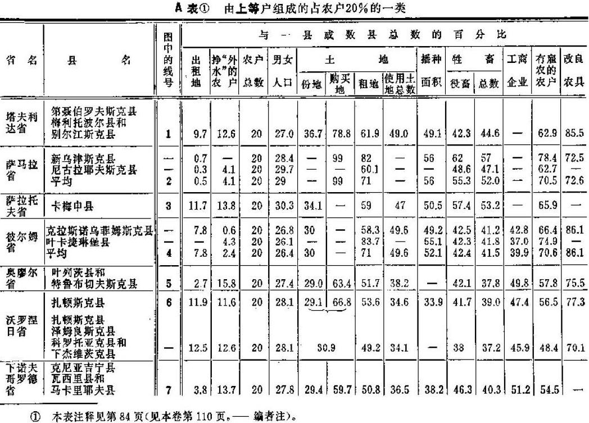
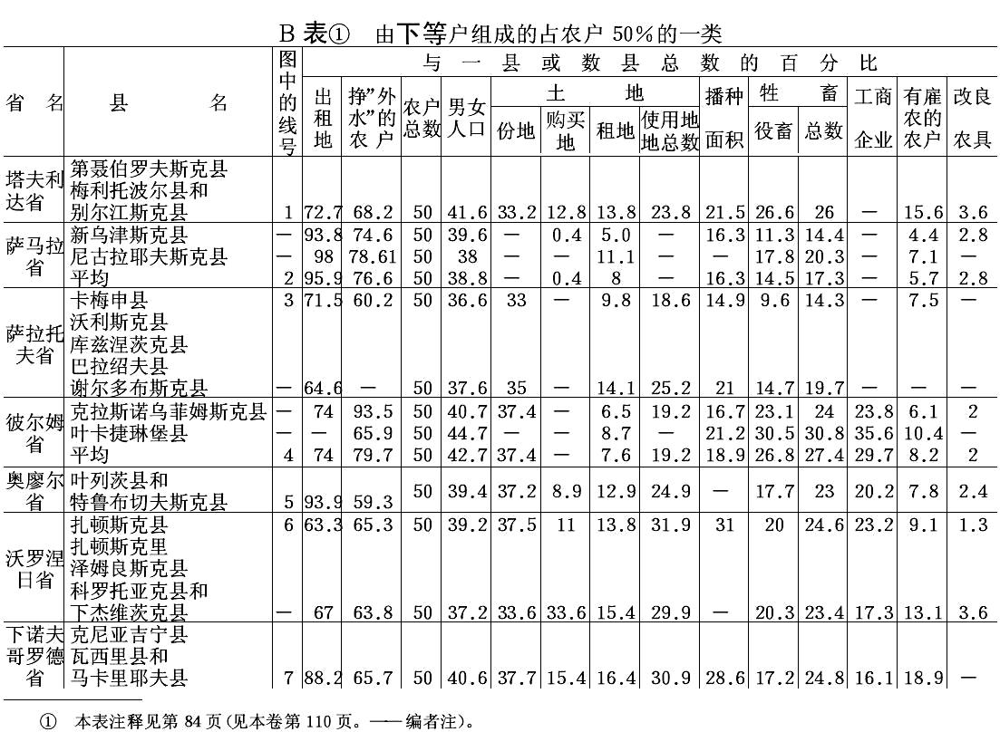

第二章 农民的分化
第二章 农民的分化
我们已经看到，小农分化为农业企业主和农业工人的过程，是资本主义生产中国内市场形成的基础。几乎每本关于改革后时期俄国农民经济状况的著作，都指出了所谓农民的“分解”。因此，我们的任务是研究这种现象的基本特点和确定它的意义。在以下的叙述中，我们所利用的是地方自治局统计机关的按户调查资料28。
一 新罗西亚29地方自治局统计资料
弗·波斯特尼柯夫先生在他的《南俄农民经济》（1891年莫斯科版）一书30中，收集和整理了塔夫利达省的地方自治局统计资料，以及赫尔松省和叶卡捷琳诺斯拉夫省的部分地方自治局统计资料。在论述农民分化的著作中，这本书应当算是最好的，因此我们认为有必要按照我们采用的方法来综合波斯特尼柯夫先生收集的资料，有时把地方自治局汇编的资料补充进去。塔夫利达省地方自治局统计人员采取了按播种面积的农户分类法，这种分类法很成功。由于粗放耕作条件下的谷物农业系统在这个地区占优势，这种分类法能够使人精确地判断每类农户的经济。下面就是塔夫利达省农民各经济类别的总的资料。(1)
| 农民类别 | 第聂伯罗夫斯克县 |
3县 |
农户总数
的百分数 | 每户 |
农户总数
的百分数 | 每户平均
播种面积
（单位俄亩） | 全部播种面积
（单位俄亩） | 全部播种面积
占总数的百分数 | 农户总数
的百分数 |
| 男女人口 | 男劳动力 |
| 一、不种地者 | 9 | 4.6 |
1.0 | 7.5 | ― |
― | ― |
} |
12.1 | 40.2 |
| 二、种地不满5俄亩者 | 11 | 4.9 |
1.1 | 11.7 | 3.5 |
34070 | 2.4 |
| 三、种地5―10俄亩者 | 20 | 5.4 |
1.2 | 21 | 8.0 |
140426 | 9.7 |
| 四、种地10―25俄亩者 | 41.8 | 6.3 |
1.4 | 39.2 | 16.4 |
540093 | 37.6 |
| 37.6 | 39.2 |
| 五、种地25―50俄亩者 | 15.1 | 8.2 |
1.9 | 16.9 | 34.5 |
494095 | 34.3 |
} |
50.3 |
20.6 |
| 六、种地超过50俄亩者 | 3.1 | 10.1 |
2.3 | 3.7 | 75.0 |
230583 | 16.0 |
| 总 计 | 100 |
6.2 | 1.4 | 100 |
17.1 | 1439267 |
100 | | |
|
播种面积分配不平均的现象很显著：占农户总数2/5（占人口的3/10左右，因为这里家庭人数低于平均数）的种地少的贫苦户只占有全部播种面积的1/8左右，他们靠自己的农业收入不能满足自己的需求。其次，中等农户也占农户总数的2/5左右，他们靠土地的收入来维持自己的中等开支（波斯特尼柯夫先生认为，需要有16―18俄亩播种面积才能维持一个家庭的中等开支）。最后，富裕农民（占农户的1/5左右和人口的3/10）的手里集中了全部播种面积的一半以上，而且每户的播种面积清楚地表明了这类农户的农业的“商业”性。为了精确地算出这种商业性农业在各类农户中的规模，波斯特尼柯夫先生使用了如下的方法。他从农户的全部播种面积中划出了食物面积（提供养活家庭和雇农的产品）、饲料面积（提供牲畜饲料）和经营面积（提供播种所需的种子、宅地等等），从而算出了提供销售产品的市场面积或商业面积。结果是，播种5―10俄亩的一类农户，只有11.8％播种面积提供市场产品，而随着每类农户播种面积的扩大，这个百分数依次递增为：36.5％―52％―61％。因此，富裕农民（两类上等户）经营的已经是商业性农业，每年获得总数为574―1500卢布的货币收入。这种商业性农业已经变为资本主义农业，因为富裕农民的播种面积超出家庭的劳动标准（就是说超出家庭靠自己的劳动能耕种的土地数量），使他们必须去雇用工人：据作者的计算，在塔夫利达省北部3个县，富裕农民雇用了14000多个农业工人。相反，贫苦农民则“提供工人”（5000多人），就是说要出卖自己的劳动力，因为就以种地5―10俄亩这一类来说，每户从农业中获得的货币收入只有30卢布左右(2)。因此，我们看到，这正是资本主义生产理论所论述的那种国内市场建立的过程：“国内市场”的发展，一方面是由于商业性即企业性农业的产品变成商品；另一方面是由于贫穷农民出卖的劳动力变成商品。
为了更清楚地认识这种现象，我们来考察一下每一类农户的状况。我们从上等户谈起。下面是关于上等户的土地占有和土地使用的资料：
塔夫利达省第聂伯罗夫斯克县
| 农户类型 | 每户耕地(单位俄亩） |
| 份地31 |
购买地 | 租 地 | 共 计 | <
| 一、不种地者 | 6.4 | 0.9 |
0.1 | 7.4 |
| 二、种地不满5俄亩者 | 5.5 | 0.04 |
0.6 | 6.1 |
| 三、种地5―10俄亩者 | 8.7 | 0.05 |
1.6 | 10.3 |
| 四、种地10―25俄亩者 | 12.5 | 0.6 |
5.8 | 18.9 |
| 五、种地20―50俄亩者 | 16.6 | 2.3 |
17.4 | 36.3 |
| 六、种地超过50俄亩者 | 17.4 | 30.0 |
44.13 | 91.4 |
| 平 均 | 11.2 | 1.7 |
7.0 | 19.9 |
由此我们可以看到，尽管富裕农民拥有的份地最多，但他们还是把大量的购买地和租地集中在自己手里，变成了小土地占有者和农场主。(3)租地17―44俄亩，每年的开支按当地价格计算约为70―160卢布左右。显然，我们在这里看到的已经是商业性活动了，因为土地变成了商品，变成了“猎取金钱的机器”。
其次，我们来看看役畜和农具的资料：
| 农户类别 | 塔夫利达省3县 |
第聂伯罗夫斯克县 |
| 每户牲畜头数 |
没有役畜
的农户的
百 分 数 |
每户农具② |
| 役畜 | 其他牲畜 |
共 计 | <运输工具 | 耕具 |
| ―、不种地者 | 0.3 | 0.8 |
1.1 | 80.5 | ― |
― |
| 二、种地不满5俄亩者 | 10 | 1.4 |
2.4 | 48.3 | ― |
― |
| 三、种地5―10俄亩者 | 1.9 | 2.3 |
4.2 | 12.5 | 0.8 |
0.5 |
| 四、种地10―25俄亩者 | 3.2 | 4.1 |
7.3 | 1.4 | 1.0 |
1.0 |
| 五、种地25―50俄亩者 | 5.8 | 8.1 |
13.9 | 0.1 | 1.7 |
1.5 |
| 六、种地超过50俄亩者 | 10.5 | 19.5 |
30.0 | 0.03 | 2.7 |
2.4 |
| 平 均 | 3.1 | 4.5 |
7.6 | 15.0 | |
|
(4)
富裕农民的农具比贫苦农民，甚至比中等农民要多好几倍。只要看一看这张表，就足以了解我国一些人在讲到“农民”时很喜欢搬用的那些“平均”数字，是完全虚假的。除了农民资产阶级的商业性农业外，这里还要加上商业牲畜牧业，即饲养粗毛羊。关于农具，我们还要引证那些取材于地方自治局统计汇编(5)的改良农具资料。在总数为3061台的收割机和割草机中，农民资产阶级（占农户总数的1/5）拥有2841台，即占92.8％。
富裕农民的耕作技术也大大超过中等农民（经营规模较大，农具较多，有闲置的货币资金等等），就是说：富裕农民“能较快地播种，更好地利用有利的天气，用较湿润的泥土覆盖种子”，按时收割庄稼；能一面运回庄稼，一面脱粒等等，这是十分自然的。生产农产品的开支（以单位产品计算）随着经营规模的扩大而降低，这也是十分自然的。波斯特尼柯夫先生用下面的计算特别详细地证明了这个论点：他算出了各类农户耕种100俄亩土地所需的劳动力（连雇工在内）、役畜、工具等等的数量。结果是，这种数量随着经营规模的扩大而减少。例如，种地不满5俄亩的农户耕种100俄亩份地，需要28个劳动力，28头役畜，4.7张犁和多铧浅耕犁，10辆轻便马车，而种地超过50俄亩的农户耕种100俄亩份地，只需要7个劳动力，14头役畜，3.8张犁和多铧浅耕犁，4.3辆轻便马车（我们省略了关于各类农户的较详细的资料，请那些对详细资料感兴趣的人去看波斯特尼柯夫先生的书）。作者总的结论是：“随着经营规模和耕地面积的扩大，农民用于养活劳动力即人和牲畜的支出（这是农业中一项最主要的支出）就依次递减。种地多的各类农户用在每俄亩播种面积上的这项支出几乎只有种地少的各类农户的一半。”（上述著作第117页）波斯特尼柯夫先生十分正确地认为，大农户的生产率较高因而也较稳固这一规律具有重要的意义，他不仅用新罗西亚一地而且用俄罗斯中部各省的极其详细的资料来证明这一规律(6)。商品生产渗入农业愈深，农民之间的竞争、争夺土地的斗争、争取经济独立的斗争愈加剧烈，促使农民资产阶级排挤中等农民和贫苦农民的这一规律就必定愈加有力地表现出来。不过必须指出，农业的技术进步，随着农业系统的不同，随着耕作制度的不同而有不同的表现。在谷物农业系统和粗放耕作的条件下，这种进步会表现在简单地扩大播种面积和缩减单位播种面积上使用的劳动力、牲畜等等的数量上；在畜牧农业系统和技术农业系统的条件下，在向集约农业过渡的条件下，这种进步就会表现在单位播种面积需要大量劳动力的块根作物的种植上，或产乳牲畜的饲养和牧草的种植上等等。
在说明上等农户时，还应当把大量使用雇佣劳动的情况补充进去。下面是关于塔夫利达省3县的资料：
| 农户类别 | 雇用雇农的
农户的百分数 | 每类农户的播种
面积（百分数） | | |
| 一、不种地者 | 3.8 | ― | | |
| 二、种地不满5俄亩者 | 2.5 | 2 | | |
| 三、种地5―10俄亩者 | 2.6 | 10 | | |
| 四、种地10―25俄亩者 | 8.7 | 38 | | |
| 五、种地25―50俄亩者 | 34.7 | 34 |
} | 50 |
| 六、种地超过50俄亩者 | 64.1 | 16 |
| 总 计 | 12.9 | 100 | | |
瓦·沃·先生在上述文章中对这个问题作了如下的议论。他引用了雇用雇农的农户数对农户总数的百分比，并作出结论说：“依靠雇佣劳动来耕种土地的农民数与人民总数比较起来，完全是微不足道的，在100个户主中间只有2―3个，最多5个，——这就是农民资本主义的全体代表；这〈俄国雇用雇农的农民经济〉不是在现代经济生活条件下牢牢扎了根的制度，而是一二百年前就有过的偶然现象”（1884年《欧洲通报》第7期第332页）。在把当雇农的农户也列入“农”户总数的情况下，把雇用雇农的农户数与“农”户总数相比较是什么意思呢？要知道，采用这种方法也可以摆脱掉俄国工业中的资本主义：只要举出使用雇佣工人的手工业家庭（即大小工厂主的家庭）对俄国手工业家庭总数的百分比就可以了；就会得出对“人民总数”来说是“完全微不足道的”比例。如果把雇用雇农的农户数只同真正独立的即只依靠农业过活而不出卖自己劳动力的农户数相比较，则要正确得多。其次，瓦·沃·先生忽略了一件小事，就是雇用雇农的农户属于最大的农户：雇用雇农的农户就“总数和平均数”来说，其百分数是“微不足道的”，而在握有全部生产的一半以上并生产大量销售粮的富裕农民那里，其百分数却是很大的（占34―64％）。因此可以断定，说什么这种雇用雇农的经济是一二百年前就有过的“偶然现象”，那是荒谬的！第三，只有忽视农业的真正特点，才会在评论“农民资本主义”时，只举出雇农即固定工人，而不提日工。大家知道，雇用日工在农业中起着特别重大的作用。(7)
现在我们来谈下等户。下等户由不种地和种地少的户主组成，他们“在经济状况上并没有很大的差别……二者不是给自己同村人当雇农，就是去挣外水，而且主要还是农业方面的外水”（上述著作第134页），就是说他们都属于农村无产阶级。我们必须指出，例如在第聂伯罗夫斯克县，有40％的农户属于下等户，没有耕具的农户占农户总数的39％。农村无产阶级除了出卖自己的劳动力，还从出租自己的份地取得收入：
| 农户类别 | 第聂伯罗夫斯克县 |
| 出租份地的户主的百分数 |
出租的份地的百分数 |
| ―、不种地者 | 80 | 97.1 |
| 二、种地不满5俄亩者 | 30 | 38.4 |
| 三、种地5―10俄亩者 | 23 | 17.2 |
| 四、种地10―25俄亩者 | 16 | 8.1 |
| 五、种地25―50俄亩者 | 7 | 2 9 |
| 六、种地超过50俄亩者 | 7 | 13.8 |
| 全 县 | 25.7 | 14.9 |
塔夫利达省3县总共出租了（1884―1886年）全部农民耕地的25％，而且这里还没有包括不是租给农民而是租给平民知识分子的土地。在这3县中，总计约有1/3的人口出租土地，并且租种农村无产阶级份地的主要是农民资产阶级。下面是关于这方面的资料。
| | 塔夫利达省3县 |
| 租用邻人的份地(单位俄亩） | 百分数 |
| 每户种地不满10俄亩的户主 | 16594 | 6 |
| 每户种地10―25俄亩的户主 | 89526 | 35 |
| 每户种地25俄亩以上的户主 | 150596 | 59 |
| 总计 | 256716 | 100 |
“目前份地已成为南俄农民日常生活中的普遍投机对象。立下字据，用土地作抵押取得借款……土地可出租或出卖1年、2年，或长达8年、9年和11年。”（上引著作第139页）可见农民资产阶级也是商业资本和高利贷资本的代表。(8)我们在这里看到，所谓“富农”和“高利贷者”同“善于经营的农夫”毫无共同之点的那种民粹派成见，显然遭到了驳斥。恰恰相反，农民资产阶级手中掌握了商业资本（以土地作抵押出借款项，收购各种产品等等）和产业资本（靠雇用工人来经营的商业性农业等等）的两条线。这两种形式的资本中，哪一种资本会由于另一种资本的减少而增长，这取决于周围的环境，取决于我国农村中的落后现象被排除的程度和文化普及的程度。
最后，我们来考察一下中等户（每户有播种面积10―25俄亩，平均为16.4俄亩）的状况。中等户的状况是过渡性的：农业的货币收入（191卢布）稍低于一个中等的塔夫利达人每年的开支（200―250卢布）。这里每户有役畜3.2头，而充分的“畜力”则需要有4头。因此，中等农户的经济处于不稳定的状况下，他们必须靠插犋来耕种自己的土地。(9)
自然，靠插犋耕种土地，生产率是较低的（转移时耗费时间，马匹不足等等），例如，在一个村子里，有人告诉波斯特尼柯夫先生说，“插犋户用多铧浅耕犁往往一天最多耕1俄亩，即比标准少一半”(10)。如果我们再补充一点：在中等户中有1/5左右的农户没有耕具，中等户提供的工人多于雇用的工人（按照波斯特尼柯夫先生的计算），那么我们就可以看出这类农户在农民资产阶级和农村无产阶级之间的不稳定性和过渡性了。现在我们来引证一些中等户受排挤的略微详细一点的资料：
塔夫利达省第聂伯罗夫斯克县③
| 户主类别 | 农户总数
的百分数 | 男女人口
总数的
百分数 |
份地 | 购买地 |
租地 |
出租地 | 使用土地总数 |
播种面积 |
单位
俄亩 | 百分数 | 单位
俄亩 | 百分数 | 单位
俄亩 | 百分数 | 单位
俄亩 | 百分数 | 单位
俄亩 | 百分数 | 单位
俄亩 | 百分数 |
| 贫苦户 | 39.9 |
32.6 | 56445 | 25.5 |
2003 | 6 | 7839 |
6 | 21551 | 65.5 |
44736 | 12.4 | 38439 |
11 |
| 中等户 | 41.7 |
42.2 | 102794 |
46.5 | 5376 | 16 |
48398 | 35 | 8311 |
25.3 | 148257 |
41.2 | 137344 |
43 |
| 富裕户 | 18.4 |
25.2 | 61844 | 28 |
26531 | 78 | 81646 |
59 | 3039 | 9.2 |
166982 | 46.4 |
150614 | 46 |
| 全县共计 | 100 |
100 | 221083 | 100 |
33910 | 100 | 137833 |
100 | 32901 | 100 |
359975 | 100 | 326397 |
100 |
(11)
可见，份地的分配是最“平均的”，虽然其中下等户受上等户排挤的情况也是明显的。但是，如果我们离开这种强制的土地占有，而去考察自由的土地占有，即购买地和租地，那么情况就根本不同了。这一类土地的集中是厉害的，因此农民使用土地总数的分配完全不同于份地的分配：中等户被排挤到第二位（份地占46％，使用土地占41％），富裕户大大地扩大自己的土地占有（份地占28％，使用土地占46％），而贫苦户则被排挤在耕作者之外了（份地占25％，使用土地占12％）。
上表向我们指出了我们还会遇到的一个值得注意的现象，就是份地在农民经济中的作用日益缩小。在下等户中发生这种现象，是由于出租土地，在上等户中则是由于购买地和租地在总经营面积中占巨大的优势。改革前制度的残余（农民被束缚在土地上，平均的征税性土地占有）正在被渗入农业中的资本主义彻底肃清。
至于谈到其中的租地，则上面引证的资料就能使我们弄清楚民粹派经济学家议论这个问题时所犯的一个极其普遍的错误。我们拿瓦·沃·先生的议论来看。他在上面引证的文章中直接提出了租地同农民分化的关系问题。“租地是否能促使农户分化为大农户和小农户，促使中等户即典型农户的消灭呢？”（《欧洲通报》，上引期第339―340页）瓦·沃·先生对这个问题的回答是否定的。他的论据如下：（1）“租地的人占很大的百分数。”例如，各不同省份的不同县份的百分数是：38―68％；40―70％；30―66％；50―60％。（2）每户的租地面积不大，按坦波夫省统计机关的资料来看是3―5俄亩。（3）份地少的农民租地多于份地多的农民。
为了使读者能够清楚地认识到这些论据不仅站不住脚，而且简直不适用，我们来引证一下第聂伯罗夫斯克县的有关资料(12)。
| | 租地户的百分数 | 每一租地户所租耕地(单位俄亩） |
每俄亩的价格（单位卢布） |
| 种地不满5俄亩者 | 25 | 2.4 |
15.25 |
| 种地俄亩者 | 42 | 3.9 |
12.00 |
| 种地10―25俄亩者 | 69 | 8.5 |
4.75 |
| 种地25―59俄亩者 | 88 | 20.0 |
3.75 |
| 种地超过50俄亩者 | 91 | 48.6 |
3.55 |
| 全 县 | 56.2 | 12.4 |
4.23 |
试问，“平均”数字在这里能有什么意义呢？难道租地户“很多”（占56％）这个事实就消灭了富裕户租地的集中吗？把农民加在一起得出“平均”租地面积[每一租地户平均12俄亩。人们常常甚至不是按每一租地户，而是按每一现有农户计算的。例如，卡雷舍夫先生在其著作《农民的非份地租地》（《地方自治局统计总结》1892年多尔帕特版第2卷）中就是这样做的]，这不是很可笑吗？因为在这些农民中，有一类显然由于迫切需要，在蒙受极大损失下以极不合理的价格（每俄亩15卢布）租进2俄亩土地，而另一类农民除了自己足够数量的土地外，还以低得无比的价格（每俄亩3.55卢布）大批“购买”土地，即租进48俄亩。第三个论据同样是空泛的：瓦·沃·先生自己就曾想驳倒它，因为他承认有关“整个村社”的资料（在把农民按份地分类的情况下）“并没有提供村社内部情况的正确概念”（上述文章第342页）。(13)
如果认为农民资产阶级手中所集中的租地只是个人租地，而没有扩展到公共的即村社的租地，那就大错了。决不是这样的。租地始终“按照货币”分配，即使是村社租地，各类农民之间的关系也丝毫没有改变。因此，卡雷舍夫先生那样的议论，说什么村社租地与个人租地的关系反映了“两种原则〈！？〉——村社原则和个人原则之间的斗争”（上引书第159页），说什么“劳动原则和租地在村社社员之间平均分配的原则”是村社租地“所特有的”（同上，第230页），都完全是民粹派的成见。虽然卡雷舍夫先生的任务是作“地方自治局统计总结”，他却煞费苦心地避开了关于租地集中在少数富裕农户手中的全部丰富的地方自治局统计材料。我们来举一个例子。上述塔夫利达省3县农民村团从官方租来的土地，按各类农户分配的情况如下：
| | 租地户数 | 租地面积
（单位俄亩） | 总数的
百分数 | | | 每一租地户租地
面积（单位俄亩） |
| 种地不满5俄亩者 | 83 | 511 |
1 | } |
4 | 6.1 |
| 种地5―10俄亩者 | 444 | 1427 |
3 | 3.2 |
| 种地10―25俄亩者 | 1732 | 8711 |
20 | | |
5.0 |
| 种地25―50俄亩者 | 1245 | 13375 |
30 | } |
76 | 10.7 |
| 种地超过50俄亩者 | 632 | 20283 |
46 | 32.1 |
| 共 计 | 4136 |
44307 |
100 | | |
10.7 |
这就是“劳动原则”和“平均分配原则”的小小例证！
关于南俄农民经济的地方自治局统计资料就是这样。这些资料确凿地说明了农民的完全分化，说明了农民资产阶级在农村中占完全的统治地位。(14)因此，瓦·沃·先生和尼·―逊先生对这些资料的态度是很有意思的，尤其是因为这两位著作家以前都承认提出农民分化问题的必要性（瓦·沃·先生在上述1884年的文章中；尼·―逊先生则在1880年的《言论》32上——他指出了村社中那种有趣的现象：“不善于经营的”农夫抛弃了土地，而“善于经营的”农夫拣到了最好的土地；见《论文集》第71页）。必须指出，波斯特尼柯夫先生的著作具有两重性：一方面作者巧妙地收集了和仔细地整理了极有价值的地方自治局统计资料，同时善于摆脱“把农民村社看作某种单一的整体的倾向，而直到现在我国城市知识分子对村社还是这样看的”（上述著作第351页）。另一方面，作者缺乏理论指导，根本认识不到他所整理的资料的价值，而从极为狭隘的“措施”观点来看待这些资料，并着手制定关于“农业-手艺-工业村社”的方案，关于必须“限制”、“责成”、“监督”等等的方案。因此，我国民粹派竭力不理会波斯特尼柯夫先生著作的有积极意义的第一部分，而把全部注意力都集中在第二部分上。瓦·沃·先生和尼·―逊先生都非常严肃地着手“批驳”波斯特尼柯夫先生的毫不严肃的“方案”（瓦·沃·先生在1894年《俄国思想》33第2期上。尼·―逊先生在《论文集》第233页的脚注中），责备他心怀叵测，要在俄国推行资本主义，同时他们却用心良苦地撇开了那些揭露目前资本主义关系在南俄农村中占统治地位的资料。(15)
二 萨马拉省地方自治局统计资料
我们谈了南部边疆地区，现在来谈东部边疆地区即萨马拉省。我们就以调查时间最晚的新乌津斯克县为例；在该县汇编中，把农民按经济标志作了最详细的分类(16)。下面是有关各类农户的总的资料（下面的资料包括28276户有份地的居民，有男女人口164146人，即只包括该县的俄罗斯居民，而不包括德意志人和“独立农庄主”——既在村社34也在独立农庄35中从事经营的户主。如果加上德意志人和独立农庄主，还会大大突出分化的情景）。
| 户主类别 | 农户总数的
百分数 | 每户平均
播种面积
（单位俄亩） |
播种面积占
总数的百分数 |
| 贫苦户 | { | 无役畜者 |
20.7 |
} |
37.1％ | 2.1 |
2.8 | } |
8.0％ |
| 有1头役畜者 | 16.4 | 5.0 |
5.2 |
| 中等户 | { | 有2―3头役畜者 |
26.6 |
} |
38.2％ | 10.2 |
17.1 | } |
28.6％ |
| 有4头役畜者 | 11.6 | 15.9 |
11.5 |
| 富裕户 | { | 有5―10头役畜者 |
17.1 |
} |
24.7％ | 24.7 |
26.9 | } |
63.4％ |
| 有10―20头役畜者 | 5.8 | 53.0 |
19.3 |
| 有20头以上役畜者 | 1.8 | 149.5 |
17.2 |
| 共 计 | 100 |
| | 15.9 |
100 | | |
农业生产的集中程度是很大的：“村社”资本家（占农户总数的1/14，即有10头以上役畜的农户）占有全部播种面积的36.5％，这同占农户总数75.3％的贫苦农户和中等农户一共占有的播种面积相等！“平均”数字（每户播种面积为15.9俄亩）在这里也和通常一样完全是虚假的，只造成一种普遍富裕的错觉。我们现在来考察一下有关各类农户的其他资料。
| 户主类别 | 用自己农具耕种全部
份地的户主的百分数 | 有改良农具的
户主的百分数 | 每户全部牲畜头数
（折成大牲畜） | 牲畜总数
的百分数 |
| 无役畜者 | 2.1 | 0.03 |
0.5 | 1.5 |
} |
6.4％ |
| 有1头役畜者 | 35.4 | 0.1 |
1.9 | 4.9 |
| 有2―3头役畜者 | 60.5 | 4.5 |
4.0 | 16.8 |
} |
28.6％ |
| 有4头役畜者 | 74.7 | 19.0 |
6.6 | 11.8 |
| 有5―10头役畜者 | 82.4 | 40.3 |
10.9 | 29.2 |
} |
65.0％ |
| 有10―20头役畜者 | 90.3 | 41.6 |
22.7 | 20.4 |
| 有20头以上役畜者 | 84.1 | 62.1 |
55.5 | 15.4 |
| 共 计 | 52.0 |
13.9 | 6.4 | |
| 100 |
可见，在下等户中，独立的业主是很少的；贫苦农民根本没有改良农具，而中等农民的改良农具也是微不足道的。牲畜的集中比播种面积的集中还要厉害；显然，富裕农民把资本主义畜牧业同大规模的资本主义耕作业结合起来了。在相反的一极，我们看到了应当算作有份地的雇农和日工的“农民”，因为他们生活资料的主要来源是出卖劳动力（我们立刻就会看到），而地主有时也给自己的雇农一头或两头牲畜，以便把他们束缚在自己的农场上并降低工资。
不言而喻，各类农户不仅经营规模不同，而且经营方法也不同：第一，在上等户中，很大一部分户主（40―60％）有改良农具（主要是犁，其次是马拉脱粒机和蒸汽脱粒机、风车、收割机等）。在24.7％的上等户手中集中了82.9％的改良农具；在38.2％的中等户手中有17％的改良农具；在37.1％的贫苦农户手中只有0.1％ 的改良农具（在5724部改良农具中只占7部）(17)。第二，正如新乌津斯克县汇编的编者所说的（第44―46页）：马匹少的农民同马匹多的农民比较起来，必然有“不同的经营制度，不同的全部经营活动结构”。殷实农民“让土地休闲……秋天用犁耕地……春天再耕一遍，并且边耙边播种……翻耕的熟荒地，为保墒而用磙子压平……种黑麦时耕两遍”，可是贫穷的农民“不让土地休闲，年年在这块土地上播种俄国小麦……种小麦时只在春天犁一遍……种黑麦时不休耕也不犁地，而在余茬间播种……种小麦到晚春时节才耕地，因此谷物常常不发芽……种黑麦时只犁一遍，或者在余茬间播种，而且不及时……每年徒劳无益地耕种同一块土地，不让它休闲”。“如此等等，不一而足”，编者在这张清单的结尾说。“殷实农民和贫穷农民经营制度根本不同的一些确凿事实，造成的后果是一些人的谷物质量差，收成坏，另一些人则有较好的收成。”（同上）
但是在村社的农业经济中怎么能产生出这种大资产阶级呢？各类农户的土地占有和土地使用的数字回答了这个问题。我们拿来进行分类的农民中，总共有57128俄亩购买地（属于76个农户）和304514俄亩租地，其中5602户有177789俄亩非份地租地；3129户有47494俄亩别的村团36的份地租地，7092户有79231俄亩本村团的份地租地。这样大量的土地，占农民全部播种面积2/3以上，其分配情况如下：
| 户主类别 | 有购买地
的农户的
百分数 | 每户购买地
面积（单位
俄亩） | 全部购
买地的
百分数 | 非份地租地 |
份地租地 | 全部
租地
的百
分数 | 不经营而
出租土地
的农户的
百分数 |
| 在别的村团 |
在本村团 |
租地户的
百分数 | 每户租地
面积（单
位俄亩） | 农户的
百分数 | 每户租地
面积（单
位俄亩） | 农户的
百分数 | 每户租地
面积（单
位俄亩） |
| 无役畜者 | 0.02 | 100 |
0.2 | 2.4 | 1.7 |
1.4 | 5.9 | 5 |
3 | 0.6 | 47.0 |
| 有1头役畜者 | ― | ― |
― | 10.5 | 2.5 |
4.3 | 6.2 | 12 |
4 | 1.6 | 13.0 |
| 有2―3头役畜者 | 0.02 | 93 |
0.5 | 19.8 | 3.8 |
9.4 | 5.6 | 21 |
5 | 5.8 | 2.0 |
| 有4头役畜者 | 0.07 | 29 |
0.1 | 27.9 | 6.6 |
15.8 | 6.9 | 34 |
6 | 5.4 | 0.8 |
| 有5―10头役畜者 | 0.1 | 101 |
0.9 | 30.4 | 14.0 |
19.7 | 11.6 | 44 |
9 | 16.9 | 0.4 |
| 有10―20头役畜者 | 1.4 | 151 |
6.0 | 45.8 | 54.0 |
29.6 | 29.4 | 58 |
21 | 24.3 | 0.2 |
| 有20头以上役畜者 | 8.2 | 1254 |
92.3 | 65.8 | 304.2 |
36.1 | 67.4 | 58 |
74 | 45.4 | 0.1 |
| 共 计 | 0.3 | 751 |
100 | 19.8 | 31.7 |
11.0 | 15.1 | 25 |
11 | 100 | 12 |
我们在这里看到购买地和租地的大量集中。全部购买地的9/10以上集中在1.8％的最大富户手中。在全部租地中，有69.7％集中在农民资本家手中，86.6％集中在上等农户手中。把有关租种份地和出租份地的资料对照一下，就清楚地看出土地落到了农民资产阶级手中。土地变为商品，在这里就引起成批购买的土地价格降低（因而也引起倒卖土地）。计算一下每俄亩非份地租地的价格，从下等户至上等户，我们就可以得到如下的数字：3.94卢布；3.20卢布；2.90卢布；2.75卢布；2.57卢布；2.08卢布；1.78卢布。为了说明民粹派因忽视租地的集中而犯了怎样的错误，我们以卡雷舍夫先生在《收成和粮价对俄国国民经济某些方面的影响》（1897年圣彼得堡版）这部名著中的议论为例。卡雷舍夫先生作出结论说：当收成好转，粮价下跌，而租地价格上涨时，租地企业主必然会减少需求，可见，租地价格是消费经济的代表抬高的（第1卷第288页）。结论完全是随意作出来的：尽管粮价下跌，农民资产阶级照样抬高租地价格，这是完全可能的，因为收成的好转可以补偿粮价的下跌。即使没有这种补偿，富裕农民照样抬高租地价格，靠使用机器来降低粮食的生产价格，这也是完全可能的。我们知道，在农业中愈来愈多地使用机器，而这些机器是集中在农民资产阶级手中的。卡雷舍夫先生不去研究农民的分化，却随意地和错误地提出中等农民的前提。因此，他在上引版本中如法炮制出来的一切断语和结论，是不能有任何意义的。
我们弄清楚了农民中的各种成分，就能不费事地搞清楚国内市场问题了。既然富裕农民掌握了全部农业生产的2/3左右，那他们显然会提供更大更大部分的销售粮。富裕农民生产销售粮，而贫穷农民必须出卖自己的劳动力来购买粮食。下面是关于这方面的资料(18)：
| 户主类别 | 雇用雇工的户主的百分数 |
从事农业副业的男劳力的百分数 |
| 无役畜者 | 0.7 | 71.4 |
| 有1头役畜者 | 0.6 | 48.7 |
| 有3头役畜者 | 1.3 | 20.4 |
| 有4头役畜者 | 4.8 | 8.5 |
| 有5―10头役畜者 | 20.3 | 5.0 |
| 有10―20头役畜者 | 62.0 | 3.9 |
| 有20头以上役畜者 | 90.1 | 2.0 |
| 共 计 | 9.0 | 25.0 |
我们建议读者把我国民粹派的议论和这些有关国内市场建立过程的资料加以比较……“如果农夫富有，则工厂繁荣，反过来说也是一样。”（瓦·沃·《农民经济中的进步潮流》第9页）显然，瓦·沃·先生根本不关心这样一种财富的社会形式问题，这种财富是“工厂”所需要的，它的产生无非是由于一方面把产品和生产资料变成商品，另一方面把劳动力也变成商品。尼·―逊先生谈到销售粮食时，就用这样的话来安慰自己：这种粮食是“农夫-庄稼汉”的产品（《论文集》第24页），在运送这种粮食时，“铁路是靠农夫来维持的”（第16页）。事实上，难道这些“村社社员”资本家不是“农夫”吗？尼·―逊先生在1880年写过并且在1893年重新刊印过这样的话：“我们不定在什么时候还会有机会指出，在村社土地占有制占优势的地区，建立在资本主义原则上的农业几乎完全没有〈原文如此！！〉，只有在村社联系完全破裂或正在崩溃的地区，这种农业才可能存在。”（第59页）尼·―逊先生永远碰不到而且也不可能碰到这样的“机会”，因为事实表明：资本主义农业恰恰是在“村社社员”(19)中间发展起来的，而所谓的“村社联系”完全适应于大耕作者的雇用雇农经济。
尼古拉耶夫斯克县各类农户间的关系是十分相似的（上引汇编第826页及以下各页。我们除去了住在外地的和无土地的）。例如，富裕户（有10头以上役畜的）占农户的7.4％，占人口的13.7％，集中了全部牲畜的27.6％和租地的42.6％，而贫苦户（无马的和有1匹马的）占农户的29％，占人口的19.7％，却只有全部牲畜的7.2％和租地的3％。我们再重复一遍，可惜尼古拉耶夫斯克县的表太简略了。为了结束对萨马拉省所作的叙述，我们从萨马拉省《统计资料综合汇编》中引证下列有关农民状况的极有教益的评述：
“……少地农民从西部各省迁来而更加加剧的人口的自然增长，以及想发财致富的土地投机商人在农业生产方面的出现，使得土地的租用形式一年年更形复杂，提高了土地的价格，把土地变成了商品，而这种商品又如此迅速而急剧地使一些人发财，使另外许多人破产。为了说明后一种情况，我们举出南部一些商人农场和农民农场的耕地规模，其中有3000―6000俄亩耕地的并不少见，而有些农场在租进几万俄亩官地的情况下，竟耕种了8000―10000―15000俄亩土地。
萨马拉省的农业（农村）无产阶级的存在和发展，在很大程度上是由于最近销售粮生产的扩大，租地价格的提高，生荒地和牧场的开垦，森林的清除等等现象促成的。全省的无地农户共有21624户，而不经营的农户有33772户（有份地的农户中的），无马的和有1匹马的农户共有110604户，每户按5口多人计算，共有男女人口60万。我们尽可以也把他们当作无产阶级，虽然他们在法律上仍拥有某一份村社土地。事实上，他们是大农场的日工、种地人、牧人、收割人以及诸如此类的工人，他们耕种自己的半俄亩至1俄亩份地，是为了养活家里的人。”（第57―58页）
可见，调查者不仅承认无马的农民是无产阶级，而且承认有1匹马的农民也是无产阶级。我们指出的这个重要结论，是和波斯特尼柯夫先生的结论（以及分类表资料）完全相符的，它表明了下等农户的真正的社会经济意义。
三 萨拉托夫省地方自治局统计资料
现在我们来谈中部黑土地带，谈萨拉托夫省。我们举卡梅申县为例，因为只有这一个县把农民按役畜作了十分完善的分类(20)。
全县的资料如下（农户40157户，男女人口263135人。播种面积435945俄亩，即每一“中等”户有10.8俄亩）：
| 户主类别 | 农户的百分数 |
男女人口
的百分数 | 平均播种面积
（单位俄亩） | 全部播种面积
的
百分数 | 不种地
户的
百分数 | 每户全部
牲畜折成
大牲畜
的头数 | 牲畜总数
的百分数 |
| 无役畜者 | 26.4 |
} |
46.7 | 17.6 | 1.1 |
2.8 | } |
12.3 |
72.3 | 0.6 | 2.9 |
} |
11.8 |
| 有1头役畜者 | 20.3 |
15.9 | 5.0 | 9.5 |
13.1 | 2.3 |
8.9 |
| 有2头役畜者 | 14.6 |
} |
32.2 | 13.8 | 8.8 |
11.8 |
} | 34.4 |
4.9 | 4.1 | 11.1 |
} |
32.1 |
| 有3头役畜者 | 9.3 |
10.3 | 12.1 | 10.5 |
1.5 | 5.7 |
9.8 |
| 有4头役畜者 | 8.3 |
10.4 | 15.8 | 12.1 |
0.6 | 7.4 |
11.2 |
| 有5头以上役畜者 | 21.1 | |
21.1 | 32.0 | 27.6 |
53.3 | | 53.3 |
0.2 | 14.6 | 56.1 |
| 56.1 |
| 共 计 | 100 |
100 | 10.8 |
100 | 22.7 |
5.2 | 100 |
这样，我们在这里又看到播种面积集中在大耕作者手中。只占农户1/5（占人口1/3左右）的富裕农民(21)掌握着全部播种面积的一半以上（53.3％），而且播种面积清楚地表明了它的商业性：每户平均有27.6俄亩。富裕农民每户的牲畜数量也很大，达到14.6头（折成大牲畜，即10头小牲畜算1头大牲畜），全县农民的牲畜总数中，几乎有3/5（56％）集中在农民资产阶级手中。在乡村的相反的一极，我们所看到的是相反的现象：下等户即农村无产阶级十分贫困，在我们引用的例子中他们占农户的1/2弱（占人口的1/3左右），然而只占有全部播种面积的1/8，至于他们在牲畜总数中所占的份额就更少了（11.8％）。这主要是有份地的雇农、日工和工业工人。
随着播种面积的集中和农业日益带有商业性，农业变成了资本主义的农业。我们看到了已经熟悉的现象：下等户出卖劳动力，上等户则购买劳动力。
| 户主类别 | 有雇佣男工的户主的百分数 |
经营副业的农户百分数 |
| 无役畜者 |
1.1 | 90.9 |
| 有1头役畜者 |
0.9 | 70.8 |
| 有2头役畜者 |
2.9 | 61.5 |
| 有3头役畜者 |
7.1 | 55.0 |
| 有4头役畜者 |
10.0 | 58.6 |
| 有5头以上役畜者 |
26.3 | 46.7 |
| 共 计 |
8.0 | 67.2 |
这里必须作重要的说明。帕·尼·斯克沃尔佐夫在他的一篇文章中已经十分正确地指出：地方自治局的统计把“副业”（或“外水”）这个术语的意义定得过于“广泛”。事实上，把农民在份地以外所干的所有一切活计都算作“副业”。厂主和工人；磨坊主、瓜田主、日工和雇农；包买主、商人和小工；木材业者和伐木工人；承包人和建筑工人；自由职业者、职员和乞丐等等——这些人都算作“从事副业者”！这样滥用术语，是一种传统观点（我们甚至可以说是官方观点）的残余，按照这种观点看来，“份地”是农夫“真正的”、“天然的”活计，而其余的一切活计一律都属于“份外的”副业。在农奴制时，这样滥用术语是有理由的，而现在则是一种不可容忍的时代错误了。这类术语在我国保持下来，部分是由于这类术语同虚构“中等”农民的做法极为合拍，并且直接排斥研究农民分化的可能性（特别是在农民“份外的”活计种类繁多的那些地方。我们提醒一点：卡梅申县是著名的条格布业中心）。如果农民的“副业”不是按它们的经济类型来分类，如果不把“从事副业者”中的业主和雇佣工人区别开来，那么农民经济按户调查资料的整理(22)将是不能令人满意的。这是最低数量的经济类型，不把这两种经济类型加以区分，经济统计就是不能令人满意的。当然，能作更详细的分类那就最好了，例如分成：有雇佣工人的业主；没有雇佣工人的业主；商人、包买主、小店主等等；手艺人，即为消费者工作的从事副业者等等。
回头讲到我们那张统计表，我们可以指出，我们毕竟有一定的理由把“副业”理解为出卖劳动力，因为在农民“从事副业者”中间，通常是雇佣工人占多数。如果能够单把雇佣工人从“从事副业者”中间划分出去，那么“从事副业者”在上等户中所占的百分数当然是小得很的。
至于谈到雇佣工人的资料，我们在这里应当指出，哈里佐勉诺夫先生的意见是完全错误的，在他看来，似乎“在收获、割草和做零活方面短期雇用[工人]是极普遍的现象，不能作为经济强弱的突出标志”（《萨拉托夫省统计资料汇集》《导言》第46页）。但是恰恰相反，不论是理论见解，也不论是西欧的实例和俄国的资料（关于这些资料将在下面谈到），都使我们看出雇用日工是农村资产阶级非常突出的标志。
最后，谈到租地，资料在这里也表明，它同样被农民资产阶级所夺取。应当指出，在萨拉托夫省统计人员的综合表中，并未提供租地和出租地的户主数字，仅仅提供了租地和出租地(23)的数量；因此，我们只能算出现有每一农户的而不是每一租地户的租地和出租地数量。
| 户主类别 | 每一份地农户的土地
（单位俄亩） | 土地总数的百分数 |
使用土地总数
（份地＋租地－出租地）
的百分数 |
| 份地耕地 | 租地 |
出租地 | 份地 |
租地 | 出租地 |
| 无役畜者 | 5.4 | 0.3 |
3.0 | 16 | |
| 1.7 | |
| 52.8 | |
| 5.5 | |
|
| 有1头役畜者 | 6.5 | 1.6 |
1.3 | 14 | |
| 6 | |
| 17.6 | |
| 10.3 | |
|
| 有2头役畜者 | 8.5 | 3.5 |
0.9 | 13 |
} | 34 |
9.5 | } |
30.1 | 8.4 |
} | 17.3 |
12.3 |
} |
34.6 |
| 有3头役畜者 | 10.1 | 5.6 |
0.8 | 10 | 9.5 |
4.8 | 10.4 |
| 有4头役畜者 | 12.5 | 7.4 |
0.7 | 11 | 11.1 |
4.1 | 11.9 |
| 有5头以上役畜者 | 16.1 | 16.6 |
0.9 | 36 | |
| 62.2 | |
| 12.3 | |
| 49.6 | |
|
| 共 计 | 9.3 |
5.4 |
1.5 | 100 |
100 |
100 |
100 |
这样，我们在这里也可以看出，愈是富裕的农民，他们的租地就愈多，尽管他们有较多的份地。我们在这里也可以看到，富裕农民在排挤中等农民；农民经济中份地的作用在农村的两极有日益缩小的趋向。
我们来比较详细地谈谈这些有关租地的资料。同这些资料相联系的，是卡雷舍夫先生的极有意义和极为重要的研究和论断（上引《地方自治局统计总结》），以及尼·―逊先生对它们的“修正”。
卡雷舍夫先生用单独一章（第3章）阐述了“租地同租地户富裕程度的依存关系”。他得出总的结论是：“在其他条件相同的情况下，争取租地的斗争对较殷实的人有利。”（第156页）“较富裕的农户……把较贫穷的农户排挤到次要地位。”（第154页）因此我们看到，对地方自治局统计资料进行总的考察所得出的结论，同我们研究的资料所得出的结论是一样的。同时，卡雷舍夫先生在研究租地面积同份地面积的依存关系时，作出了如下的结论：按份地分类“把我们感兴趣的现象的意义搞模糊了”（第139页），因为“拥有……租地较多的是（a）土地较少的各等农户，然而是（b）各等农户中较富裕的各类农户。显然，我们在这里看到的是两种截然相反的影响，如果把它们混淆起来就会妨碍人们去理解每种影响的意义”（同上）。如果我们始终坚持按殷实程度划分农民类别的观点，这个结论是不言而喻的，因为在我们的资料中到处可以看到，富裕农民抢租土地，虽然他们分得较多的份地。显然，农户的富裕程度正是租地的决定因素，这种因素只是随着份地的条件和租地的条件的变化而有所改变，但仍旧不失为决定因素。卡雷舍夫先生虽然研究了“富裕程度”的影响，但是并没有始终坚持上述观点，因此他在谈到租地户的土地多少和租地之间的直接依存关系时，所描述的现象是不确切的。这是一方面。另一方面，卡雷舍夫先生研究的片面性，妨碍了他对富人抢租土地的全部意义的估计。他在研究“非份地租地”时，只是把关于租地的地方自治局统计资料综合了一下，而没有涉及租地户本身的经济。显然，作这种较肤浅的研究，不能解决租地与“富裕程度”的关系问题和租地的商业性问题。例如卡雷舍夫先生手头也有卡梅申县的统计资料，但他只是抄录租地一项的绝对数字（见附录8，第ⅩⅩⅩⅥ页），并计算出每一份地户的租地平均数（正文第143页）。至于租地集中在富裕农民手中，租种土地的工业性，租种土地和下等农户出租土地的联系，这一切都被撇在一边了。总之，卡雷舍夫先生不会不看到，地方自治局的统计资料驳斥了民粹派关于租地的概念，表明了贫苦农民受富裕农民的排挤，但是他不正确地评述了这一现象，并且因为没有全面地研究这种现象，而同这些资料发生了矛盾，于是重弹起“劳动原则”等等的老调。然而，即使只是肯定农民内部存在经济摩擦和经济斗争，在民粹派先生们看来，也已经是异教邪说，因此他们就赶忙按照自己的观点“纠正”卡雷舍夫先生。请看，自称（第153页脚注）“利用”尼·卡布鲁柯夫先生对卡雷舍夫先生的反驳意见的尼·―逊先生是怎样干的。尼·―逊先生在其《论文集》第9节中谈论了租种土地及其各种形式。他说：“当农民占有的土地足以使他靠自己土地上的农业劳动就能过活时，他就不租地了。”（第152页）这样，尼·―逊先生把农民的租地具有企业性和经营商业性耕作业的富裕农民抢租土地，都不加思索地否定掉了。他的证据何在呢？根本没有，因为“人民生产”的理论不是论证出来的，而是颁布出来的。尼·―逊先生为反驳卡雷舍夫先生，从地方自治局汇编中援引了关于赫瓦伦斯克县的一张表，证明“在役畜头数相等的条件下，份地愈少，就愈需要用租地来弥补这个不足”（第153页）(24)；还证明“如果农民占有牲畜的情况完全相同，如果在他们的经营中有充分的劳动力，那么他们自己所占份地愈少，租进土地就愈多”（第154页）。读者可以看到，这种“结论”只是从词句上来挑剔卡雷舍夫先生的不确切的表述，尼·―逊先生对租地与富裕程度的联系问题，只是说了一通空洞的废话。在役畜数量相等的条件下，自己土地愈少，租地就愈多，难道这不是很明显吗？这是没有什么好说的，因为这里把富裕程度相等作为条件，而我们要谈的正是富裕程度的差别。尼·―逊先生关于有足够土地的农民不租地的论断，用这一点绝对证明不了，而且尼·―逊先生引用的表只说明他没有懂得他引证的数字，因为他根据份地数量把农民等同起来，就更加明显地突出了“富裕程度”的作用以及贫苦农民出租土地（自然是出租给那些富裕农民）时抢租土地的情形(25)。请读者回忆一下刚才引证的关于卡梅申县租地分配的资料；假定我们选出“役畜头数相等”的农民，把他们按份地分成各等，并按劳力分成各小类，然后我们宣称，他们的土地愈少，租地就愈多，等等。难道用这种方法就会使富裕农民这一类别消失吗？然而尼·―逊先生用自己的那些空话所做到的，正是富裕农民这一类别消失不见了，他也就有可能重复民粹派的陈旧偏见了。
尼·―逊先生按照有0个、1个、2个等等劳力的各类农户，来计算每户农民的租地，这种根本不合适的方法，却被Л．马雷斯先生在《收成和粮价对俄国国民经济某些方面的影响》一书（第1卷第34页）中重复使用了。下面是马雷斯先生（象这部用民粹派偏见写成的书的其他作者一样）大胆利用“平均”数字的一个小小例证。他说，在梅利托波尔县，没有男劳动力的租地户每户有租地1.6俄亩；有1个男劳动力的有租地4.4俄亩；有2个男劳动力的有租地8.3俄亩；有3个男劳动力的有租地14俄亩（第34页）。结论是：“租地大约是按人口平均分配的”！！马雷斯先生并不认为有必要考察一下，租地实际是按殷实程度不同的各类农户分配的，虽然他能够从弗·波斯特尼柯夫先生的著作和地方自治局的汇编中知道这种情况。在有一个男劳动力的这类农户中，每个租地户有租地4.4俄亩这一“平均”数字，是由下列数字相加得出来的：播种5―10俄亩并有2―3头役畜的这类农户的4俄亩，播种超过50俄亩并有4头以上役畜的这类农户的38俄亩（见《梅利托波尔县汇编》Г.第10―11页）。毫不奇怪，把富裕户和贫苦户加在一起，除以被加户数，无论在哪里都可以得出“平均分配”的！
实际上，在梅利托波尔县，占总户数21％的富裕户（播种面积25俄亩以上），占农民总人口的29.5％，尽管他们的份地和购买地最多，却占有全部租地的66.3％（《梅利托波尔县汇编》Б．第190―194页）。相反，占总户数40％的贫苦户（播种面积10俄亩以下），占农民总人口的30.1％，尽管他们的份地和购买地最少，只占有全部租地的5.6％。请看，这多象“按人口平均分配”呵！
马雷斯先生关于农民租地的一切计算，都是根据下列的“假设”：“租地户主要属于占有方面（占有份地方面）最低的两个类别”；“租来的土地在租地居民中是按人口〈原文如此！〉平均分配的”；“租地是决定农民从占有方面的最低类转到最高类的条件”（第34―35页）。我们已经指出，马雷斯先生这一切“假设”是与实际生活完全相矛盾的。事实上，这一切恰好相反，如果马雷斯先生在论述经济生活的不平等时（第35页），研究一下农户按经济标志（而不是按占有多少份地）分类的资料，而不局限于那种民粹派成见的毫无根据的“假设”，他是不会不看到这一点的。
现在我们把卡梅申县和萨拉托夫省其他各县作一个比较。各类农户间的关系，正如下列4县（沃利斯克、库兹涅茨克、巴拉绍夫和谢尔多布斯克）的资料所表明的，到处都是一样的。我们说过，在这些资料里，中等农户和富裕农户合并在一起。
萨拉托夫省4县
| 总数的百分数 |
| 户主类别 | 户数 |
男女人口 | 牲畜总数 | 份地 |
租地 | 使用土地总数 | 播种面积 |
| 无役畜者 | 24.4 | 15.7 |
3.7 | 14.7 | 2.1 |
8.1 | 4.4 |
| 有1头役畜者 | 29.6 | 25.3 |
18.5 | 23.4 | 13.9 |
19.8 | 19.2 |
| 有2头以上役畜者 | 46.0 | 59.0 |
77.8 | 61.9 | 84.0 |
72.1 | 76.4 |
| 共 计 | 100 | 100 |
100 | 100 | 100 |
100 | 100 |
因此，我们到处看到，贫苦农民受富裕农民的排挤。但是卡梅申县的富裕农民，比其他各县为数更多并且更富裕。例如，在该省5个县份中（也包括卡梅申县），农户按役畜分类的情况如下：无役畜者占25.3％，有1头役畜者占25.5％，有2头役畜者占20％，有3头役畜者占10.8％，有4头以上役畜者占18.4％，而在卡梅申县，我们已经看到，富裕户较多，但贫穷户却少些。其次，如果我们把中等农户和富裕农户合并在一起，即拿有2头以上役畜的农户来看，可以得出各县的资料如下：
| | 每个有2头以上役畜的农户计有 |
| 卡梅申县 | 沃利斯克县 |
库兹涅茨克县 | 巴拉绍夫县 |
谢尔多布斯克县 |
| 役畜头数 | 3.8 | 2.6 |
2.6 | 3.9 | 2.6 |
| 牲畜总头数 | 9.5 | 5.3 |
5.7 | 7.1 | 5.1 |
| 份地（单位俄亩） | 12.4 | 7.9 |
8 | 9 | 8 |
| 租地（单位俄亩） | 9.5 | 6.5 |
4 | 7 | 5.7 |
| 播种面积（单位 俄亩） | 17 | 11.7 |
9 | 13 | 11 |
就是说，卡梅申县的富裕农民更富一些。该县是土地最多的县份：每一男性登记丁口37有7.1俄亩份地，而全省每一男性登记丁口只有5.4俄亩份地。因此，“农民”土地多，只意味着农民资产阶级的数量较多和较富裕。
在此结束对萨拉托夫省资料的考察时，我们认为有必要谈谈农户的分类问题。大概读者已经注意到，我们一开始就驳斥了按份地的分类法，而一律采用按殷实程度（按役畜；按播种面积）的分类法。必须说明一下采用这种方法的理由。按份地的分类法，在我国地方自治局统计中用得最为普遍，而且为了维护这种分类法，人们通常摆出下面两个初看起来很有说服力的论据(26)。他们说，第一，为了研究种地的农民的生活，按照土地分类是自然的和必要的。这种论据忽略了俄国生活的基本特点，即份地占有的不自由性，根据法律，这种占有带有平均性，并且份地的转让受到最大程度的限制。种地的农民的全部分化过程，就在于实际生活超出了这种法律范围。采用按份地的分类法，我们就把贫苦农民和富裕农民加在一起了，但贫苦农民出租土地，富裕农民却租种或购买土地；贫苦农民抛弃土地，富裕农民却“收集”土地；贫苦农民的牲畜很少，经营极差，富裕农民的牲畜很多，土地施肥，进行种种改良等等。换句话说，我们把农村无产者和农村资产阶级分子加在一起了。这样加起来得出的“平均数”抹杀了分化，因此纯粹是虚假的(27)。上面我们讲到的萨拉托夫省统计人员的综合表，能够明显地表明按份地分类是不合适的。例如，我们就拿卡梅申县无份地农民这一等来看（见《统计资料汇集》第450页及以下各页，《卡梅申县统计资料汇编》第11卷第174页及以下各页）。《统计资料汇集》的编者在评述这一等时，把它的播种面积说成“为数极少”（《导言》第45页），即把它算作贫苦农民。我们来看一看表。这一等的“平均”播种面积是每户2.9俄亩。但是请看一看，这个“平均数”是怎样得出来的：是把大耕作者（指有5头以上役畜这一类农户，他们每户有播种面积18俄亩；这类农户在这一等中占1/8左右，但他们的播种面积却占这一等全部播种面积的一半左右）同无马的、每户只有0.2俄亩播种面积的贫苦农民加在一起算出来的！请看一看有雇农的农户。它们在这一等中为数很少，仅77户，即占2.5％。但在这77户中，有60户是每户播种18俄亩的上等户，有雇农的农户在上等户中就占24.5％。显然，我们抹杀了农民的分化，把无产农民描绘得比实际情况好些（这是由于把富裕农民同无产农民加在一起并算出平均数所造成的），相反，把富裕农民描绘得实力小些，因为在多份地农户这一等中，除了大多数殷实农户以外，还有一些贫穷农户（大家知道，在多份地村社中，也总是有贫穷农户的）。现在，我们对维护按份地分类法的第二个论据的不正确性也清楚了。据说，采用这种分类法，我们总会看到殷实程度标志（牲畜数量、播种面积等等）随着份地面积的扩大而合乎规律的提高。这个事实是无可争辩的，因为份地是富裕程度的最重要因素之一。因此，在多份地的农民中，总是出现较多的农民资产阶级分子，因而按份地划分的整个这一等的“平均”数字也提高了。可是从这种情况中，无论如何还是不能推论出这种把农村资产阶级和农村无产阶级混在一起的分类法是正确的。
我们的结论是：在整理农民的按户资料时，不应该只按份地分类。经济统计必须把经营的规模和类型作为分类的根据。区别这些类型的标志，应当按照当地的农业条件和形式来决定，如果在租放谷物业的条件下，可以只按播种面积（或按役畜）分类，那么在其他条件下，就必须考虑到技术作物的种植、农产品的技术加工、块根作物或牧草的种植、牛奶业、蔬菜业等等。当农民把农业与副业大规模结合在一起时，就必须把上述两种分类法结合起来，即把按农业的规模和类型的分类法同按“副业”的规模和类型的分类法结合起来。汇总农民经济按户调查资料的方法问题，决不象初看起来那样是一个单纯专业性的和次要的问题。相反，可以毫不夸张地说，在目前，这是地方自治局统计的基本问题。按户调查资料的完备性和搜集这些资料的技术(28)达到了极为完善的程度，但是由于不能令人满意的汇总工作，许多极有价值的资料完全遗漏了，研究者所掌握的只是“平均”数字（关于村社、乡、农民类别、份地面积等等的“平均”数字）。然而这些“平均”数字，正如我们已经看到的和将要在下面看到的那样，往往是完全虚假的。
四 彼尔姆省地方自治局统计资料
现在我们来考察条件完全不同的彼尔姆省的地方自治局统计资料。我们拿克拉斯诺乌菲姆斯克县作例子，在这里，我们看到了按农业经营规模的农户分类法(29)。下面就是关于该县农业地区的总的资料（23574户农户，129439个男女人口）。
| 户主类别 | |
每户牲畜 |
农户的
百分数 | 男女人口
的百分数 | 每户播种面积
（单位俄亩） | 播种面积总数
的百分数 | 役畜 | 牲畜总数
（折合成
大牲畜） | 牲畜总数的百分数 |
| 不种地者 | 10.2 | 6.5 |
－ | － |
} |
8.9 |
|
0.3 | 0.9 | 1.7 |
} |
15.4 |
|
| 种地不满5俄亩者 | 30.3 | 24.8 |
1.7 | 8.9 | 1.2 |
2.3 | 13.7 |
| 种地5―10俄亩者 | 27.0 | 26.7 |
4.7 | 22.4 | |
|
2.1 | 4.7 | 24.5 |
| |
| 种地10―20俄亩者 | 22.4 | 27.3 |
9.0 | 35.1 | |
|
} |
68.7 |
3.5 | 7.8 | 33.8 |
| |
} |
60.1 |
| 种地20―50俄亩者 | 9.4 | 13.5 |
17.8 | 28.9 |
} |
33.6 | 6.1 | 12.8 |
23.2 |
} |
26.3 |
| 种地超过50俄亩者 | 0.7 | 1.2 |
37.3 | 4.7 | 11.2 |
22.4 | 3.1 |
| 共 计 | 100 |
100 | 5.8 |
100 | 2.4 |
5.2 | 100 |
因此，在这里，尽管播种面积小得多，我们却看到各类农户间存在着同样的关系，播种面积和牲畜同样集中在一小群富裕农民手中。土地占有和土地的实际经营使用之间的关系，在这里也和我们业已熟悉的各省一样。(30)
| 户主类别 | 土地总数的百分数 |
| 户数的百分数 | 男女人口的百分数 |
份地 | 租地 | 出租地 |
使用土地总数 |
| 不种地者 | 10.2 | 6.5 |
5.7 | 0.7 | 21.0 |
1.6 |
| 种地不满5俄亩者 | 30.3 | 24.8 |
22.6 | 6.3 | 46.0 |
10.7 |
| 种地5―10俄亩者 | 27.0 | 26.7 |
26.0 | 15.9 | 19.5 |
19.8 |
| 种地10―29俄亩者 | 22.4 | 27.3 |
28.3 | 33.7 | 10.3 |
32.8 |
| 种地20―50俄亩者 | 9.4 | 13.5 |
15.5 | 36.4 | 2.9 |
29.8 |
| 种地超过50俄亩者 | 0.7 | 1.2 |
1.9 | 7.0 | 0.3 |
5.3 |
| 共 计 | 100 |
100 | 100 | 100 |
100 | 100 |
占有土地最多的富裕农民同样抢租土地；份地同样从贫穷农民那里（通过出租）转到殷实农民那里，份地在两个不同方向即农村两极所起的作用同样在缩小。为了使读者能够比较具体地了解这些过程，我们引证一下比较详细的关于租地的资料：
| 户主类别 | 每 户 |
租耕地的农户
的百分数 | 每一租地户的耕地数
(单位 俄亩〕 | 租割草场的农户
的百分数 | 每一租地户的
割草场数(单位俄亩〕 |
| 男女人口 | 份地(单位 俄亩） |
| 不种地者 | 3.51 | 9.8 |
0.0 | 0.7 | 7.0 |
27.8 |
| 种地不满5俄亩者 | 4.49 | 12.9 |
19.7 | 1.0 | 17.7 |
31.2 |
| 种地5―10俄亩者 | 5.44 | 17.4 |
34.2 | 1.8 | 40.2 |
39.0 |
| 种地10―29俄亩者 | 6.67 | 21.8 |
61.1 | 4.4 | 61.4 |
63.0 |
| 种地20―50俄亩者 | 7.86 | 28.8 |
87.3 | 14.2 | 79.8 |
118.2 |
| 种地超过50俄亩者 | 9.25 | 44.6 |
93.2 | 40.2 | 86.6 |
261.0 |
| 共 计 | 5.49 |
17.4 | 37.7 | 6.0 |
38.9 | 65.0 |
可见，在上等农户（我们知道，他们集中了最大部分的租地）中，租地带有明显的工业性即企业性，这同广为流行的民粹派经济学家的意见恰恰相反。
现在来谈雇佣劳动的资料，由于该县的这些资料很完备（即包括了雇用日工的资料），所以特别有价值：
| 农户类别 | 每户男劳力数 |
雇用各种工人的户数 | 雇用各种工人的户数的百分数 |
| 季节工 | 收割工 |
收获工 | 脱粒工 | 季节工 |
收割工 | 收获工 | 脱粒工 |
| 不种地者 | 0.6 | 4 |
16 | ― | ― |
0.15 | 0.6 | ― |
― |
| 种地不满5俄亩者 | 1.0 | 51 |
364 | 340 | 655 |
0.7 | 5.1 | 4.7 |
9.2 |
| 种地5―10俄亩者 | 1.2 | 268 |
910 | 1385 | 1414 |
4.2 | 14.3 | 20.1 |
22.3 |
| 种地10―20俄亩者 | 1.5 | 940 |
1440 | 2325 | 1371 |
17.7 | 27.2 | 43.9 |
25.9 |
| 种地20―50俄亩者 | 1.7 | 1107 |
1043 | 1542 | 746 |
50.0 | 47.9 | 69.6 |
33.7 |
| 种地超过50俄亩者 | 2.0 | 143 |
111 | 150 | 77 |
83.1 | 64.5 | 87.2 |
44.7 |
| 共 计 | 1.2 | 2513 |
3884 | 5742 | 4263 |
10.6 | 16.4 | 24.3 |
18.8 |
我们在这里看到，萨拉托夫省统计人员所谓雇用日工不是经济强弱的突出标志这一见解，显然遭到了驳斥。相反，这是农民资产阶级的最突出标志。我们根据各种短期雇用可以看出，雇主的百分数随着殷实程度的提高而增多，尽管最殷实的农民本户劳力也最多。家庭协作在这里也是资本主义协作的基础。其次，我们看到，雇用日工的户数比雇用季节工人的户数多一倍半（按全县平均计算）——就雇用收获日工来说；遗憾的是，统计人员没有提供雇用日工的总户数，虽然他们有这种资料。三类上等户共有7679户，其中雇用雇农者2190户，而雇用收获日工者4017户，即占富裕农户的大多数。自然，雇用日工决不是彼尔姆省的特点，既然我们从上面已经看到，在三类富裕农户中，雇用雇农者分别占这些农户户主总数的2/10、6/10、和9/10，那么由此可以直接得出如下的结论：大多数富裕农户使用了这种或那种形式的雇佣劳动；雇农和日工队伍的形成，是富裕农户存在的必要条件。最后，非常值得指出的是，雇用日工的农户数和雇用雇农的农户数之间的比值，从下等农户到上等农户是递减的。在下等户中，雇用日工的农户数总是超过雇用雇农的农户数好多倍。相反，在上等户中，雇用雇农的农户数有时甚至大于雇用日工的农户数。这一事实明显地表明，在上等农户中，经常使用雇佣劳动的真正的雇用雇农的农户形成了；雇佣劳动是比较均匀地按季节分配的，因而可以不必出较高的价钱和费更多的事去雇用日工。我们顺便引证一下维亚特卡省叶拉布加县的雇佣劳动资料（这里把富裕农民和中等农民合并在一起）。
| 户主类别 | 农户 |
男女人口
的百分数 | 雇佣工人 | 牲畜总数
的百分数 | 份地耕地
百分数 | 租地户
的百分数 | 出租土地户
的百分数 |
| 数目 | 百分数 |
季节工 | 日工 |
| 人数 | 百分数 |
人数 | 百分数 |
| 无马者 | 4258 | 12.7 |
8.3 | 56 | 3.2 |
16031 | 10.6 | 1.4 |
5.5 | 7.9 | 42 |
| 有1匹马者 | 12851 | 38.2 |
33.3 | 218 | 12.4 |
28015 | 18.6 | 24.5 |
27.6 | 23.7 | 21.8 |
| 有许多匹马者 | 16484 | 49.1 |
58.4 | 1481 | 84.4 |
106318 | 70.8 |
74.1 | 66.9 | 35.3 |
9.1 |
| 共 计 | 33593 | 100 |
100 | 1755 | 100 |
150364 | 100 | 100 |
100 | 27.4 | 18.1 |
假定每个日工干活一个月（28天），那么日工人数就比季节工人数多两倍。我们顺便指出，在维亚特卡省，无论在雇用工人方面，或者在租地和出租土地方面，我们都看到了我们所熟悉的各类农户之间的关系。
彼尔姆省统计人员所引证的关于土地施肥的按户资料是极有意义的。下面是把这些资料39整理后的结果：
| 户主类别 | 施肥户的百分数 | 每一施肥户施肥车数 |
| 种地不满5俄亩者 | 33.9 | 80 |
| 种地5―10俄亩者 | 66.2 | 116 |
| 种地10―20俄亩者 | 70.3 | 197 |
| 种地20―50俄亩者 | 76.9 | 358 |
| 种地超过50俄亩者 | 84.3 | 732 |
| 共 计 | 51.7 | 176 |
因此，我们在这里也看到贫苦农民和富裕农民在经营制度和经营方式上有极大的差别。而这种差别是到处都会有的，因为富裕农民到处都把大部分农民牲畜集中在自己手里，并且有更多的可能把自己的劳动花在改善经营上。因此，如果我们知道改革后的“农民”在同一个时期内，既产生出大批无马的和无牲畜的农户，也通过在土地上施肥（瓦·沃·先生在其《农民经济中的进步潮流》第123―160页及以下各页中有详细的描述）而“提高了农业水平”，那么这种情况就十分明显地向我们表明，“进步潮流”只不过是指农村资产阶级的进步。这种情况在改良农具的分配方面表现得更清楚，而关于改良农具的资料在彼尔姆省也有。但是这些资料并不是根据克拉斯诺乌菲姆斯克县整个农业地区收集的，而只根据该县的第3区、第4区和第5区，包括23754户中的15076户。登记的改良农具计有：风车1049架，精选机225架，脱粒机354架，共计1628架。在各类农户中的分配情况如下：
| 户主类别 | 每百户所有的
改良农具数 | 改良农具总数 | 改良农具总数的百分数 |
| 不种地者 | 0.1 | 2 |
0.1 |
| 种地不满5俄亩者 | 0.2 | 10 |
0.6 |
| 种地5―10俄亩者 | 1.8 | 60 |
3.7 |
| 种地10―20俄亩者 | 9.2 | 299 |
18.4 |
| 种地20―50俄亩者 | 50.4 | 948 |
58.3 |
| 种地超过50俄亩者 | 180.2 | 309 |
18.9 |
} | 77.2 |
| 共 计 | <10.8 | 1628 |
100 |
这是瓦·沃·先生所谓“全部”农民都使用改良农具这种“民粹派”论点的又一个例证！
关于“副业”的资料，使我们这一次能够划分出两种基本类型的“副业”，它们分别标志着：（1）农民变成农村资产阶级（拥有工商企业）；（2）农民变成农村无产阶级（出卖劳动力，即所谓的“农业副业”）。这两种类型截然相反的“从事副业者”在各类农户间的分配情况如下(31)：
| 户主类别 | 每百户所有
的工商企业 | 工商企业在各类
农户间的分配
（总数的百分数） | 从事农业副业的
农户的百分数 |
| 不种地者 | 0.5 | 1.7 |
52.3 |
| 种地不满5俄亩者 | 1.4 |
14.3 | 26.4 |
| 种地5―10俄亩者 | 2.4 |
22.1 | 5.0 |
| 种地10―20俄亩者 | 4.5 | 34.3 |
} |
61.9 | 1.4 |
| 种地20―50俄亩者 | 7.2 | 23.1 |
0.3 |
| 种地超过50俄亩者 | 18.0 | 4.5 |
― |
| 共 计 | <2.9 |
100 |
16.2 |
把这些资料同播种面积分配和雇用工人的资料对比一下，我们又可以看到，农民的分化建立了资本主义的国内市场。
我们同样看到，把类型极不相同的活计混在一起，统称之为“副业”或“外水”，把“农业和手工业相结合”说成是（就象瓦·沃·先生和尼·―逊先生那样）某种均一的、清一色的和排斥资本主义的东西，是多么严重地歪曲了现实。
最后我们指出，叶卡捷琳堡县的资料是相同的。如果我们从该县59709户中划出无地者（14601户）、只有割草场者（15679户）和份地全部荒芜者（1612户），那么关于其余27817户的资料是这样的：2万户不种地和种地少（种地不满5俄亩者）的农户有播种面积41000俄亩，即占播种面积总数124000俄亩的1/3弱。相反，2859户富裕户（种地超过10俄亩者）有播种面积49751俄亩、租地53000俄亩（租地总数为67000俄亩，其中包括55000俄亩农民被租土地中的47000俄亩）。可以看出，叶卡捷琳堡县两种类型截然相反的“副业”和有雇农的农户的分配情况，同克拉斯诺乌菲姆斯克县这些分化标志的分配情况完全相同。
五 奥廖尔省地方自治局统计资料
我们有该省叶列茨县和特鲁布切夫斯克县按役马数进行农户分类的两本汇编(32)。
我们把这两县合在一起来引用各类农户的总的资料。
| 户主类别 | 家庭的
百分数 | 男女人口
的百分数 | 每户份地
（单位俄亩） | 土地的百分数 |
租地户的
百分数 | 土地的百分数 |
使用土地总数 | 每户牲畜头数
（折成大牲畜） | 牲畜总数
的百分数 |
| 份地 | 购买地 |
租地 | 出租地 | 百分数 |
每户 |
| 无马者 | 22.9 | 15.6 |
5.5 | 14.5 | 3.1 |
11.2 | 1.5 | 85.8 |
4.0 | 1.7 | 0.5 |
3.8 |
| 有1匹马者 | 33.5 | 29.4 |
6.7 | 28.1 | 7.2 |
46.9 | 14.1 | 10.0 |
25.8 | 7.5 | 2.3 |
23.7 |
| 有2―3匹马者 | 36.4 | 42.6 |
9.6 | 43.8 | 40.5 |
77.4 | 50.4 | 3.0 |
49.3 | 13.3 | 4.6 |
51.7 |
| 有4匹马以上者 | 7.2 | 12.4 |
15.2 | 13.6 | 49.2 |
90.2 | 34 | 1.2 |
20.9 | 28.4 | 9.3 |
20.8 |
| 共 计 | 100 | 100 |
8.6 | 100 | 100 |
52.8 | 100 | 100 |
100 | 9.8 | 3.2 |
100 |
由此可见，这里各类农户间的一般关系，也和我们在前面看到的情况相同（富裕农民集中了购买地和租地，土地从贫苦农民手中转到富裕农民手中，等等）。各类农户间在雇佣劳动、“副业”以及经济中的“进步潮流”方面的关系也完全一样。
| 户主类别 | 有雇佣工人的
农户的百分数 | 从事副业的
农户的百分数 |
每百户中的
工商企业 | 改良农具（叶列茨县） |
| 每百户的农具数 | 农具总数的百分数 |
| 无马者 | 0.2 | 59.6 |
0.7 | 0.01 | 0.1 |
| 有1匹马者 | 0.8 | 37.4 |
1.1 | 0.2 | 3.8 |
| 有2―3匹马者 | 4.9 | 32.2 |
2.6 | 3.5 | 42.7 |
| 有4匹马以上者 | 19.4 | 30.4 |
11.2 | 36 | 53.4 |
| 共 计 | 3.5 |
39.9 | 2.3 | 2.2 |
100 |
这样，我们在奥廖尔省也看到了农民分化为两个极端相反的类型：一方面分化为农村无产阶级（抛弃土地和出卖劳动力），另一方面分化为农民资产阶级（购买土地，租种大量土地，特别是租种份地，改善经营，雇用雇农和这里略去不计的日工，把工商企业同农业结合起来）。但是一般说来，这里农民的农业规模要比上述各地小得多，大耕作者也少得不能相比，因此，如果就这两县来判断，农民的分化看起来是比较小的。我们所以说“看起来”，是根据以下几点理由：第一，我们在这里看到，“农民”变为农村无产阶级要迅速得多，分化为农村资产者集团则不大明显，可是我们也已经看到相反的例子，即农村资产者这一极变得特别明显。第二，由于“副业”特别发达（40％的家庭），这里使种地的农民（在本章我们正是只谈种地的农民）的分化情况模糊不清。这里除大多数雇佣工人外，也把少数商人、包买主、企业主和业主等等列入了“从事副业者”。第三，由于缺乏当地农业中与市场有最密切联系的那些方面的资料，所以这里的农民分化不明显。在这里，商业性的即市场性的农业的发展方向，不是扩大销售谷物用的播种面积，而是生产大麻。最大量的商业活动在这里同这种产品有联系，而汇编中引用的统计表资料，恰恰没有把各类农户农业的这一方面区分出来。“麻田为农民提供了主要收入”（即货币收入。《特鲁布切夫斯克县统计资料汇编》，分村概述第5页及其他许多页），“农民把主要的注意力集中在种植大麻上……全部厩肥……都用在麻田上”（同上，第87页），到处“用大麻作抵押”来借钱，用大麻抵债（同上，散见各处）。为了在麻田上施肥，富裕农民向贫苦农民购买厩肥（《奥廖尔县统计资料汇编》1895年奥廖尔版第8卷第105页），麻田可以在本村社或外村社租出或租进（同上，第260页），有一部分“工业作坊”（关于它们的集中情况我们已经谈过）从事大麻加工。很明显，没有关于当地农业主要商业品的资料，分化的图画是多么的不全面。(33)
六 沃罗涅日省地方自治局统计资料
沃罗涅日省汇编中的资料极其完备，分类法也极多。除了通常按份地的分类法，我们在某些县还看到按役畜、按劳力（按本户的劳动力）、按副业（不从事副业者；从事副业者：（1）农业副业，（2）混合副业，（3）工商业副业）和按雇农（当雇农的农户；不雇雇农也不当雇农的农户；雇用雇农的农户）等的分类法。最后这种分类法为极大多数的县份所采用，并且初看起来，可能认为这种分类法最适合于研究农民的分化。但是事实并非如此：提供雇农的这类农户远没有包括全部农村无产阶级，因为其中并没有包括提供日工、小工、工厂工人、土木建筑工人、仆役等等的农户。雇农只是“农民”所提供的雇佣工人的一部分。雇用雇农的这类农户也是极不完全的，因为其中并没有包括雇用日工的农户。中间农户（既不提供雇农也不雇用雇农的农户）把每县几万个家庭混在一起，把成千上万的无马户同成千上万的多马户，把租地户同出租土地户，把耕作者同非耕作者，把成千上万的雇佣工人同少数的业主并在一起。例如，全部中间农户的总“平均数”，就是把无地的或每户只有3―4俄亩土地（份地和购买地算在一起）的农户，同有份地25俄亩或50俄亩以上并购置几十几百俄亩土地的农户加在一起算出来的（《博布罗夫县统计资料汇编》第336页第148表：《新霍皮奥尔斯克县统计资料汇编》第222页），是把每户共有0.8―2.7头牲畜的农户同每户共有12―21头牲畜的农户加在一起算出来的（同上）。显然，援引这种“平均数”是不能说明农民的分化的，我们必须采用按役畜的分类法，这种方法是最接近按农业经营规模的分类法的。我们有4本采用这种分类法的汇编（泽姆良斯克县统计资料汇编、扎顿斯克县统计资料汇编、下杰维茨克县统计资料汇编、科罗托亚克县统计资料汇编），我们应当选用扎顿斯克县汇编，因为其余3县的汇编没有提供有关各类农户的购买地和出租地的单独资料。下面我们将引用这4县的综合资料，读者将会看到，从中得出的结论也是一样的。这里是关于扎顿斯克县各类农户的总的资料（农户15704户，男女人口106288人，份地135656俄亩，购买地2882俄亩，租地24046俄亩，出租地6482俄亩）。
| 户主类型 | 农户的
百分数 | 每户
男女
人口 | 男女人口
的百分数 | 每户份地
（单位俄亩） | 土地的百分数 |
使用土地总数 |
耕地总数 | 每户
牲畜
总数 |
| 份地 | 购买地 |
租地 | 出租地 | 每户 |
百分数 | 每户 | 百分数 |
| 无马者 | 24.5 | 4.5 |
16.3 | 5.2 | 14.7 |
2 | 1.5 | 36.9 |
4.7 | 11.2 | 1.4 |
8.9 | 0.6 |
| 有1匹马者 | 40.5 | 6.1 |
36.3 | 7.7 | 36.1 |
14.3 | 19.5 | 41.9 |
8.2 | 32.8 | 3.4 |
35.1 | 2.5 |
| 有2―3匹马者 | 31.8 | 8.7 |
40.9 | 11.6 | 42.6 |
35.9 | 54 | 19.8 |
14.4 | 45.4 | 5.8 |
47 | 5.2 |
| 有4匹马以上者 | 3.2 | 13.6 |
6.5 | 17.1 | 6.6 |
47.8 | 25 | 1.4 |
33.2 | 10.6 | 11.1 |
9 | 11.3 |
| 共 计 | 100 | 6.8 |
100 | 8.6 | 100 |
100 | 100 | 100 |
10.1 | 100 | 4 |
100 | 3.2 |
这里各类农户间的关系也同上述各省县一样（购买地和租地的集中，份地从出租份地的贫穷农民手中转到租种土地的富裕农民手中，等等），但是这里的富裕农民的意义要小得多。由于农民的农业经营规模极小，人们自然而然地提出了下面的问题：当地的农民是否还算耕作者，而不算“从事副业者”？下面是关于“副业”的资料，首先是关于副业在各类农户中的分配的资料：
| 户主类别 | 改良农具 |
农户百分数 |
每百户的
工商企业 | 农户百分数 |
货币收入的百分数 |
每百户的
改良农具数 | 总数的
百分数 | 雇用雇农的 | 提供雇农的 |
有“副业”的 | 出卖
粮食的 | 购买
粮食的 | “副业”的 | 出卖
农产品的 |
| 无马者 | ― | ― |
0.2 | 29.9 | 1.7 |
94.4 | 7.3 | 70.5 |
87.1 | 10.5 |
| 有1匹马者 | 0.06 | 2.1 |
1.1 | 15.8 | 2.5 |
89.6 | 31.2 | 55.1 |
70.2 | 23.5 |
| 有2―3匹马者 | 1.6 | 43.7 |
7.7 | 11.0 | 6.4 |
86.7 | 52.5 | 28.7 |
60.0 | 35.2 |
| 有4匹马以上者 | 23.0 | 54.2 |
28.1 | 5.3 | 30.0 |
71.4 | 60.0 | 8.1 |
46.1 | 51.5 |
| 总 计 | 1.2 | 100 |
3.8 | 17.4 | 4.5 |
90.5 | 33.2 | 48.9 |
66.0 | 29.0 |
改良农具和两种类型相反的“副业”（出卖劳动力和经营工商企业）的分配，在这里也与上面考察过的资料相同。从事“副业”的农户占很大的百分数，购买粮食的农户多于出卖粮食的农户，“副业”的货币收入多于农业的货币收入(34)，——这一切使我们有根据认为，这个县与其说是一个农业县，不如说是一个“副业”县。但是我们看一看，这是些什么副业呢？在《泽姆良斯克县、扎顿斯克县、科罗托亚克县和下杰维茨克县农民占有土地的估价资料汇编》（1889年沃罗涅日版）中，提供了一张本地和外来“从事副业者”的全部行业一览表（总共222种），这张表把他们按份地分类，并且标明了每种行业的工资额。从这张表可以看出，绝大多数的农民“副业”是做雇工。在扎顿斯克县的24134个“从事副业者”中，雇农、车夫、牧人、小工占14135人，建筑工人占1813人，城市工人、工厂工人和其他工人占298人，私人仆役占446人，乞丐占301人，等等。换句话说，绝大多数“从事副业者”是农村无产阶级，是把自己的劳动力出卖给农村企业主和工业企业主的有份地的雇佣工人。(35)由此可见，如果我们考察一下某省或某县各类农户间的关系，那么无论在土地多的、农民播种面积也较广的草原省份，或者在土地最少的、农民“农场”规模极小的地区，我们到处都可以看到分化的典型特点；尽管土地条件和农业条件极不相同，上等农户和下等农户的关系却到处一样。如果我们再把各个地区作一比较，那么在一些地区农民中的农村企业主的形成表现得特别突出，在另一些地区则农村无产阶级的形成表现得特别突出。不言而喻，俄国也同其他所有的资本主义国家一样，分化过程的后一方面所卷入的小农人数（大概也包括地区），比前一方面要多得多。
七 下诺夫哥罗德省地方自治局统计资料
下诺夫哥罗德省克尼亚吉宁、马卡里耶夫和瓦西里3县地方自治局统计机关按户调查资料已汇总成一张分类表，该表把农户（单指有份地的并且居住在本村的农户）按役畜分为5类（《下诺夫哥罗德省土地估价材料。经济部分》第4、9、12编，1888年、1889年、1890年下诺夫哥罗德版）。
把这3县合在一起，我们得到下列有关各类农户的资料（上述3县的这些资料包括：农户52260户；男女人口294798人；份地433593俄亩；购买地51960俄亩；租地86007俄亩——各种租地都计算在内，不论是份地或非份地，耕地或割草场；出租地19274俄亩）：
| 户主类别 | 农户的
百分数 |
每户
男女
人口 | 男女
人口的
百分数 |
份地 |
购买地 | 总数的百分数 |
各类农户使用土地总数 | 牲畜总数 |
每户的
(单位俄亩） | 总数的
百分数 | 总数的
百分数 | 租地 | 出租地 |
每户的
(单位俄亩） | 总数的
百分数 | 每户
牲畜
头数 | 牲畜总数
的百分数 |
| 无马者 | 30.4 | 4.1 |
22.2 | 5.1 | 18.6 |
5.7 | 3.3 | 81.7 |
4.4 | 13.1 | 0.6 |
7.2 |
| 有1匹马者 | 37.5 | 5.3 |
35.2 | 8.1 | 36.6 |
18.8 | 25.1 | 12.4 |
9.4 | 34.1 | 2.4 |
33.7 |
| 有2匹马者 | 22.5 | 6.9 |
27.4 | 10.5 | 28.5 |
29.3 | 38.5 | 3.8 |
13.8 | 30.2 | 4.3 |
34.9 |
| 有3匹马者 | 7.3 | 8.4 |
10.9 | 13.2 | 11.6 |
22.7 | 21.2 | 1.2 |
21.0 | 14.8 | 6.2 |
16.5 |
| 有4匹马以上者 | 2.3 | 10.2 |
4.3 | 16.4 | 4.7 |
23.5 | 11.9 | 0.9 |
34.6 | 7.8 | 9.0 |
7.7 |
| 共 计 | 100 | 5.6 |
100 | 8.3 | 100 |
100 | 100 | 100 |
10.3 | 100 | 2.7 |
100 |
因此，我们在这里也看到，富裕农民尽管份地较多（上等户所占的份地百分数高于他们所占的人口百分数），他们还是集中了购买地（9.6％的富裕户占有46.2％的购买地，而2/3的贫苦农户占有的购买地却不到全部购买地的1/4），集中了租地，“收集了”贫苦农民出租的份地，由于这一切，“农民”使用的土地的实际分配，完全不同于份地的分配。无马者实际占有的土地数量，比法律保证他们应有的份地数量要少。有1匹马者和有2匹马者占有的土地只增加了10―30％（从8.1俄亩增加到9.4俄亩；从10.5俄亩增加到13.8俄亩），而富裕农民占有的土地却增加了0.5―1倍。各类农户按份地数量来说，其差别是微不足道的，而按实际的农业经营规模来说，它们的差别是很大的，这一点在上引的牲畜资料中和下述的播种面积资料中都可以看出：
| 户主类别 | 每户播种面积
（单位俄亩） | 播种面积
总数的百分数 | 有雇农的
农户百分数 | 有工商企业的
户主百分数① | 挣外水的农户
百分数 |
| 无马者 | 1.9 | 11.4 |
0.8 | 1.4 | 54.4 |
| 有1匹马者 | 4.4 | 32.9 |
1.2 | 2.9 | 21.8 |
| 有2匹马者 | 7.2 | 324 |
3.9 | 7.4 | 21.4 |
| 有3匹马者 | 10.8 | 15.6 |
8.4 | 15.3 | 21.4 |
| 有4匹马以上者 | 16.8 | 7.7 |
17.6 | 25.1 | 23.0 |
| 共 计 | 5.0 | 100 |
2.6 | 5.6 | 31.6 |
(36)
各类农户在播种面积上的差别，要比它们在实际占有土地和使用土地面积上的差别还大些，比它们在份地面积上的差别就更不用说了。(37)这就再三向我们表明：按占有的份地分类是完全不合适的，份地有的“平均化”现在已成了一种法律上的虚构。上表其余各栏表明，在农民中“农业同手工业相结合”是怎样进行的：富裕农民把商业性农业和资本主义农业（有雇农的农户占很大的百分数）同工商企业结合在一起，而贫苦农民则把出卖自己的劳动力（“挣外水”）同微不足道的播种面积结合在一起，就是说，他们变成有份地的雇农和日工。应当指出，挣外水的农户的百分数所以没有照例地缩小，是由于下诺夫哥罗德省农民的这些“外水”和“副业”的种类非常繁多：这里的从事副业者，除了农业工人、小工、建筑工人和船舶工人等等外，还包括相当多的“手工业者”、工业作坊主、商人、包买主等等。显然，把类型如此不同的“从事副业者”混在一起，这就破坏了“挣外水的农户”资料(38)的正确性。
至于谈到各类农民在农业经营方面的差别问题，我们可以指出：在下诺夫哥罗德省，“施肥……是决定”耕地的“生产率高低的最主要条件之一”。（《克尼亚吉宁县统计资料汇编》第79页）黑麦的平均收获量是随着肥料的增加而依次提高的：每百俄亩份地施肥300―500车，每俄亩的黑麦收获量为47.1俄斗FN1，而施肥1500车以上者，每俄亩的黑麦收获量则为62.7俄斗。（同上，第84页）因此很明显，各类农户在农业生产规模方面的差别必定还大于播种面积的差别；下诺夫哥罗德省统计人员犯了一个很大的错误，就是只泛泛地研究了农民田地的单位面积产量问题，而没有分别地研究贫穷农民的田地和富裕农民的田地的单位面积产量问题。
八 其他各省地方自治局统计资料的概述
读者已经看到，我们在研究农民分化时，只使用地方自治局统计机关的按户调查，只要这些调查包括了较大的地区，提供了关于最重要分化标志的足够详细的资料，只要它们（这特别重要）已整理得可以按农民的经济殷实程度划分各类农户。上述7省的资料，已经把符合这些条件的并且我们也有可能加以利用的地方自治局统计材料包罗无遗了。为了全面起见，我们现在还要简略地指出其余不太完整的同类的资料（即以全面的按户调查为根据的资料）。
关于诺夫哥罗德省杰米扬斯克县，我们有一张按马匹数的农户分类表（《诺夫哥罗德省土地估价材料。杰米扬斯克县》1888年诺夫哥罗德版）。这里没有租地和出租地（按俄亩计算）的材料，但是现有的资料已经可以证明，本省富裕农民和无产农民之间的关系同其他各省是完全一样的。例如，这里从下等户到上等户（从无马者到有3匹马以上者），有购买地和租地的农户的百分数是递增的，尽管多马户的份地超过平均数。占总农户10.7％的有3匹马以上的农户，占总人口的16.1％，他们占有全部份地的18.3％，购买地的43.4％，租地的26.2％（如果可以按在租地上播种黑麦和燕麦的面积计算的话），“工业建筑物”总数的29.4％，而占总农户51.3％的无马的或有1匹马的农户，占总人口的40.1％，却只占有份地的33.2％，购买地的13.8％，租地的20.8％（计算法同上），“工业建筑物”的28.8％。换句话说，这里也是富裕农民“收集”土地，并把工商业“副业”同农业结合起来，而无产农民则抛弃土地并变为雇佣工人（“从事副业者”的百分数从下等户到上等户是递减的，无马者为26.6％，有3匹马以上者为7.8％）。由于这些资料不完整，我们没有把它们列入下一节关于农民分化材料的汇总中去。
由于同样原因，我们也没有把切尔尼戈夫省科泽列茨县的部分地区的资料（《切尔尼戈夫省地方自治局统计处收集的土地估价材料》1882年切尔尼戈夫版第5卷；关于科泽列茨县黑土地区8717户的资料，是按役畜数分类的）包括进去。这里各类农户间的关系也是一样的：占总农户36.8％、占人口总数28.8％的没有役畜的农户，只占私有地和份地的21％，租地的7％，可是却占这8717户全部出租地的63％。占总农户14.3％、占人口总数17.3％的有4头役畜以上的农户，却占私有地和份地的33.4％，租地的32.1％，并且只占出租地的7％。可惜没有把其余的农户（有1―3头役畜者）细分成更小的类别。
在《伊尔库茨克省和叶尼塞斯克省农村居民的土地使用和经济生活的调查材料》中，有一张极有意义的关于叶尼塞斯克省4个专区的农户和移民户的分类表（按役马分类）（1893年伊尔库茨克版第3卷第730页及以下各页）。十分值得注意的是，西伯利亚富裕农民同移民的关系（连最狂热的民粹派也未必敢在这种关系中寻找标榜一时的村社精神吧！），实际上与我国富裕的村社社员同他们的无马的或有1匹马的“伙伴”的关系完全相同。把移民和老住户农民合并在一起（这种合并之所以需要，是因为前者充当后者的劳动力），我们就可以看到业已熟悉的上等户和下等户的特征。占总农户39.4％、占人口总数24％的下等户（无马者、有1匹马者和有2匹马者）只占有全部耕地的6.2％和牲畜总数的7.1％，而占总农户36.4％、占人口总数51.2％的有5匹马以上的农户却占耕地的73％和牲畜总数的74.5％。两类上等户（有5―9匹马者和有10匹马以上者），每户占有耕地15―36俄亩，大量使用雇佣劳动（有雇佣工人的农户占30―70％），而三类下等户，每户只有耕地0―0.2―3―5俄亩，他们提供工人（占农户的20％―35％―59％）。这里的租地和出租地资料，是我们所遇到的唯一超出常规（富裕农民集中租地）的例外，而这种例外却又证实了常规。因为在西伯利亚没有造成这种常规的条件，没有强制性的和“平均的”份地，没有已经形成的土地私有制。富裕农民不是购买土地和租种土地，而是强占土地（至少在此以前是这样）；土地的租出和租入毋宁说带有邻居间交换的性质，因此租地和出租地的分类资料并不表明任何规律性。(39)
关于波尔塔瓦省3县，我们可以大致确定播种面积的分配情况（先计算出播种面积各不相同的——汇编中规定了“从若干俄亩到若干俄亩”——各类农户数，再把这各类农户数乘上述每类上下限之间的播种面积的平均数）。我们得到了这样一份关于占有362298俄亩播种面积的76032户农户（全是村民，没有小市民）的资料；没有播种面积或每户播种不满3俄亩者计31001户农户（占40.8％），他们共有播种面积36040俄亩（占9.9％）；而每户播种超过6俄亩者有19017户农户（占25％），他们共有播种面积209195俄亩（占57.8％）（见《波尔塔瓦省经济统计汇编》康斯坦丁格勒、霍罗尔和皮里亚京3县）。播种面积的分配很象我们所看到的塔夫利达省的情况，虽然一般讲来，这里的播种面积是较少的。显然，只有在少数人集中了购买地和租地的情况下，才可能有如此不平均的分配。我们在这方面没有充分的资料，因为汇编没有按农户的殷实程度分类，所以只好用康斯坦丁格勒县的下列资料。在论述农村各阶层经济的一章（第2章第5节《农业》）中，汇编的编者讲到这样一个事实：一般说来，如果把租地分成三类，即（1）每一租地者的租地不满10俄亩者，（2）10―30俄亩者，（3）超过30俄亩者，那么每类的资料如下(40)：
| | 相对数字 |
每个租地者的租地
(单位俄亩） |
租地转租的百分数 |
| 租地者的百分数 | 租地的百分数 |
| 租地少的（不满10俄亩） | 86.0 | 35.5 |
3.7 | 6.6 |
| 租地中等的（10―30俄亩） | 8.3 | 16.6 |
17.5 | 3.9 |
| 租地多的（超过30俄亩） | 5.7 | 47.9 |
74.8 | 12.9 |
| 共 计 | 100 | 100 |
8.6 | 9.3 |
说明是多余的了。
关于卡卢加省，我们只有下列极零散极不完整的关于8626个农户（占该省农户总数的1/20左右(41)）的粮食播种资料：
| | 按播种规模划分的农户类别
以播种秋播作物计算（单位俄斗） |
| 不播种者 | 播种不满
15俄斗者 | 播种15―30
俄斗者 | 播种30―45
俄斗者 | 播种45―60
俄斗者 | 播种超过
60俄斗者 | 共 计 | <
| 农户的百分数……… | 7.4 | 30.8 |
40.2 | 13.3 | 5.3 |
3.0 | 100 |
| 男女人口的百分数… | 3.3 | 25.4 |
40.7 | 17.2 | 8.1 |
5.3 | 100 |
| 播种面积的百分数… | ― | 15.0 |
39.9 | 22.2 | 12.3 |
10.6 | 100 |
| 役马总数的百分数… | 0.1 | 21.6 |
41.7 | 19.8 | 9.6 |
7.2 | 100 |
| 播种总收入的百分数 | ― | 16.7 |
40.2 | 22.1 |
┗━┳━┛
21.0 | 100 |
| 每户播种面积（单位俄亩） | ― | 2.0 |
4.2 | 7.2 | 9.7 |
14.1 | ― |
就是说，占总农户21.6％、总人口30.6％的农户，占有役马的36.6％，播种面积的45.1％，以及播种总收入的43.1％。显然，这些数字也说明富裕农民集中了购买地和租地。
关于特维尔省，尽管汇编中的资料很丰富，但按户调查的整理工作却极不充分，也没有按农户的殷实程度进行分类。维赫利亚耶夫先生在《特维尔省统计资料汇编》（1897年特维尔版第13卷第2编《农民经济》）中，就利用这个缺点来否定农民的“分解”，认为存在着“更加平均化”的趋势并唱起“人民生产”（第312页）和“自然经济”的赞歌。维赫利亚耶夫先生极其粗俗和毫无根据地大谈“分解”，不仅没有引用任何关于各类农民的精确资料，甚至也没有弄清楚分化发生在村社内部这样一种起码常识，因此，谈论“分解”而又仅仅采用按村社或乡的分类法，这简直是可笑的(42)。
九 上述关于农民分化的地方自治局统计资料的汇总
为了把上述关于农民分化的资料作一比较并汇总到一起，我们显然不能采用绝对数字并且把它们按类别加起来，因为要做到这点，需要有一大批地区的完整资料和使用统一的分类法。我们只能把上等户和下等户的关系（按占有的土地、牲畜、农具等等）作一番比较和对照。例如，10％的农户占有30％的播种面积所表示的关系，把绝对数字的差别抽象化了，因此适合于同任何地区一切类似的关系相比较。但是要作这样的比较，就必须在其他地区同样划分出10％的农户，不能多也不能少。然而在不同的县份和省份中，各类农户的数额是不相等的。这就是说，必须把这些类别打散，以求得每一地区相同的农户百分数。我们假定20％的农户为富裕农民，50％的农户为贫穷农民，就是说，我们用上等户组成占农户20％的一类，用下等户组成占农户50％的一类。现在举例来说明这个方法。我们假定从下等户到上等户有这样五种类别的比数：30％、25％、20％、15％和10％（总计＝100％）。如果要组成下等户，我们就拿第一类加第二类的4/5（30＋25×4/5＝50％），要组成上等户，就拿最后一类加第四类的2/3（10＋15×2/3＝20％）。同样很明显，播种面积、牲畜、农具等的百分数也是用这种方法算出来的。这就是说，如果上述各个比数的农户的播种面积百分数分别是15％、20％、20％、21％和24％（总计＝100％），那么我们组成的占农户20％的上等户的播种面积百分数是（24＋21×2/3＝）38％，而我们组成的占农户50％的下等户的播种面积百分数是（15＋20×4/5＝）31％。显然，我们用这种方法打散各类农户，丝毫也没有改变上层农民和下层农民之间的实际关系。(43)这样打散之所以必要，是因为第一，我们使用这种方法得到的是带有鲜明标志的三大类(44)，而不是四、五、六、七个不同类别；第二，只有使用这种方法，才能把条件极为悬殊的不同地区的农民分化资料加以比较。
为了判断各类农户间的相互关系，我们采用了对分化问题有极重要意义的下列资料：（1）农户数；（2）男女农民人口数；（3）份地数；（4）购买地数；（5）租地数；（6）出租地数；（7）各类农户的占有土地或使用土地的总数（份地＋购买地＋租地-出租地）；（8）播种面积数；（9）役畜数；（10）牲畜总数；（11）有雇农的农户数；（12）挣外水的农户数（我们尽量选取主要是雇佣劳动即出卖劳动力的那些“外水”）；（13）工商企业数；（14）改良农具数。上述加黑体的资料（“出租地”和“外水”）具有反面的意义，表明经济的衰落，农民的破产和农民变为工人。其余的一切资料具有正面的意义，表明经济的扩大和农民变为农村企业主。
关于上述各项资料，我们先计算出一省中一县或数县的每类农户与总数的百分比，然后算出（按上述方法）由上等户组成的20％的农户和由下等户组成的50％的农户在土地、播种面积、牲畜等等方面所占的百分比。(45)
我们开列一张按这种方法制成的表，这张表包括7个省的21个县，计558570户农户，3523418个男女人口。


А表和Б表的注释
1．塔夫利达省的出租地资料只是别尔江斯克和第聂伯罗夫斯克两县的。
2．该省的改良农具包括割草机和收割机。
3．萨马拉省两县出租地的百分数系出租份地的不经营户的百分数。
4．奥廖尔省的出租地数（因而也包括使用土地的总数）是大约确定的。沃罗涅日省的4县也是这样。
5．奥廖尔省改良农具的资料只是叶列茨1县的。
6．沃罗涅日省的挣外水的农户数系扎顿斯克、科罗托亚克和下杰维茨克3县提供雇农的农户数。
7．沃罗涅日省改良农具的资料只是泽姆良斯克和扎顿斯克两县的。
8．下诺夫哥罗德省从事“副业”的农户就是外出做零工的农户。
9．某些县的工商企业数只好以有工商企业的农户数来代替。
10．凡汇编中有几栏“外水”的，我们尽量选取那些最明确地表明是雇佣劳动即出卖劳动力的“外水”。
11．租地尽量包括全部租地：份地租地和非份地租地，耕地租地和割草场租地。
12．请读者注意：新乌津斯克县的资料不包括独立农庄主和德意志人；克拉斯诺乌菲姆斯克县的资料只涉及该县农业区；叶卡捷琳堡县的资料不包括无地者和只有割草场者。特鲁布切夫斯克县的资料不包括近郊村社；克尼亚吉宁县的资料不包括手工业村大穆拉什基诺等等。这些删削，部分是我们做的，部分是由材料本身的性质决定的。因此很明显，农民的分化实际上要比我们的表和图中表现出来的厉害些。
为了说明这个汇总表，并且使大家能看到极不相同地区上下两类农户之间的关系完全一致，我们绘制了如下的一幅图，将本表的百分数资料分别列入。在农户总数百分数这一栏右边的线，表示殷实程度的正面标志（土地占有规模的扩大，牲畜数量的增加等等），左边的线表示经济力量的反面标志（出租土地、出卖劳动力；这两栏用特殊线条构成阴影）。从图上面的水平线到每条实曲线的距离，表明富裕户在农民经济总数中所占的比重，从图下面的水平线到每条虚曲线的距离，表明贫穷农户在农民经济总数中所占的比重。最后，为了更清楚地表明汇总资料的总性质，我们在上面画了一条“平均”线（根据图上的那些百分数资料算出的算术平均数确定的。“平均”线为红色以区别于其他的线）。可以说，这条“平均”线向我们表明了现代俄国农民典型的分化情况。
现在为了把上面（第1节至第7节）引用的关于分化的资料作一总结，我们对本图各栏一一加以考察。
农户百分数栏的右边第1栏，表明上等户和下等户的人口比重。我们看到，富裕农民的家庭人口到处多于平均人口，而贫穷农民则少于平均人口。这个事实的意义，我们已经讲过了。现在再补充一点：在作各种比较时，不以一个农户或一个家庭为单位，而以一口人为单位（象民粹派所喜欢作的那样），是不正确的。如果说富裕家庭的支出由于家庭人口较多而增加，那么，另一方面，家庭人口多的农户的支出额却在缩减（用在建筑物、家用什物和家务等等方面的支出。恩格尔哈特在《农村来信》中和特里罗果夫在1882年圣彼得堡版的《村社和赋税》一书中，都特别强调人口多的家庭在经济方面的有利性）。因此拿一口人作为比较的单位而不注意到这种支出的缩减，这就是人为地和虚假地把人口多的家庭和人口少的家庭中“一口人”的经济状况等同起来了。但是，本图清楚地表明：富裕农户集中的农产品，比按每一口人计算应得的份额要多得多。
下一栏是份地。份地的分配是很平均的，由于份地的法律特性，情况也必定如此。但是，甚至就在这一栏，富裕农民排挤贫苦农民的过程也开始了：我们到处看到，上等户占有的份地的比重比他们人口的比重略大，而下等户占有的份地的比重却比他们人口的比重略小。“村社”是袒护农民资产阶级的利益的。但是同实际占有土地的情况相比，份地分配不平均的现象还是微不足道的。份地的分配没有提供（这在图中可以清楚地看出）土地和经济实际分配的任何概念。(46)
其次是购买地栏。购买地到处都集中在富裕农户手里：1/5的农户握有全部农民购买地的6/10或7/10左右，而占农户半数的贫苦农户却至多只有15％！因此可以看出，“民粹派”要使“农民”能够以最低廉的价格购买最多的土地而作的种种努力，究竟有什么意义。
下一栏是租地。在这里我们也看见土地到处都集中在富裕农户手里（1/5的农户占有全部租地的5/10至8/10），并且我们在上面已经看到，他们租种土地的价格较为低廉。农民资产阶级这样抢租土地，明显地证明“农民租种土地”带有工业性（为出售产品而购买土地）(47)。但我们这样说，决不是否认出于需要而租地的事实。相反，本图给我们指出，死守着土地的贫苦农民的租地（1/2的农户只占全部租地的1/10至2/10）却完全是另一种性质。农民是各种各样的。
租地在“农民经济”中的矛盾意义，在租地栏同出租地栏（左边第1栏，即在反面标志中）对比中特别明显。我们在这里所看到的情况恰恰相反：主要的土地出租者是下等户（1/2的农户占出租土地的7/10至8/10），他们力求摆脱份地，这些份地正转入（不顾法律的禁止和限制）业主手中。因此，当人们对我们说“农民”租种土地和“农民”又出租土地时，我们就知道前者主要是指农民资产阶级，后者主要是指农民无产阶级。
土地的购买、租种和出租与份地的关系，也决定着各类农户实际占有土地的情况（右面第5栏）。我们到处看到，农民支配的全部土地的实际分配情况与份地的“平均化”已毫无共同之处。20％的农户占土地总数的35％到50％，而50％的农户只占土地总数的20％到30％。在播种面积的分配上（下一栏），上等户排挤下等户的现象表现得更明显，——这也许是因为无产农民常常无力经营自己的土地而把它抛弃。这两栏（占有土地总数和播种面积）表明，土地的购买和租种使下等户在经济总体系中所占的份额日渐减少，即他们日益受到少数富裕农户的排挤。富裕农户现在已在农民经济中起着主导作用，他们手里集中的播种面积份额几乎等于其余农民全部播种面积的份额。
下两栏表明农民的役畜和牲畜总数的分配。牲畜的百分数与播种面积的百分数差别很小。事情也只能是这样，因为役畜数量（以及牲畜总数）决定播种面积，而播种面积又反过来决定役畜数量。
再下一栏表明各类农户在工商企业总数中所占的比重。1/5的农户（富裕户）集中了1/2左右的工商企业，而1/2的贫苦农户只占这些企业的1/5左右(48)，就是说，表明农民变为资产阶级的那种“副业”主要集中在最殷实的耕作者手里。可见，富裕农民既把资本投入农业（购买土地、租地、雇用工人、改良农具等），也把资本投入工业企业、商业和高利贷：商业资本和企业资本有着密切的联系，至于哪一种形式的资本占优势，则取决于周围的条件。
关于挣“外水”的农户的资料（左面第1栏，即在反面标志中）也是说明副业的，但这是具有相反意义的、意味着农民变为无产者的“副业”。这些“副业”集中在贫苦农民手里（50％的农户占挣外水农户总数的60―90％），富裕农户是极少参加的（不要忘记，我们在这一类“从事副业者”中也不能确切地把业主同工人区别开来）。只要把关于“外水”的资料同“工商企业”的资料对照一下，就可以看出两种类型的“副业”的根本对立性，就可以懂得通常把这两种类型的“副业”混淆起来会造成多么难以想象的混乱。
有雇农的农户到处都集中在富裕农民一类中（20％的农户占雇有雇农农户总数的5/10至7/10），富裕农民（尽管他们的家庭人口较多）如果没有“补充”他们的农业工人阶级，他们是生存不下去的。我们在这里看到上述一个论点的明确证明，这个论点就是：把雇有雇农的农户同“农户”总数（其中包括当雇农的“农户”）对比是荒谬的。如果把雇有雇农的农户同占1/5的农户对比，那就会正确得多，因为少数富裕农户占雇有雇农的农户总数的3/5，甚至2/3。在农民中，企业主式地雇用工人，远远超过因需要，即因本户劳力不足而雇用工人：占农户总数50％的家庭人口少的无产农民，仅占雇有雇农的农户总数的1/10左右（而且在这里，无产农民中还包括了一些完全不是出于需要而雇用工人的小店主、从事副业者等等）。
最后一栏是表明改良农具的分配的，我们可以援瓦·沃·先生的例子加上“农民经济中的进步潮流”的标题。萨马拉省新乌津斯克县改良农具的分配是显得最“公平”的，那里占1/5的富裕户在100件改良农具中只占73件，而占农户半数的贫苦户在100件中却占了整整3件！
现在我们比较一下各个地区的农民分化程度。图中在这方面清楚地划分出了两类地区：塔夫利达省、萨马拉省、萨拉托夫省和彼尔姆省种地的农民的分化，显然比奥廖尔省、沃罗涅日省和下诺夫哥罗德省厉害。在图上，前4省各线低于红色平均线，而后3省各线高于红色平均线，即表明经济在少数富裕农民手中集中程度较小。第一类地区是土地最多的纯农业区（在彼尔姆省选取了各县的农业区），农业是粗放性的。在这种农业性质下，种地农民的分化容易计算，因而也表现得很明显。相反，在第二类地区，一方面我们看到了我们的资料没有加以计算的商业性农业（如奥廖尔省的大麻种植）的发展；另一方面我们看到了雇佣劳动意义上的“副业”（沃罗涅日省扎顿斯克县）和非农业工作意义上的“副业”（下诺夫哥罗德省）的巨大意义。这两种情况对种地农民的分化问题来说，意义是很大的。第一种情况（各地区商业性农业和农业进步形式的差别）我们已经讲过了。第二种情况的意义（“副业”的作用）同样很明显。如果某地区的农民群众是由有份地的雇农、日工或者副业雇佣工人所组成，则该地种地农民的分化自然表现得很微弱。(49)但为了正确地弄清问题，必须把这些典型的农村无产阶级代表同典型的农民资产阶级代表对比一下。到南方去挣“外水”的有份地的沃罗涅日省日工，应该同播种大量庄稼的塔夫利达省农民对比。卡卢加省、下诺夫哥罗德省和雅罗斯拉夫尔省的木匠，应该同雅罗斯拉夫尔省、莫斯科省的菜园主或为出售牛奶而饲养牲畜的农民对比，等等。同样地，如果当地农民群众从事加工工业，而只从自己的份地上获得一小部分生活资料，那么耕作农民的分化资料就应该以从事副业的农民的分化资料来补充。后面的这个问题，我们将在第5章进行研究，现在我们只研究典型的种地农民的分化。
十 地方自治局统计和军马调查41的总结资料
我们已经指出，上等农户同下等农户间的关系，正带着农村资产阶级同农村无产阶级的关系所具有的那些特点，这种关系在有着极不相同条件的极不相同地区都非常相同；甚至连表明这种关系的数字（各类农户在播种面积、耕畜等总数中的百分数）也变动得很小。于是，很自然地产生了一个问题：这些关于不同地区各类农户间关系的资料，在多大程度上能用来构成关于全俄农民分化成的各类农户的概念呢？换句话说：根据什么资料可以判断全俄农民中上等户与下等户的组成和相互关系呢？
我国很少有这方面的资料，因为俄国没有进行过对全国一切农户实行大规模统计的农业调查。唯一能够用来判断我国农民分解成的各个经济类别的材料，是地方自治局统计和有关役畜（或马匹）在农户间分配的军马调查这两者的汇总资料。不管这种材料多么贫乏，然而由此仍可以得出一些不无意义的结论（当然是很一般的、大致的和笼统的结论），尤其是因为对马匹多的和马匹少的农民间的关系已作过分析，并发现这种关系在极不相同的地区也非常相同。
根据布拉戈维申斯基先生的《地方自治局按户调查经济资料综合统计汇编》（第1卷《农民经济》1893年莫斯科版）的资料来看，地方自治局的调查包括22个省的123个县，计2983733户农户和17996317个男女人口。但是按役畜划分农户的资料并不是到处都一样的。就是说，我们必须删去3个省中的11个县(50)，因为这11个县的农户不是分成4类，而只分成3类。关于其余21省中的112县，我们有下列包括1500万人口的约250万农户的汇总资料：
| 农户类别 | 农户数 |
农户的百分数 | 各类农户①
役畜头数 | 占役畜总数
的百分数 | 每户役畜头数 |
| 无役畜者 | 613238 | 24.7 |
} |
53.3 | ― | ― |
― |
| 有1头役畜者 | 712256 | 28.6 |
| 712256 | 18.6 |
1 |
| 有2头役畜者 | 645900 | 26.0 |
| | 1291800 |
33.7 | 2 |
| 有3头以上役畜者 | 515521 | 20.7 |
| | 1824969 |
47.7 | 3.5 |
| 共 计 | <2486915 | 100 |
| | 3829025 |
100 | 1.5 |
(51)
这份资料包括欧俄农户总数的1/4弱（按1894年大臣委员会办公厅圣彼得堡出版的《欧俄农村居民经济状况统计资料汇编》的计算，欧俄50省各乡有11223962户，其中农户有10589967户）。在《俄罗斯帝国统计资料第20卷。1888年军马调查》（1891年圣彼得堡版）和《俄罗斯帝国统计资料第31卷。1891年军马调查》（1894年圣彼得堡版）中，我们可以看到全俄农民间的马匹分配资料。前者载有1888年收集的关于41省（其中包括波兰王国的10省）经过整理的资料，后者载有关于欧俄18省以及高加索、卡尔梅克草原和顿河军屯州经过整理的资料。
我们选取欧俄49省（顿河州的资料不完整），并把1888年和1891年的资料并在一起，就得出下列村团农民全部马匹的分配情况。
欧俄49省
| 农户类别 | 农户马匹 |
| 总数 | 百分数 |
总数 | 百分数 |
每户马匹 |
| 无马者 | 2777485 | 27.3 |
} |
55.9 | ― |
― | | |
― |
| 有1匹马者 | 2909042 | 28.6 |
2909042 | 17.2 |
| | 1 |
| 有2匹马者 | 2247827 | 22.1 |
| | 4495654 |
26.5 | | |
2 |
| 有3匹马者 | 1072298 | 10.6 |
} |
22.0 | 3216894 |
18.9 |
} | 56.3 |
3 |
| 有4匹马以上者 | 1155907 | 11.4 |
6339198 | 37.4 |
5.4 |
| 共 计 | <10162559 |
100 | | |
16960788 | 100 |
| | 1.6 |
可见，全俄农民的役马分配情况同我们在前面图中所算出的分化“平均”数十分接近。实际上，分化甚至还要厉害些：在22％的农户（占1020万农户中的220万）手中集中了1700万匹马中的950万匹，即占马匹总数的56.3％。为数众多的280万农户根本没有马匹，而290万有1匹马的农户只占马匹总数的17.2％。(52)
根据上面得出的各类农户间关系的规律性，我们现在可以确定这些资料的真实意义。既然1/5的农户集中了马匹总数的一半，那么由此可以正确地得出结论说，这部分农户至少握有农民全部农业生产的一半（也许还多些）。生产之如此集中，只有在这些殷实农民手里集中了大部分购买地与农民的非份地租地和份地租地的情况下才是可能的。正是这少数殷实户是主要的土地购买者和租种者，尽管他们分得的份地大概是最多的。如果说，俄国“中等”农民要在最好的年成才能勉强使收支相抵（究竟能否相抵还不知道），那么在富裕程度上大大超过中等户的这少数殷实户就不仅可以依靠独立经济支付全部费用，而且还有剩余。这就是说，他们是商品生产者，他们生产供销售的农产品。不仅如此，他们还在转化为农村资产阶级，把工商企业同较大规模的土地经营结合在一起。我们已经看到，正是这种“副业”对俄国“善于经营的”农夫来说是最典型的。少数殷实农户尽管家庭成员最多，本户劳力最多（殷实农民总是具有这些特征，1/5的农户占人口的很大一部分，即约占3/10），但使用雇农和日工的劳动也最多。在俄国雇用雇农和日工的农户总数中，少数殷实户占大多数。不论根据上述的分析，或者根据这类农民的人口比重同役畜比重，因而也是同播种面积比重及整个经济比重的对比，我们都有理由作出这种结论。最后，只有这少数殷实户才能稳定地参加“农民经济中的进步潮流”42。这少数殷实户同其余农户的关系必定是这样的，但是不言而喻，随着土地条件、农业经营制度和商业性农业形式的不同，这种关系具有各种不同的形式，而且表现得也不一样。(53)农民分化的基本趋势是一回事，随着不同的地区条件而转移的农民分化形式则是另一回事。
无马的和有1匹马的农民的状况恰恰相反。我们在上面已经看到，地方自治局统计人员是把后者（前者更不用说了）也算作农村无产阶级的。因此我们的大致计算，即把全部无马的农民以及3/4有1匹马的农民（两者共占农户总数的1/2左右）都算作农村无产阶级，未必是夸大的。这种农民分得的份地最少，并且常常由于没有农具、种子等等而出租份地。在农民的租地和购买地总数中，他们占的份额是少得可怜的。他们靠自己的经济永远维持不了生活，因此他们的生活资料的主要来源是“副业”或“外水”，即出卖自己的劳动力。这就是有份地的雇佣工人阶级，即雇农、日工、小工、建筑工人等等的阶级。
十一 1888―1891年和1896―1900年两次军马调查的比较
1896年和1899―1901年的军马调查，使我们现在能够把最新的资料同前引资料加以比较。
我们把南方5省（1896年调查的）和其余43省（1899―1900年调查的）加在一起，得出欧俄48省的资料如下：
1896―1900年
| 农户类别 | 农户马匹 |
每户所有马匹 |
| 总数 | 百分数 |
总数 | 百分数 |
| 无马者 | 3242462 | 29.2 |
} |
59.5 | ― |
― | | |
― |
| 有1匹马者 | 3361778 | 30.3 |
3361778 | 19.9 |
| | 1 |
| 有2匹马者 | 2446731 | 22.0 |
| | 4893462 |
28.9 | | |
2 |
| 有3匹马者 | 1047900 | 9.4 |
| 18.5 | 3143700 |
18.7 |
} | 51.2 |
3 |
| 有4匹马以上者 | 1013416 | 9.1 |
| | 5476503 |
32.5 | 5.4 |
| 共 计 | <11112287 |
100 | | |
16875443 | 100 |
| | 1.5 |
我们前面引用的1888―1891年的资料，是49省的资料。其中只有1省，即阿尔汉格尔斯克省没有最新的资料。从前引资料中除去这一省的资料，我们就可以得到上述48省1888―1891年的情况：
1888―1891
| 农户类别 | 农户马匹 |
每户所有马匹 |
| 总数 | 百分数 |
总数 | 百分数 |
| 无马者 | 2765970 | 27.3 |
} |
55.8 | ― |
― | ― |
| 有1匹马者 | 2885192 | 28.5 |
2885192 | 17.1 |
1 |
| 有2匹马者 | 2240574 |
22.2 | 4481148 |
26.5 | 2 |
| 有3匹马者 | 1070250 | 10.6 |
} |
22.0 | 3210750 |
18.9 |
} | 56.4 |
3 |
| 有4匹马以上者 | 1154674 | 11.4 |
6333106 | 37.5 |
5.5 |
| 共 计 | <10116660 |
100 | 16910196 |
100 | 1.6 |
1888―1891年同1896―1900年相比较，说明农民被剥夺的现象日益加剧。农户数几乎增加了100万。马匹的数量却减少了，虽然减少得不多。无马户的数量增加得特别迅速，其百分数从27.3％增加到了29.2％。贫苦户已不是560万户（无马者和有1匹马者），而是660万户了。增加的户数全都是贫苦户。多马户的百分数减少了。多马户已不是220万，而只是200万户了。把中等户和富裕户（有2匹马以上者）加在一起，其数量几乎没有什么变化（1888―1891年为4465000户，1896―1900年为4508000户）。
因此，从这些资料中可以得出如下的结论。
农民的贫困和被剥夺现象正在加剧，是毫无疑问的。
至于说到上等农户和下等农户间的对比关系，那么这种关系几乎没有什么变化。如果我们用上述方法组成占农户50％的下等户和占农户20％的上等户，那么可以得出如下的数字：在1888―1891年，50％的贫苦户拥有13.7％的马匹；20％的富裕户拥有52.6％的马匹。在1896―1900年，50％的贫苦户仍旧拥有农民全部马匹的13.7％，而20％的富裕户则占全部马匹的53.2％。可见，两类农户之间的对比关系几乎没有什么变化。
最后，全体农民的马匹是更少了。多马户的数量和百分数也都减少了。一方面，这显然标志着欧俄整个农民经济的衰落。另一方面也不要忘记，俄国农业中马匹数量同耕种面积比较是多得反常的。在小农的国家里，也不能不是这样。所以，马匹数量的减少，在某种程度上说来，是农民资产阶级的“役畜和耕地数量之间正常比例的恢复”。（参看上面第2章第1节瓦·沃·先生关于这点的议论）
在这里不妨谈一谈维赫利亚耶夫先生和切尔年科夫先生的最新著作（前者的《俄国农业现状概论》，圣彼得堡《业主》杂志社出版，后者的《评农民经济》1905年莫斯科版第1编）中关于这个问题的议论。他们这样醉心于农民中马匹分配的各色各样数字，竟把经济分析变成了统计学作业。他们不去研究农户的各种类型（日工、中等农民、企业主），却象数字爱好者那样研究一栏一栏没完没了的数字，似乎想以自己的算术狂来震惊世界。
正是由于这样玩弄数字，切尔年科夫先生才能对我作出这样的反驳，说什么我是“怀有成见”地把“分解”说成是新的（而不是旧的）并且不知何故必然是资本主义的现象。切尔年科夫先生硬说我根据统计资料作结论时忘记了经济学！硬说我不论证明什么东西都只用马匹数字的变化和马匹分配的变化！这也只好由他的便了。要对农民的分化进行合理的观察，就应该把租地、购买土地、机器、外水、商业性农业的发展和雇佣劳动等当作一个整体。也许这在切尔年科夫先生看来，也不是什么“新的”和“资本主义的”现象吧？
十二 关于农民家庭收支的地方自治局统计资料
为了结束对农民分化问题的叙述，我们再从另一方面，即从有关农民家庭收支的最具体的资料来考察这一问题。这样，我们就可以清楚地看出我们所谈的各类农民之间的区别是多么大。
在《泽姆良斯克县、扎顿斯克县、科罗托亚克县和下杰维茨克县农民占有土地的估价资料汇编》（1889年沃罗涅日版）的附录中，提供了极为完备的“关于典型农户的人口和家庭收支统计资料”(54)。我们从67份家庭收支表中撇开那极不完备的一份（科罗托亚克县第14号家庭收支表），而把其余的按役畜分为六类：（1）无马者；（2）有1匹马者；（3）有2匹马者；（4）有3匹马者；（5）有4匹马者；（6）有5匹马以上者（下面我们只用1―6这几个字表示各个类别）。诚然，按这种标志来分类并不完全适合该地区（因为无论在下等户或上等户的经济中，“副业”都起着巨大的作用），但是为了使家庭收支表的资料可以同上面分析过的按户调查资料作比较，我们就采用了这种分类法。只有把“农民”分成几个类别才能作这种比较，而一般的笼统的“平均数”完全是虚假的，这点我们在上面已经看到，而且在下面还会看到。(55)我们在这里顺便指出一种很有意义的现象，就是“平均的”家庭收支资料所描述的，几乎总是中等类型以上的农户，即总是把现实描写得比它原来的情况好些。(56)其所以如此，大概是因为“家庭收支表”这一概念本身就以收支稍微平衡的农户为前提，而这样的农户在贫苦农民中间是不容易找到的。为了说明这一点，我们就根据家庭收支资料和其他资料把按役畜分类的农户的分配情况作一比较：
家庭收支表的百分数
| 农户类别 | 总数 |
百分数 |
|
| 沃罗涅日省4县 |
沃罗涅日省9县 | 21省112县 |
欧俄49省 |
| 无役畜者 | 12 | 18.18 |
| | |
17.9 | | 21.7 |
| 24.7 | |
27.3 |
| 有1头役畜者 | 18 | 27.27 |
| | |
34.7 | | 31.9 |
| 28.6 | |
28.6 |
| 有2头役畜者 | 17 | 25.76 |
| | |
28.6 | | 23.8 |
| 26.0 | |
22.1 |
| 有3头役畜者 | 9 | 13.64 |
} | 28.79 |
} | 18.8 |
} | 22.6 |
} | 20.7 |
} | 22.0 |
| 有4头役畜者 | 5 | 7.575 |
| 有5头以上役畜者 | 5 | 7.575 |
| 共 计 | <66 | 100 |
| | |
100 | |
100 |
| 100 | |
100 |
由此可以看出，只有求得每类农户的平均数，才能使用家庭收支资料。我们对上述资料已经作了这样的整理。现在我们分三项来加以说明：（A）家庭收支表的总的结果；（B）农业经营的分析；（C）生活水平的分析。
（A）关于支出额和收入额的总的资料如下：
每户的收支情况（单位卢布）
| | 每户男女人口 | 总收入 |
总支出 | 纯收入 | 货币收入 |
货币支出 | 差额 | 债款 |
欠缴税款 |
| （1） | 4.08 |
118.10 | 109.08 |
9.02 | 64.57 | 62.29 |
＋2.28 | 5.83 | 16.58 |
| （2） | 4.94 |
178.12 | 174.26 |
3.86 | 73.75 | 80.99 |
－7.24 | 11.16 |
8.97 |
| （3） | 8.23 |
429.72 | 379.17 |
50.55 | 196.72 |
165.22 | ＋31.50 |
13.73 | 5.93 |
| （4） | 13.00 |
753.19 | 632.36 |
120.83 | 318.85 |
262.23 | ＋56.62 |
13.67 | 2.22 |
| （5） | 14.20 |
978.66 | 937.30 |
41.36 | 398.48 |
439.86 | －41.38 |
42.00 | － |
| （6） | 16.00 |
1766.79 | 1593.77 |
173.02 | 1047.26 |
959.20 | ＋88.06 |
210.00 | 6 |
| | 8.27 |
491.44 | 443.00 |
48.44 | 235.53 |
217.70 | ＋17.83 |
28.60 | 7.74 |
可见，各类农户家庭收支额的差别是很大的；即使撇开两极的两类农户不谈，（5）类的家庭收支额还要大于（2）类四倍多，而（5）类的家庭成员比（2）类却多不到两倍。
我们来看支出的分配情况(57)：
每一农户平均支出额
| | 饮食 |
其他个人消费 | 经营 |
各种赋税 | 总数 |
| 卢布 | 百分数 |
卢布 | 百分数 | 卢布 |
百分数 | 卢布 | 百分数 |
卢布 | 百分数 |
| （1） | 60.98 |
55.89 | 17.51 |
16.05 | 15.12 |
13.87 | 15.47 |
14.19 | 109.08 |
100 |
| （2） | 80.98 |
46.47 | 17.19 |
9.87 | 58.32 | 33.46 |
17.77 | 10.20 |
174.26 | 100 |
| （3） | 181.11 |
47.77 | 44.62 |
11.77 | 121.42 |
32.02 | 32.02 |
8.44 | 379.17 |
100 |
| （4） | 283.65 |
44.86 | 76.77 |
12.14 | 222.39 |
35.17 | 49.55 |
7.83 | 632.36 |
100 |
| （5） | 373.81 |
39.88 | 147.83 |
15.77 | 347.76 |
37.12 | 67.90 |
7.23 | 937.30 |
100 |
| （6） | 447.83 |
28.10 | 82.76 |
5.19 | 976.84 |
61.29 | 86.34 |
5.42 | 1593.77 |
100 |
| | 180.75 | 40.80 |
47.30 | 10.68 |
180.60 | 40.77 |
34.35 | 7.75 | 443.00 |
100 |
只要看一看每类农户的经营支出在其总支出中所占的比重，就可以知道在我们面前既出现了无产者，也出现了业主，因为（1）类的经营支出只占全部支出的14％，而（6）类则占61％。至于经营支出绝对数字的差别就不用说了。这项支出不仅在无马的农民那里，就是在有1匹马的农民那里也是微不足道的，而且有1匹马的“业主”非常类似通常（在资本主义国家里）类型的有份地的雇农和日工。同时我们还要指出，饮食支出的百分数也有极大的差别（（1）类几乎大于（6）类1倍）：大家知道，这一方面百分数高就是证明生活水平低，并构成业主和工人家庭收支之间最明显的区别。
现在我们来看看各项收入(58)：
| | 每户的平均收入 |
各项“副业”收入 |
| 农业44 |
“副业” | 往年结余 | 共 计 | <
“个人副业” | “马车运输” |
“工业作坊和企业” | “其他收入” |
| （1） | 57.11 |
59.04 | 1.95 | 118.10 |
36.75 | ― | ― |
22.29 |
| （2） | 127.69 |
49.22 | 1.21 | 178.12 |
35.08 | 6 | 2.08 |
6.06 |
| （3） | 287.40 |
108.21 | 34.11 |
429.72 | 64.59 |
17.65 | 14.41 |
11.56 |
| （4） | 496.52 |
146.67 | 110 | 753.19 |
48.77 | 22.22 |
48.88 | 26.80 |
| （5） | 698.06 |
247.60 | 33 | 978.66 |
112 | 100 | 35 |
0.60 |
| （6） | 698.39 |
975.20 | 93.20 |
1766.79 | 146 |
34 | 754.40 | 40.80 |
| | 292.74 |
164.67 | 34.03 |
491.44 | 59.09 |
19.36 | 70.75 |
15.47 |
可见，两极的两类农户即无马的无产者和农村企业主的“副业”收入，超过了农业的总收入。显然，下等农户的“个人副业”主要是指雇佣劳动，而“其他收入”则很大部分指出租土地的收入。在“耕作者业主”总数中甚至包括出租土地的收入稍少于有时还多于农业总收入的农户：例如，一个无马户的农业总收入为61.9卢布，而出租土地的收入为40卢布；另一个无马户的农业收入为31.9卢布，而出租土地的收入为40卢布。同时决不应该忘记，出租土地或当雇农的收入是完全用于“农民”的个人需要的，而农业总收入则必须扣除农业经营方面的支出。在扣除这部分支出以后，无马户的农业纯收入为41.99卢布，“副业”收入为59.04卢布；有1匹马的农户的农业纯收入为69.37卢布，“副业”收入为49.22卢布。仅就这些数字作一比较便可看出，在我们面前的是一种有份地的农业工人，他们靠份地来弥补一部分生活费用的开支（并且因而降低了工资）。把这种类型的农民同业主（耕作者和从事副业者）混合在一起，就是不可容忍地违反了科学研究的一切要求。
在农村另一极，我们所看到的正是把工商业业务同独立的农业经营结合起来的业主，这些工商业业务给他们带来数达几百卢布的可观收入（在现有的生活水平下）。由于“个人副业”这一项目十分不明确，使我们看不出上等户和下等户在这方面的差别，但这些“个人副业”的收入额也已经表明这种差别是多么大了（我们提醒一点，在沃罗涅日统计资料的“个人副业”项目中，还可能包括行乞，当雇农，任管家、经理，以及其他等等）。
就纯收入额来看，无马者和有1匹马者也很突出，他们在货币收支方面只有极可怜的一点“结余”（1―2卢布），甚至还有亏空。这些农民的资财并不多于、也许还少于雇佣工人的资财。从有2匹马的农户开始，我们才看到一点纯收入和几十个卢布的结余（没有这些钱就根本谈不上较为正常地经营农业）。富裕农户的纯收入所达到的数额（120―170卢布），使他们同俄国工人阶级的一般水平截然不同。(59)
显而易见，把工人和业主加在一起并得出“平均的”家庭收支额，就构成下列“中等富裕生活”和“中等”纯收入的情况：收入491卢布，支出443卢布，结余48卢布，其中有现金18卢布。但是这种平均数完全是虚假的。它只是掩盖了下层农民群众（（1）类和（2）类，即66份家庭收支表中的30份）的赤贫真相，这类农民收入微薄（每户总收入为120―180卢布），收支不能相抵，主要靠当雇农和当日工来维持生活。
精确地计算货币和实物的收入和支出，使我们能够确定农民分化同市场的关系，因为对市场来说，只有货币收入和货币支出才是重要的。各类农户的货币收支额在收支总额中所占的比例如下：
货币收支额占收支总额的百分数
| | 支出 | 收入 |
| ⑴ | 57.10 |
54.6 |
| ⑵ | 46.47 |
41.4 |
| ⑶ | 43.57 |
45.7 |
| ⑷ | 41.47 |
42.3 |
| ⑸ | 46.93 |
40.8 |
| ⑹ | 60.18 |
59.2 |
| | 49.14 |
47.9 |
因此我们看到，货币收入和货币支出的百分数（特别有规律的是支出的百分数），是从中间各类农户向两极逐渐增大的。无马户和多马户的经济所具有的商业性最为明显，这说明双方都主要是依靠出卖商品过活，只不过一方的商品是自己的劳动力，另一方的商品则是靠大量使用雇佣劳动（我们就会看到）为销售而生产出来的产品，也就是采取资本形式的产品。换句话说，这些家庭收支表也向我们表明，农民的分化建立了资本主义的国内市场，一方面使农民沦为雇农，另一方面又使农民变成小商品生产者，变成小资产者。
从这些资料中得出的另一个同样重要的结论是，所有各类农民的经济在很大程度上已经变成了商业性经济，均依赖市场，因为在任何地方，收入或支出的货币额都不下于40％。这个百分数应当承认是很高的，因为这里说的是小农的总收入，其中甚至包括牲畜饲养费用，即禾秸、谷糠等等的费用。(60)显而易见，就是连中部黑土地带（一般说来，这里的货币经济同工业区和草原边疆地区比较起来，是较不发达的）的农民，没有买卖也绝对不能生存，他们已经完全依赖市场，依赖货币权力了。至于这一事实的意义有多么重大，以及我国民粹派由于对一去不复返的自然经济深表赞许，而极力抹杀这一事实所犯的错误(61)有多么严重，就不用说了。在现代社会里，不卖便不能生活，因而一切阻碍商品经济发展的因素只会引起生产者状况的恶化。马克思在谈到农民时说道：“资本主义生产方式的缺点……在这里和资本主义生产方式发展的不充分所产生的缺点是一回事。农民变成了商人和产业家，但没有具备那些让他能够把自己的产品作为商品来进行生产的条件。”（《资本论》第3卷第2部分第346页，俄译本第671页）FN2
应当指出，收支资料完全推翻了一个目前还相当流行的观点，即认为赋税在商品经济发展中起着重要作用。毫无疑问，货币代役租和赋税曾经是交换发展的重要因素，但是现在，商品经济已经完全站稳了脚跟，因而赋税的上述意义就远远退到了次要地位。把各种赋税的支出同农民全部货币支出比较一下，可以得出以下比例：15.8％（各类依次是：（1）类为24.8％；（2）类为21.9％；（3）类为19.3％；（4）类为18.8％；（5）类为15.4％；（6）类为9.0％）。可见，赋税的最大支出是农民在现今社会经济条件下所必要的其他货币支出的1/3。如果我们谈的不是赋税在交换发展中的作用，而是赋税同收入的比例，那么我们可以看到，这种比例是极高的。改革前时代的传统如何沉重地压在现在的农民身上，这可以从现存的赋税吞掉了小农甚至有份地的雇农总支出的1/7这一点极明显地看出来。除此以外，赋税在村社内部的分配也是极不均衡的：农民愈富裕，则赋税在其总支出中所占的比例就愈小。无马户所纳的税同自己的收入比较起来，几乎是多马户的3倍（见上面的支出分配表）。我们所以说赋税在村社内部的分配，是因为如果计算每俄亩份地的各种赋税额，那么它们差不多是平均的。作了上述一切说明以后，我们对这种不均衡现象就不应当感到惊奇；只要我国村社还保存着强制的课税性质，那么这种不均衡现象在我国村社中就是不可避免的。大家知道，农民是按土地分摊一切赋税的，因为对农民来说，赋税份额和土地份额已融合成了“丁口”这样一个概念。(62)但是我们知道，农民的分化降低了份地在现代农村两极中的作用。当然，在这种情况下，按份地分摊赋税（同村社的强制性有紧密联系）会使赋税从富裕农民身上转嫁到贫苦农民身上。村社（即连环保46和没有放弃土地的权利）对贫苦农民的害处是越来越大了。(63)
（B）现在来评述农民的农业，首先引用一下各类农户总的资料：
农
户
类
别 | 户
数 | 每户
男女
人口 | 每户劳力 | 有雇
农
的
户数 | 出租
土地
户数 | 租种
土地
户数 | 每户的份地
（单位俄亩） | 每户播种面积
（单位俄亩） | 每一男女
人口的
播种面积
（单位俄亩） | 租地对
自有地的
百分数 |
| 自家的 | 雇用的 |
共 计 | <自有地 | 租地 |
共 计 | <
| （1） | 12 |
4.08 | 1 | ― |
1 | ― | 5 |
― | 5.9 | 1.48 |
― | 1.48 | 0.36 |
― |
| （2） | 18 |
4.94 | 1 | 0.17 |
1.17 | 3 | 3 |
5 | 7.4 | 2.84 |
0.58 | 3.42 | 0.69 |
20.5 |
| （3） | 17 |
8.23 | 2.17 | 0.12 |
2.29 | 2 | ― |
9 | 12.7 | 5.62 |
1.31 | 6.93 | 0.84 |
23.4 |
| （4） | 9 | 13.00 |
2.66 | 0.22 | 2.88 |
2 | ― | 6 |
18.5 | 8.73 | 2.65 |
11.38 | 0.87 | 30.4 |
| （5） | 5 | 14.20 |
3.2 | 0.2 | 3.4 |
1 | ― | 5 |
22.9 | 11.18 | 6.92 |
18.10 | 1.27 | 61.9 |
| （6） | 5 | 16.00 |
3.2 | 1.2 | 4.4 |
2 | ― | 5 |
23 | 10.50 | 10.58 |
21.08 | 1.32 | 100.7 |
| 共 计 | <66 | 8.27 |
1.86 | 0.21 | 2.07 |
10 | 8 | 30 |
12.4 | 5.32 | 2.18 |
7.5 | 0.91 | 41.0 |
从这个表可以看出，各类农户在出租土地和租种土地方面、在家庭人口和播种面积方面、在雇用雇农以及其他等等方面的比例关系，在家庭收支表中和在上面分析过的大量资料中是完全一致的。不仅如此，就连每类农户的经济的绝对数字也与很多县的数字很相似。下面是家庭收支资料同前面分析过的资料的对比：
| | 每 一 农 户 ① |
| 无马者 | 有1匹马者 |
男女
人口 | 租地
（单位俄亩） | 播种面积
（单位俄亩） | 牲畜
总头数 | 男女
人口 | 租地
（单位俄亩） | 播种面积
（单位俄亩） | 牲畜
总头数 |
| 家庭收支表 | 4.1 | ― |
1.5 | 0.8 | 4.9 |
0.6 | 3.4 | 2.6 |
| 沃罗涅日省4县 | 4.4 | 0.1 |
1.4 | 0.6 | 5.9 |
0.7 | 3.4 | 2.7 |
| 萨马拉省新乌津斯克县 | 3.9 | 0.3 |
2.1 | 0.5 | 4.7 |
1.4 | 5.0 | 1.9 |
| 萨拉托夫省4县 | 3.9 | 0.4 |
1.2 | 0.5 | 5.1 |
1.6 | 4.5 | 2.3 |
| 萨拉托夫省卡梅申县 | 4.2 | 0.3 |
1.1 | 0.6 | 5.1 |
1.6 | 5.0 | 2.3 |
| 下诺夫哥罗德省3县 | 4.1 | 0.2 |
1.8 | 0.7 | 5.2 |
1.1 | 4.4 | 2.4 |
| 奥廖尔省2县 | 4.4 | 0.1 |
？ | 0.5 | 5.7 |
1.0 | ？ | 2.3 |
(64)
由此可见，在上述一切地区，无马农民和有1匹马的农民的状况几乎相同，因而可以认为家庭收支表资料是相当典型的。
现在我们引用一下各类农户的财产、农具和牲畜的资料。
农
户
类
别 | 每户财富价值（单位卢布） |
每一男
女人口
的
财富
总值（单
位卢布） | 农具和
牲畜的
价值（单
位卢布） | 每一俄亩
播种面积
所摊到的
农具和牲畜
的价值
（单位卢布） | 每户
建筑
物的
数目 | 每户
所有
牲畜
（折合
成大
牲畜） | 每匹
役马
的
价值 |
无耕
具的
农户
数 | 有改良
农具的
农户数 | 改良
农具
的
价值 |
| 建筑物 | 农具 |
牲畜和
家畜 | 家具 | 衣物 |
共 计 | <
| （1） | 67.25 |
9.73 | 16.87 | 14.61 |
39.73 | 148.19 |
36.29 | 26.60 |
18.04 | 3.8 | 0.8 |
― | 8 | ― |
― |
| （2） | 133.28 |
29.03 | 62.04 |
19.57 | 61.78 |
305.70 | 61.83 |
91.07 | 26.56 |
5.9 | 2.6 | 27 |
― | ― | ― |
| （3） | 235.76 |
76.35 | 145.89 |
51.95 | 195.43 |
705.38 | 85.65 |
222.24 | 32.04 |
7.6 | 4.9 | 37 |
― | ― | ― |
| （4） | 512.33 |
85.10 | 368.94 |
54.71 | 288.73 |
1309.81 | 100.75 |
454.04 | 39.86 |
10.2 | 9.1 | 61 |
― | 1 | 50 |
| （5） | 495.80 |
174.16 | 442.06 |
81.71 | 445.66 |
1639.39 | 115.45 |
616.22 | 34.04 |
11.4 | 12.8 | 52 |
― | 1 | 50 |
| （6） | 656.20 |
273.99 | 934.06 |
82.04 | 489.38 |
2435.67 | 152.23 |
1208.05 | 57.30 |
13.0 | 19.3 | 69 |
― | 3 | 170.3 |
| 共计 | 266.44 |
74.90 | 212.13 |
41.24 | 184.62 |
779.33 | 94.20 |
287.03 | 38.20 |
7.5 | 5.8 | 52 |
8 | 5 | 270.3 |
这个表清楚地说明了我们在上面根据大量资料指出的各类农户在农具和牲畜占有方面的差别。我们在这里看到，各类农户的财产状况全然不同，而且这种不同竟到了连无产农民的马都跟殷实农民的马完全不一样。(65)有一匹马的农户的马真正是一种“活的分数”，当然这毕竟不是“四分之一的马”，而是整整“五十二分之二十七的”马！(66)50
其次，我们来看一看经营支出组成的资料(67)：
每户的各项经营支出（单位卢布）
| | |
补充和修缮
┏━━━━━┻━━━━━┓ | |
| | |
|
| 农户类别 | 雇用牧人和杂支 |
建筑物 | 农具和牲畜 | 共 计 | <
租地 | 雇用工人和计件工 |
总计 | 饲养牲畜 | 共 计 | <
| （1） | 0.52 |
2.63 | 0.08 | 2.71 |
0.25 | 3.52 | 7.00 |
8.12 | 15.12 |
| （2） | 2.94 |
4.59 | 5.36 | 9.95 |
6.25 | 2.48 | 21.62 |
36.70 | 58.32 |
| （3） | 5.73 |
14.38 | 8.78 | 23.16 |
17.41 | 3.91 | 50.21 |
71.21 | 121.42 |
| （4） | 12.01 |
18.22 | 9.70 | 27.92 |
49.32 | 6.11 | 95.36 |
127.03 | 222.39 |
| （5） | 19.32 |
13.60 | 30.80 |
44.40 | 102.60 |
8.20 | 174.52 |
173.24 | 347.76 |
| （6） | 51.42 |
56.00 | 75.80 |
131.80 | 194.35 |
89.20 | 466.77 |
510.07 | 976.84 |
| 共计 | 9.37 |
13.19 | 13.14 |
26.33 | 35.45 |
10.54 | 81.69 |
98.91 | 180.60 |
这些资料是很有说服力的。它向我们清楚地表明，不仅无马的农民，就是有1匹马的农民，“经济”都小得可怜。因此，通常把这些农民同为数不多但实力雄厚的农民合在一起考察的方法是完全错误的，因为后者用于经营的开支达数百卢布，他们有可能改良农具，雇用“工人”，大量“购买”土地，每年用50―100―200卢布来租种土地。(68)我们顺便指出，无马的农民在“雇用工人和计件工”方面的支出所以较高，大概是因为统计人员在这一项中把下列两种完全不同的东西混淆起来了：一种是雇用使用雇主的农具和牲畜来干活的工人，即雇用雇农和日工；另一种是雇用使用自己的农具和牲畜为雇主耕种土地的邻居业主。这两种“雇用”形式按其意义来说是截然不同的，必须加以严格的区别，例如瓦·奥尔洛夫就是这样做的（见《莫斯科省统计资料汇编》第6卷第1编）。
现在我们来考察一下农业收入的资料。可惜，这些资料在《汇编》中研究得很不够（部分原因可能是这些资料数量不多）。例如，没有研究单位面积产量的问题，没有关于每种产品的销售及销售条件的说明。因此我们只能列出下面这一简略的表：
农
户
类
别 | 农 业 的 收 入（单位卢布） |
| 总 额 | 货 币 收 入 |
|
| 每一农户 | 每一男女人口 |
每一农户 | 占全部农业收入
的百分数 | 每一农户的
副业收入 |
| （1） | 57.11 |
13.98 | 5.53 | 9.68 |
59.04 |
| （2） | 127.69 |
25.82 | 23.69 |
18.55 | 49.22 |
| （3） | 287.40 |
34.88 | 54.40 |
18.93 | 108.21 |
| （4） | 496.52 |
38.19 | 91.63 |
18.45 | 146.67 |
| （5） | 698.06 |
49.16 | 133.88 |
19.17 | 247.60 |
| （6） | 698.39 |
43.65 | 42.06 |
6.02 | 975.20 |
| | 292.74 |
35.38 | 47.31 |
16.16 | 164.67 |
这张表首先引人注目的是一种完全例外的现象：上等户在农业方面的货币收入的百分数很低，虽然他们的播种面积很大。这样看来，最大的农业大概是一种最大的自然经济农业了。进一步考察这一表面上的例外现象是非常有意义的，因为它可以说明农业同企业性“副业”的联系这个十分重要的问题。我们已经看到，这种副业在多马业主的家庭收支中的意义特别大。就上面考察过的资料看来，这一地区的农民资产阶级特别典型的倾向，是力求把农业同工商企业结合起来(69)。不难看出，第一，把这种业主同纯粹的耕作者相提并论是不正确的；第二，在这种条件下，农业往往只不过看起来是自然经济的。当农产品技术加工（磨粉、榨油、制马铃薯淀粉、酿酒和其他生产）同农业结合在一起时，这种经营的货币收入就不能算作农业收入，而只能算作工业作坊的收入。事实上，在这种情况下，农业将是商业性的，而不是自然经济的。对下面一种农户也必须这样说，这种农户把大量农产品以实物形式用来供养雇农和饲养马匹，而这些雇农和马匹是某种工业企业使用的（如邮政运输）。我们在上等户中所看到的也正是这种农户（科罗托亚克县第1号家庭收支表。全家18口人，有4个本户劳力，5个雇农，20匹马；农业收入为1294卢布，几乎全部是实物收入，工业企业收入为2675卢布。为了求得总“平均数”，也把这种“自然经济的农户”同无马的农户和有1匹马的农户算在一起了）。从这一实例中我们又一次看到，按农业的规模和种类分类同按“副业”的规模和种类分类结合起来是多么重要。
（C）现在我们来看看有关农民生活水平的资料。《汇编》中所指出的花在饮食项内的实物支出并不完全。我们只选出主要的两项：农产品和肉类(70)。
农
户
类
别 | 每一男女人口的支出 |
| 各种粮食 | 各种粮食折成黑麦（单位普特） |
黑麦粉
（单位俄斗） | 大麦粉和
小米粉
（单位普特） | 小米和荞麦
（单位俄斗） | 小麦粉和
上等小麦粉
（单位俄斤） | 马铃薯
（单位俄斗） | 黑麦和
小麦 | 其他
粮食 | 总计 | 肉类
（单位普特） |
| （1） | 13.12 |
0.12 | 1.92 | 3.49 |
13.14 | 13.2 | 4.2 |
17.4 | 0.59 |
| （2） | 13.21 |
0.32 | 2.13 | 3.39 |
6.31 | 13.4 | 3.0 |
16.4 | 0.49 |
| （3） | 19.58 |
0.27 | 2.17 | 5.41 |
8.30 | 19.7 | 3.5 |
23.2 | 1.18 |
| （4） | 18.85 |
1.02 | 2.93 | 1.32 |
6.43 | 18.6 | 4.2 |
22.8 | 1.29 |
| （5） | 20.84 |
― | 2.65 | 4.57 |
10.42 | 20.9 | 4.2 |
25.1 | 1.79 |
| （6） | 21.90 |
― | 4.91 | 6.25 |
3.90 | 22.0 | 4.2 |
26.2 | 1.79 |
| | 18.27 |
0.35 | 2.77 | 4.05 |
7.64 | 18.4 | 3.8 |
22.2 | 1.21 |
从这个表可以看出，我们把无马的农民和有1匹马的农民算在一起同其他谷类农民相对比是正确的。上述两类农民的特点就是饮食不足和饮食质量恶化（马铃薯）。有1匹马的农民在某些方面甚至比无马的农民吃的还坏。就连这个问题上的总“平均数”也完全是虚假的，它用殷实农民饮食充足的情况把农民群众饮食不足的情况掩盖起来了，殷实农民所消费的农产品几乎比贫苦农民多50％，所消费的肉类比贫苦农民多两倍(71)。
为了把有关农民饮食的其余各种资料加以比较，必须把一切产品按其价值折成卢布：
每一口人的支出（单位卢布）
| 货币支出 |
农户
类别 | 各种面粉和米粮 |
蔬菜、植物油和水果 | 马铃薯 |
农产品总额 | 畜产品总额② |
买来的食品总额③ | 各种食品总额 |
其中的货币支出额 | 农产品的支出额 |
畜产品的支出额 |
| （1） | 6.62 |
1.55 | 1.62 | 9.79 |
3.71 | 1.43 | 14.93 |
5.72 | 3.58 | 0.71 |
| （2） | 7.10 |
1.49 | 0.71 | 9.30 |
5.28 | 1.79 | 16.37 |
4.76 | 2.55 | 0.42 |
| （3） | 9.67 |
1.78 | 1.07 | 12.52 |
7.04 | 2.43 | 21.99 |
4.44 | 1.42 | 0.59 |
| （4） | 10.45 |
1.34 | 0.85 | 12.64 |
6.85 | 2.32 | 21.81 |
3.27 | 0.92 | 0.03 |
| （5） | 10.75 |
3.05 | 1.03 | 14.83 |
8.79 | 2.70 | 26.32 |
4.76 | 2.06 | ― |
| （6） | 12.70 |
1.93 | 0.57 | 15.20 |
6.37 | 6.41 | 27.98 |
8.63 | 1.47 | 0.75 |
| | 9.73 |
1.80 | 0.94 | 12.47 |
6.54 | 2.83 | 21.84 |
5.01 | 1.78 | 0.40 |
(72)
(73)
可见，农民饮食的总的资料证实了上述的论断。农民清楚地分为3类：下等户（无马者和有1匹马者）、中等户（有2匹马者和有3匹马者）和饮食几乎超过下等户一倍的上等户。总“平均数”则抹掉了两极的两类农户。用于食物的货币支出，无论就其绝对量或相对量来说，最多的总是两极的两类农户，即农村无产者和农村资产阶级。前者比中等农户消费得少，但购买得多，他们购买的都是他们所缺乏的最必需的农产品。后者所以购买得多，是因为他们消费得多，特别是扩大了非农产品的消费。把两极的这两类农户作一对比，我们便能清楚地看出，资本主义国家的国内个人消费品市场是怎样建立起来的(74)。
个人消费的其他各项支出如下：
每一男女人口的支出（单位卢布）
农户
类别 | 家庭用具
和衣物 | 燃料
（禾秸） | 衣服和靴鞋 | 照明 | 其他家庭
必需品 | 除饮食外
个人消费总额 | 其中货币
支出额 | 饮食和其他
个人消费总额 | 其中货币
支出额 |
| （1） | 9.73 |
0.95 | 1.46 | 0.23 |
1.64 | 4.28 | 3.87 |
19.21 | 9.59 |
| （2） | 12.38 |
0.52 | 1.33 | 0.25 |
1.39 | 3.49 | 3.08 |
19.86 | 7.84 |
| （3） | 23.73 |
0.54 | 2.47 | 0.22 |
2.19 | 5.42 | 4.87 |
27.41 | 9.31 |
| （4） | 22.21 |
0.58 | 1.71 | 0.17 |
3.44 | 5.90 | 5.24 |
27.71 | 8.51 |
| （5） | 31.39 |
1.73 | 4.64 | 0.26 |
3.78 | 10.41 | 8.93 |
36.73 | 13.69 |
| （6） | 30.58 |
1.75 | 1.75 | 0.21 |
1.46 | 5.17 | 3.10 |
33.15 | 11.73 |
| | 22.31 |
0.91 | 2.20 | 0.22 |
2.38 | 5.71 | 4.86 |
27.55 | 9.87 |
按每一男女人口来计算这些支出并不总是正确的，因为例如燃料、照明和家用什物等的费用并不同家庭人数成正比。
这些资料也表明农民（按生活水平的高低）分成不同的3类。这里显示了这样一个有意义的特点：全部个人消费支出的货币部分最多的是下等户（（1）类的货币支出占其总支出的一半左右），而上等户的货币支出没有增加，仅占其总支出的三分之一左右。怎么才能使这种情况同上述两极两类农户的货币支出都增加的事实协调起来呢？显然，上等户的货币支出主要用于生产消费（经营支出），下等户则主要用于个人消费。下面就是关于这方面的确切资料：
农户
类别 | 每一农户的货币支出额（单位卢布） |
每一农户的货币支出额的百分数 |
下面两项支出中货币
部分所占的百分数 |
| 用于个人消费 | 用于经营 |
缴纳各种赋税 | 共 计 | <用于个人消费 |
用于经营 | 缴纳各种赋税 |
共 计 | <个人消费 | 经营 |
| （1） | 39.16 |
7.66 | 15.47 | 62.29 |
62.9 | 12.3 | 24.8 |
100 | 49.8 | 50.6 |
| （2） | 38.89 |
24.32 | 17.77 |
80.98 | 48.0 | 30.0 |
22.0 | 100 | 39.6 |
41.7 |
| （3） | 76.79 |
56.35 | 32.02 |
165.16 | 46.5 |
34.1 | 19.4 | 100 |
34.0 | 46.4 |
| （4） | 110.60 |
102.07 | 49.55 |
262.22 | 42.2 |
39.0 | 18.8 | 100 |
30.7 | 45.8 |
| （5） | 190.84 |
181.12 | 67.90 |
439.86 | 43.4 |
41.2 | 15.4 | 100 |
38.0 | 52.0 |
| （6） | 187.83 |
687.03 | 84.34 |
959.20 | 19.6 |
71.6 | 8.8 | 100 |
35.4 | 70.3 |
| | 81.27 |
102.23 | 34.20 |
217.70 | 37.3 |
46.9 | 15.8 | 100 |
35.6 | 56.6 |
因此，农民变为农村无产阶级，建立了以消费品为主的市场，而农民变为农村资产阶级，则建立了以生产资料为主的市场。换句话说，我们看到，在下等“农户”中，劳动力变成了商品，而在上等农户中，生产资料变成了资本。这两种变化恰恰产生了国内市场的建立过程，而这个过程已为适用于一切资本主义国家的那个理论所确定。正因为如此，弗·恩格斯在谈到1891年的饥荒时写道，饥荒意味着资本主义国内市场的建立52，——这一原理在民粹派看来是不可理解的，因为他们把农民的破产仅仅看作是“人民生产”的衰落，而不看作是宗法式经济向资本主义经济的转化。
尼·―逊先生写了整整一部书来论述国内市场，但是他并没有觉察到农民分化引起国内市场建立的过程。他在《我国国家收入增长的原因何在？》（1896年2月《新言论》53第5期）一文中，对这一问题发表了如下的议论：美国工人的收入表说明，收入愈低，用于饮食的支出就相对地愈多。因此，如果饮食的消费减少，则其他各种产品的消费就会减少得更多。而在俄国，如果粮食和伏特加酒的消费减少，那就是说，其他各种产品的消费也减少；由此可以得出结论说，农民殷实“阶层”（第70页）的较多的消费，完全被群众消费的降低所抵消。这种议论有三个错误：第一，尼·―逊先生用工人顶替农民，是跳过了问题，而我们所谈的恰恰是工人和业主的形成过程；第二，尼·―逊先生用工人顶替农民，就把一切消费都归结为个人消费而忘记了生产消费，忘记了生产资料的市场；第三，尼·―逊先生忘记了，农民的分化过程同时也是商品经济代替自然经济的过程，因而市场的建立，可以不靠消费的增加，而靠实物消费（即使是较多的）转变为货币消费或支付消费（即使是较少的）。我们刚才看到，就个人消费品来说，无马的农民比中等农民消费得少些，但他们却购买得多些。他们愈来愈穷，但同时他们收入和支出的货币却愈来愈多，而过程的这两个方面正是资本主义所必需的。(75)
最后，我们利用家庭收支资料来比较一下农民和农业工人的生活水平。我们不按每一口人而按每一成年劳力来计算个人消费量（按上述汇编中下诺夫哥罗德省统计人员所用的标准），我们可得到下表：
每一成年劳力的消费表
农户
类别 | 消费的产品 | 支出（单位卢布） |
黑麦粉
（单位俄斗） | 大麦粉和
小米粉
（单位普特） | 小米和荞麦
（单位俄斗） | 小麦粉和
上等小麦粉
（单位俄斤） | 马铃薯
（单位俄斗） | 全部农产品
折成黑麦
的总数 | 肉类
（单位普特） | 饮食 | 其他
个人
消费 | 共 计 | <
| （1） | 17.3 |
0.1 | 2.5 | 4.7 |
17.4 | 23.08 | 0.8 |
19.7 | 5.6 | 25.3 |
| （2） | 18.5 |
0.2 | 2.9 | 4.7 |
8.7 | 22.89 | 0.7 |
22.7 | 4.8 | 27.5 |
| （3） | 26.5 |
0.3 | 3.0 | 7.3 |
12.2 | 31.26 | 1.5 |
29.6 | 7.3 | 36.9 |
| （4） | 26.2 |
1.4 | 4.3 | 2.0 |
9.0 | 32.21 | 1.8 |
30.7 | 8.3 | 39.0 |
| （5） | 27.4 |
― | 3.4 | 6.0 |
13.6 | 32.88 | 2.3 |
32.4 | 13.9 | 46.3 |
| （6） | 30.8 |
― | 6.9 | 8.5 |
5.5 | 36.88 | 2.5 |
39.3 | 7.2 | 46.5 |
| | 24.9 |
0.5 | 3.7 | 5.5 |
10.4 | 33.78 | 1.4 |
29.1 | 7.8 | 36.9 |
为了把农业工人生活水平的资料同本表资料相比较，第一，我们可以取劳动的平均价格。沃罗涅日省一个全年雇农在10年中（1881―1891年）的平均工资为57卢布，加上生活费共为99卢布(76)，就是说生活费为42卢布。有份地的雇农和日工（无马的和有1匹马的农民）的个人消费量低于这一水平。无马的“农户”（以全家4口人计算）全家生活费总额仅为78卢布；有1匹马的“农户”（以全家5口人计算）全家生活费总额为98卢布，即低于雇农的生活费。（我们从无马的和有1匹马的农户的家庭收支表中减去了用于经营和各种赋税的支出，因为这一地区的份地租价并不低于各种赋税。）不出所料，被束缚在份地上的工人的生活状况，比那些摆脱了这种束缚的工人的生活状况要坏些（更不用说份地的束缚在多大程度上发展了盘剥和人身依附的关系了）。雇农的货币支出比有1匹马的农民和无马的农民用于个人消费的货币支出要高得多。因此，份地的束缚阻碍着国内市场的发展。
第二，我们可以利用关于雇农消费的地方自治局统计资料。我们且拿《奥廖尔省统计资料汇编》中关于卡拉切夫县的资料（1892年版第5卷第2编）来看，这些资料的根据是有关158件雇农的事例(77)。把月口粮折成年口粮，情况如下：
| | 奥廖尔省雇农的生活费 | |
沃罗涅日省“农民”的生活费 |
| | 最低 | 最高 |
平均 | | 有1匹马者 |
无马者 | |
| 黑麦粉（单位普特） | 15.0 | 24.0 |
21.6 | | 8.5 |
17.3 | |
| 米粮（单位普特） | 4.5 | 9.0 |
5.25 |
{ | 2.9 |
2.5 | } |
| 小米（单位普特） | 1.5 | 1.5 |
1.5 | ＋4.8俄斤小麦粉 |
4.9 |
| 马铃薯（单位俄斗） | 18.0 | 48.0 |
26.9 | | 8.7 |
17.4 | |
| 全部折成黑麦② | 22.9 | 41.1 |
31.8 | | 22.8 |
23.0 | |
| 动物油（单位俄斤） | 24.0 | 48.0 |
33.0 | | 28.0 |
32.0 | |
| 全年饮食的价值（单位卢布） | ― | ― |
40.5 | | 27.5 |
25.3 | |
(78)
因此，就生活水平来说，有1匹马的农民和无马的农民并不高于雇农，甚至反而接近于雇农的最低生活水平。
因此，在观察了下等农户的资料后，可以得出如下的总的结论：不论就下等农户同把下层农民排挤出耕作业的其他各类农户的关系来说，就其只能维持全家一部分生活支出的经营规模来说，就其生活资料的来源（出卖劳动力）来说，或者最后，就其生活水平来说，这类农户都应该算作有份地的雇农和日工。(79)
在结束阐述关于农民家庭收支的地方自治局统计资料时，我们不能不分析一下舍尔比纳先生在整理家庭收支资料时所使用的那些方法，因为他既是《泽姆良斯克县、扎顿斯克县、科罗托亚克县和下杰维茨克县农民占有土地的估价资料汇编》的编者，又是《收成和粮价对俄国国民经济某些方面的影响》这部名著中（第2卷）关于农民家庭收支状况一文的作者。不知舍尔比纳先生出于什么用意竟在《汇编》中宣称他应用的是“著名的政治经济学家卡·马克思”的理论（第111页）；事实上他根本歪曲了这个理论，把不变资本和可变资本的差别同固定资本和流动资本的差别混为一谈（同上），毫无意义地把这些发达的资本主义的术语和范畴搬到农民耕作业上去（散见各处），等等。舍尔比纳先生对家庭收支资料的全部整理工作，就是一味地和令人难以想象地滥用“平均数”。所有的估价资料都是谈的“平均”农民。为4县算出的土地收入却用农户数去除（请大家回忆一下，无马户一家的这项收入为60卢布左右，而富裕户则为700卢布左右）。算出了“每户的”“不变资本量”（原文如此！！？）（第114页），即全部财产的价值，算出了农具和牲畜的“平均”价值，也算出了工商企业的平均价值（原文如此！）为每户15卢布。舍尔比纳先生忽视了这些企业是少数富裕农户的私有财产这样一件小事，竟把这些企业用总户数“平均”地除了一下！算出了租地的“平均”支出（第118页），但正如我们所看到的，有1匹马的农户这项支出是6卢布，而富裕农户是100―200卢布。所有这些都加在一起，然后除以农户数。甚至还算出了用于“资本修理”的“平均”支出（同上）。这是什么意思呢，只有天知道。如果这是指农具和牲畜的补充和修理，那么我们在上面已经引证了下列数字：每一无马户的这项支出为8（八）戈比，而每一富裕户则为75卢布。如果我们把这两种“农民经济”加在一起，再除以被加的总数，那我们就会得出舍尔比纳先生早在奥斯特罗戈日斯克县统计资料汇编（1887年版第2卷第2编）中就已发明并在后来何等有声有色地应用的“平均需求规律”，这难道不是很明显吗？而根据这一“规律”便不难得出如下的结论：“农民满足的并不是最低需求，而是平均水平的需求”（第123页和其他许多页）；农民经济显示出是一种特殊的“发展类型”（第100页），等等。我们已经熟悉的按份地分类法，就是对这种把农村无产阶级和农民资产阶级“拉平”的简单方法的补充。假如我们把这种分类法用到家庭收支资料上去，我们就会把下列两个农民（都属于每家有15―25俄亩份地的多份地那一等的）归入一类，其中一个出租了份地（计23.5俄亩）的一半，播种1.3俄亩，主要靠“个人副业”过活（真是奇怪，这是多么好听呵！），男女10口人的收入为190卢布（科罗托亚克县第10号家庭收支表）；另一个租入土地14.7俄亩，播种23.7俄亩，雇有雇农，男女10口人的收入为1400卢布（扎顿斯克县第2号家庭收支表）。如果我们把雇农和日工的经济同雇有工人的农民的经济加在一起，再除以被加的总数，我们就得到一种特殊的“发展类型”，这难道不是很明显吗？只要始终一律使用农民经济的“平均数”资料，那么一切关于农民分化的“错误思想”就都一概根除了。舍尔比纳先生正是这样做的，他在《收成和粮价对俄国国民经济某些方面的影响》一书的文章中，大量地应用了这种方法。这是计算全俄农民家庭收支的一个了不起的尝试：统统使用同样的经过考验的“平均数”来计算。未来的俄国经济文献史家将惊讶地发现这样一个事实，民粹派的成见竟使人们忘记了经济统计的最起码要求，即一定要把业主和雇佣工人严格地区分开来，不管他们被怎样的土地占有形式结合在一起，也不管他们之间的过渡类型是怎样的繁多和庞杂。
十三 第二章的结论
我们把由上面考察过的资料中得出的最主要论点简述如下。
（1）现代俄国农民所处的社会经济环境是商品经济。甚至在中部农业地带（这个地带与东南边疆地区或各工业省相比，在这一方面是最落后的），农民也完全受市场的支配，他们不论在个人消费方面或者在自己的经营方面都为市场所左右，至于赋税那就更不用说了。
（2）农民（种地的和村社的）中的社会经济关系的结构向我们表明，这里存在着任何商品经济和任何资本主义所固有的一切矛盾：竞争，争取经济独立的斗争，抢租和抢购土地，生产集中在少数人手中，大多数人被排挤到无产阶级的队伍中去，受少数人的商业资本和雇佣的剥削。在农民中，没有一种经济现象不具有这种资本主义制度所特有的矛盾形式，也就是没有一种经济现象不表现出利益的斗争和摩擦，不意味着对一些人有利而对另一些人有损。租地、买地和截然对立的两种类型的“副业”是这样，经营的技术进步也是这样。
我们认为，这个结论不仅对俄国资本主义问题，而且对民粹派全部学说的意义问题，都具有极重要的意义。正是这些矛盾向我们清楚地无可辩驳地表明，“村社”农村中的经济关系结构决不是特殊的结构（“人民生产”等等），而是普通的小资产阶级的结构。与我国近半世纪来流行的理论相反，俄国村社农民不是资本主义的对抗者，而是资本主义最深厚和最牢固的基地。其所以是最深厚的，是因为正是在这里，在这远离任何“人为的”影响的地方，尽管存在各种排挤资本主义发展的制度，我们却看到“村社”内部资本主义因素在不断形成。其所以是最牢固的，是因为农业，特别是农民，受旧传统即宗法式生活传统的压制非常厉害，因此资本主义的改造作用（生产力的发展，一切社会关系的改变等等）在这里是极其缓慢地和逐渐地表现出来的(80)。
（3）农民中一切经济矛盾的总和构成了我们所谓的农民的分化。农民自己却用“非农民化”(81)这个名词极其恰当而清楚地说明了这个过程。这个过程意味着旧的宗法式农民的彻底瓦解和新型农村居民的形成。
在阐明这些类型之前，我们要说明一点，在我国的文献中，指出这个过程是很早的，很常见的。例如，瓦西里契柯夫先生曾利用瓦卢耶夫委员会54的报告断定了俄国“农村无产阶级”的形成和“农民等级的崩溃”。（《土地占有制和农业》第1版第1卷第9章）指出这一事实的还有瓦·奥尔洛夫（《莫斯科省统计资料汇编》第4卷第1编第14页）和其他许多人。然而他们指出的一切都是极零碎的。从未有人试图系统地研究这个现象，因此，尽管有非常丰富的地方自治局统计机关的按户调查资料，但是我们至今所掌握的有关这一现象的说明材料还是不够的。因此产生了这样一种情况：大多数谈到这个问题的著作家，都把农民的分化只看作是财产不平均现象的产生，只看作是一种“分解”，正象所有的民粹派，特别是卡雷舍夫先生所爱讲的那样（见他的《农民的非份地租地》一书和在《俄国财富》55中的文章）。毫无疑问，财产不平均现象的产生是全部过程的起点，但这个过程决不是“分解”一词所能概括的。旧的农民不仅在“分解”，并且在彻底瓦解和消亡，被完全新型的农村居民所排挤。这种新型的农村居民是商品经济和资本主义生产占统治地位的社会的基础。这些新的类型就是农村资产阶级（主要是小资产阶级）和农村无产阶级，即农业中的商品生产者阶级和农业雇佣工人阶级。
极有教益的是：对农业资本主义形成过程的纯理论分析，指出了小生产者的分化是这个过程的重要因素。我们是指《资本论》第3卷中最有意义的几章中的一章，即第47章：《资本主义地租的产生》。马克思认为这种地租产生的起点是工役地租（Arbeitsrente）(82)，——“在这个场合，直接生产者以每周的一部分，用实际上或法律上属于他所有的劳动工具（犁、牲口等等）来耕种实际上属于他所有的土地，并以每周的其他几天，无代价地在地主的土地上为地主劳动”（《资本论》第3卷第2部分第323页，俄译本第651页）FN3。下一种地租形式是产品地租（Produktenrente）或实物地租，在这种场合，直接生产者在他自己经营的土地上生产全部产品，并以实物形式向地主缴纳全部剩余产品。在这里，生产者变得比较独立，有可能以自己的劳动获得除满足自己必要需求的产品数量以外的某些剩余。[地租的]“这个形式也会使各个直接生产者的经济状况出现更大的差别。至少，这样的可能性已经存在，并且，这些直接生产者获得再去直接剥削别人劳动的手段的可能性也已经存在”（第329页，俄译本第657页）FN4。所以，早在自然经济占统治地位的情况下，依附农民的独立性刚开始扩大，他们分化的萌芽就出现了。但是这种萌芽，只有在下一种地租形式即货币地租下才能得到发展，而货币地租是实物地租形式的简单变化。直接生产者向地主缴纳的不是产品，而是这些产品的价格。(83)这种形式的地租的基础还和原来一样：直接生产者仍旧是传统的土地占有者，可是“这种基础已日趋解体”（第330页）。货币地租“要以商业、城市工业、一般商品生产、从而货币流通有了比较显著的发展为前提”（第331页）FN5。依附农民和地主之间的传统的合乎习惯法的关系，在这里转化为以契约为基础的纯粹的货币关系了。这一方面使旧农民遭受剥夺，另一方面使农民赎回了自己的土地和自己的自由。“此外，不仅在由实物地租转化为货币地租的同时，必然形成一个无产的、为货币而受人雇用的短工阶级，而且甚至在这种转化之前就形成这个阶级。在这个新阶级刚刚产生，还只是偶然出现的时期，在那些境况较佳的有交租义务（rentepflichtigen）的农民中间，必然有那种自己剥削农业雇佣工人的习惯发展起来……因此，他们积累一定的财产并且本人转化为未来资本家的可能性也就逐渐发展起来。从这些旧式的、亲自劳动的土地占有者中间，也就产生了培植资本主义租地农场主的温床，他们的发展，取决于农村以外的资本主义生产的一般发展。”（《资本论》第3卷第2部分第332页，俄译本第659―660页）FN6
（4）农民的分化减少了中等“农民”而发展着两极的两类农民，形成了两种新型的农村居民。两种类型的共同特征，是经济的商品性即货币性。第一种新的类型是农村资产阶级或富裕农民。这里包括经营各种形式的商业性农业（我们将在第4章描述这些形式中最主要的几种）的独立业主，以及工商企业业主和商业企业业主等等。商业性农业与工商企业相结合，是这种农民特有的一种“农业同手工业相结合”的形式。从这种富裕农民中，正在形成农场主阶级，因为在他们的经济中，为出卖粮食而租种土地（在农业地带）起着巨大的、往往超过份地的作用。这里的经营规模在大多数情况下，都超过本户劳动力可以胜任的程度，所以农村雇农、特别是日工队伍的形成，是富裕农民存在的必要条件。(84)这种农民以纯收入形式所获得的闲置货币，或者是用来从事在我国农村中非常发达的商业和高利贷活动，或者是在有利的条件下用来购买土地，改善经营等等。总之，这是些小地主。农民资产阶级在数量上说只占全体农民的少数——大概至多占农户的1/5（大约是人口的3/10），而且这个比例在各个不同地区当然变动很大。但是，就他们在整个农民经济中（在农民的生产资料总数中，在农民生产的农产品总数中）的意义来说，农民资产阶级是占绝对优势的。他们是现代农村的主人。
（5）另一种新的类型是农村无产阶级，即有份地的雇佣工人阶级。这里包括无产的农民，其中有完全无地的农民，然而，最典型的俄国农村无产阶级是有份地的雇农、日工、小工、建筑工人和其他工人。小块土地上极小规模的经营及其处于完全衰落状态（出租土地就特别明显地证明了这一点），不出卖劳动力（＝无产农民的“副业”）就无法生存，生活水平极其低下，大概还比不上没有份地的工人的生活水平，——这就是这一类型的特征。(85)应当列入农村无产阶级的，不下于农户总数的一半（大约等于人口的4/10），即包括全部无马的农民和大部分有1匹马的农民（自然，这只是笼统的大约的计算，在各个地区因地方条件的不同多少会有些变化）。使人认为这么多农民现在已经是农村无产阶级的那些根据，上面已经引证过了。(86)应该补充一点，在我国著作界，人们常常过于死板地理解下面这个理论原理，即资本主义需要自由的、无地的工人。作为基本趋势来说这是完全正确的，但是资本主义渗入农业特别缓慢，其形式非常繁多。把土地分给农村工人，往往有利于农村业主本身，所以一切资本主义国家都有这种有份地的农村工人。在各个不同的国家里，这种农村工人具有各种不同的形式：英国的茅舍农民（cottager）不是法国或莱茵各省的小块土地农民，而后者又不是普鲁士的贫农和雇农。每一种农村工人都带有特殊的土地制度的痕迹，即特殊的土地关系历史的痕迹，然而这并不妨碍经济学家把他们概括为农业无产阶级这一类型。他们的小块土地所有权的法律根据，毫不影响他们这种属性。不论他们对土地拥有完全的所有权（如小块土地农民），还是大地主或贵族领主只把土地交给他们使用，或者是他们作为大俄罗斯农民村社的一员而占有土地，——情况并不因此而有丝毫改变。(87)我们把无产农民归入农村无产阶级，并没有说出什么新的东西。这种说法已经被许多著作家不止一次地使用过，只有民粹派的经济学家才顽固地把全体农民说成是什么反资本主义的，闭眼不看大批“农民”在资本主义生产总体系中已经占了完全固定的地位，即农业雇佣工人和工业雇佣工人的地位。例如在我国，有人很喜欢称颂我们这种保存了村社和农民等等的土地制度，并且把这种制度同带有资本主义农业组织的波罗的海沿岸边疆区的制度对立起来。因此，看一看在波罗的海沿岸边疆区58有时把哪些类型的农村居民列入雇农和日工阶级，不是没有意义的。波罗的海沿岸边疆区各省的农民分为多土地者（有25―50俄亩的单独地块者）、贫农（有3―10俄亩的贫农地块者）和无土地者。正如谢·柯罗连科先生公正地指出的，这里的贫农“最接近于俄国中部各省俄罗斯农民的一般类型”（《从欧俄工农业统计经济概述看地主农场中的自由雇佣劳动和工人的流动》第495页）；他们永远得在寻找各种外水和经营自己的经济之间分配自己的时间。但我们特别感兴趣的是雇农的经济状况。因为地主自己认为把土地分给雇农作为工资是有利的。下面是波罗的海沿岸边疆区的雇农占有土地的例子：（1）有2俄亩土地者（我们把洛弗施特勒折合成俄亩，1洛弗施特勒＝1/3俄亩）；每年丈夫做工275日，妻子做工50日，每日工资25戈比；（2）有2⅔俄亩土地者；“雇农有1匹马、3头奶牛、3只羊和2只猪”（第508页），雇农隔周做工，妻子每年做工50日；（3）有6俄亩土地者（库尔兰省巴乌斯克县）；“雇农有1匹马、3头奶牛、3只羊和几只猪”（第518页），他每星期做工3日，妻子每年做工35日；（4）在库尔兰省加津波特县有8俄亩土地者；“在任何情况下，雇农都可以免费碾粉和获得医药帮助，他们的孩子可以入学”（第519页）等等。我们请读者注意这些雇农的土地占有和经营的规模，也就是注意那些在民粹派看来是把我国农民同适应于资本主义生产的整个欧洲土地制度区别开来的条件。我们把上引书中所提到的全部例子合在一起，则可以看到：10个雇农有31.5俄亩土地，就是说，平均每个雇农有3.15俄亩土地。这里列入雇农的，有每年以较小部分时间为地主做工的农民（丈夫做工半年，妻子做工35―50日），也有有2头甚至3头奶牛的有1匹马的农民。试问，我国“村社农民”与波罗的海沿岸边疆区这一类型的雇农之间的所谓区别，究竟何在呢？在波罗的海沿岸边疆区，人们直言不讳，可是在我们这里，人们却把有1匹马的雇农与富裕农民加在一起得出一个“平均数”，娓娓动听地大谈其“村社精神”，“劳动原则”，“人民生产”，“农业同手工业相结合”……
（6）介于上述两种改革后“农民”之间的是中等农民。他们的特点是商品经济发展得最差。独立的农业劳动，只有在最好的年成和特别顺利的条件下才能维持这种农民的生活费用，所以这种农民的地位是极不稳固的。在大多数情况下，中等农民如果不以劳动偿还等为条件来借债，如果不寻找部分也是出卖劳动力的“辅助”的外水等等，是入不敷出的。每发生一次歉收便有大批中等农民落入无产阶级的队伍。就其社会关系说来，这一类农民摇摆于上等户和下等户之间，它向往上等户，但能爬上去的只有极少数的幸运者，而社会演进的整个进程却使它沦为下等户。我们已经看到：农民资产阶级不仅排挤下等农户，而且也排挤中等农户。这样，就产生了资本主义经济所特有的“非农民化”——中间分子的消失和两极的增强。
（7）农民的分化建立了资本主义的国内市场。在下等户中，这种市场的形成是靠消费品（个人消费的市场）。与中等农民相比，农村无产者消费较少（并且所消费的是质量低劣的产品，如用马铃薯代替面包等等），而购买较多。农民资产阶级的形成和发展是从两方面来建立市场的：第一，主要的是靠生产资料（生产消费的市场），因为富裕农民竭力要把他从“破落”地主和破产农民那里“收集来”的那些生产资料变为资本。第二，这里市场的建立也靠个人消费，因为较殷实的农民的需求在日益增长。(88)
（8）关于农民的分化是否在向前发展及其速度如何的问题，我们还没有能与综合表的统计资料（第1节至第6节）相比的精确统计资料。这并不奇怪，因为直到现在（正如我们已经指出的）甚至还没有人打算有系统地研究一下农民分化的静态和指出这个过程发生的那些形式。(89)但是一切关于我国农村经济的总的资料，都证明这种分化在不断地和迅速地发展：一方面是，“农民”抛弃土地和出租土地，无马户数量增加，“农民”流入城市等等；另一方面是，“农民经济中的进步潮流”按部就班地发展，“农民”购买土地，改善经营，采用犁，发展牧草的种植、牛奶业等等。现在我们已经知道，加入这一过程的两个截然相反方面的都是哪些“农民”。
此外，移民运动的发展，大大推动了农民的分化，特别是种地的农民的分化。大家知道，迁移的主要是农业省份的农民（工业省份的移民非常少），并且正是工役制（阻碍农民的分化）最为发展的、人烟稠密的中部各省的农民。这是第一。其次，离开迁出地区的，主要是中等富裕程度的农民，而留在家乡的主要是两极的两类农民。这样，迁移加强了迁出地区农民的分化，并且把分化的因素又带到迁入地区（西伯利亚的新移居者在其新生活的初期都当雇农(90)）。迁移与农民分化的这种联系，在伊·古尔维奇的卓越著作《农民向西伯利亚的迁移》（1888年莫斯科版）中完全得到了证明。我们竭诚向读者推荐我国民粹派报刊极力闭口不谈的这本书。(91)
（9）大家知道，商业资本和高利贷资本在我国农村中起着巨大作用。我们认为不用举出许多事实和指出这种现象的起源，因为这些事实是大家都知道的，并且同我们的题目没有直接的关系。我们感兴趣的问题只是：商业资本和高利贷资本在我国农村中对农民的分化有什么关系？各类农民间的上述关系同农民债权人和农民债务人的关系之间是否有联系？高利贷是分化的因素和动力，还是阻碍这种分化？
我们首先指出，理论是怎样提出这个问题的。大家知道，在《资本论》作者对资本主义生产所作的分析中，商业资本和高利贷资本被赋予非常重要的意义。马克思对这个问题的基本论点如下：（1）不管是商业资本和高利贷资本，或者是产业资本[即投入生产的资本，不论是农业生产或工业生产都一样]，都是一个类型的经济现象，它可以概括成一个一般的公式，即购买商品是为了出卖它并带来利润（《资本论》第1卷第2篇第4章，特别是德文第2版第148―149页FN7）。（2）商业资本和高利贷资本在历史上总是先于产业资本的形成，并且在逻辑上是产业资本形成的必要条件（《资本论》第3卷第1部分第312―316页，俄译本第262―265页；第3卷第2部分第132―137、149页，俄译本第488―492、502页）FN8，可是不论商业资本或高利贷资本，其本身都还不能构成产生产业资本（即资本主义生产）的足够的条件；它们并不经常瓦解旧的生产方式而代之以资本主义生产方式；资本主义生产方式的形成“完全要取决于历史的发展阶段以及由此产生的各种情况”（同上，第2部分第133页；俄译本第489页）FN9。“它〈商业和商业资本〉对旧生产方式究竟在多大程度上起着解体作用，这首先取决于这些生产方式的坚固性和内部结构。并且，这个解体过程会导向何处，换句话说，什么样的新生产方式会代替旧生产方式，这不取决于商业，而是取决于旧生产方式本身的性质。”（同上，第3卷第1部分第316页；俄译本第265页）FN10（3）商人资本的独立发展与资本主义生产的发展程度成反比例（同上，第312页；俄译本第262页）FN11；商业资本和高利贷资本愈发展，产业资本（＝资本主义生产）就愈不发展，反过来说也是如此。
因此，运用到俄国来时，就应该解决下面的问题：我国商业资本和高利贷资本与产业资本是否有联系？商业和高利贷在瓦解旧生产方式时，是否会导致以资本主义生产方式或其他什么生产方式来代替旧的生产方式？(92)这是一些实际问题，是俄国国民经济各个方面都应当加以解决的问题。对农民耕作业来说，上面考察过的资料就包含着对这个问题的答复，而且是肯定的答复。按照民粹派的通常观点，“富农”和“善于经营的农夫”不是同一经济现象的两种形式，而是彼此毫无联系和相互对立的两种现象。这种观点是毫无根据的。这是民粹派的偏见之一，这些偏见甚至从来都没有人想通过分析确切的经济资料来加以证明。资料所说明的恰好相反。农民雇用工人来扩大生产也好，农民买卖土地（请回忆一下上引富裕农民大量租地的资料）或食品杂货也好，农民买卖大麻、干草、牲畜等等或货币（高利贷者）也好，他们都是一个经济类型，他们的业务从根本上说属于同一种经济关系。其次，在俄国村社农村中，资本的作用不限于盘剥和高利贷，资本也投入生产，这可以从下列情况中看出来：富裕农民不仅把钱投入商业企业（见上面），而且还用来改善经营，购买土地和租种土地，改良农具和牲畜，雇用工人等等。如果资本在我国农村中除了盘剥和高利贷以外没有力量创立某种东西，那么我们就不能根据关于生产的资料来断定农民的分化，断定农村资产阶级和农村无产阶级的形成，那么全体农民就都是为贫困所迫的业主这样一个相当均等的类型了，在这些业主中，与众不同的只是高利贷者，这也只是由于货币财产的规模，而不是由于农业生产的规模和组织。最后，从上面分析的资料中可以得出一个重要的论点：我国农村中商业资本和高利贷资本的独立发展阻碍着农民的分化。商业愈是向前发展，把乡村和城市接近起来，排挤原始的农村集市和破坏农村小店主的垄断地位，欧洲式的正规的信贷形式愈发展，使农村的高利贷者受到排挤，那么，农民的分化就会愈深愈厉害。从小商业和高利贷中排挤出来的富裕农民的资本，将更大规模地投入现在它已经开始投入的生产。
（10）我国农村经济中另一种阻碍农民分化的重要现象，是徭役经济的残余，即工役制。工役制是建立在用实物偿付劳动的基础上，因而也是建立在商品经济不发达的基础上。工役制需要和要求的正是中等农民，他们不十分富裕（否则他们不会受工役制的盘剥），但也不是无产者（要承担工役，就必须有自己的农具，必须是个稍微“宽裕的”业主）。
我们在上面说到农民资产阶级是现代农村的主人时，已经抽掉了盘剥、高利贷、工役制等等这些阻碍分化的因素。实际上，现代农村的真正主人，常常不是农村资产阶级，而是农村的高利贷者和邻近的地主。然而，抽掉这些因素是一种完全合理的方法，否则，就不能研究农民中各种经济关系的内部结构。有趣的是，民粹派也使用这种方法，可是他们只停留在半途上，没有把自己的议论贯彻到底。瓦·沃·先生在其《资本主义的命运》一书中谈到赋税的压榨等等时指出：对于村社来说，由于这些原因，“自然的〈原文如此！〉生活条件就不再存在了”（第287页）。妙极了！但是全部问题恰恰在于，我国农村中还并不存在的“自然条件”是什么样的。要回答这个问题，就必须研究村社内部经济关系的结构，排除——如果可以这么说的话——改革前的旧残余，因为它们掩盖了我国农村生活的这些“自然条件”。如果瓦·沃·先生这样做了，他就会看见：农村关系的这种结构表明着农民的完全分化；盘剥、高利贷、工役制等等受到的排挤愈彻底，农民的分化就愈深。(93)根据地方自治局的统计资料，我们在上面证明了这种分化现在已是既成事实，农民完全分裂成了对立的两类。
作者原注
(1) 下面的资料大部分是关于塔夫利达省北部别尔江斯克、梅利托波尔和第聂伯罗夫斯克3个内陆县的，或者只是关于第聂伯罗夫斯克县的。
(2) 波斯特尼柯夫先生公正地指出，实际上，按土地上获得的货币收入量来说，各类农户之间的差别还要大得多，因为在计算时所采用的是（1）同样的单位面积产量和（2）同样的粮食出售价格。而事实上，富裕农民的收成较好，粮食售价较高。
(3) 我们必须指出，不种地者所以有较大量的购买地，是因为把小店主和工业作坊主等等列入这类农户中了。把这样的“农民”同耕作者混淆在一起，是地方自治局统计资料常见的缺点。关于这一缺点，我们还要在下面谈到。
(4) ②运输工具——轻便马车、大车、带篷马车等等。耕具——犁、多铧浅耕犁（快耕犁）等等。
(5) 《梅利托波尔县统计资料汇编》1885年辛菲罗波尔版（《塔夫利达省统计资料汇编》第1卷），《第聂伯罗夫斯克县统计资料汇编》1886年辛菲罗波尔版第2卷。
(6) “地方自治局的统计十分清楚地表明，农民经营规模愈大，耕种一定面积土地所需的农具、劳动力和役畜就愈少。”（上述著作第162页）
值得指出的是，这个规律在瓦·沃·先生的议论中是怎样反映出来的。在上引文章（1884年《欧洲通报》第7期）中，他作了这样的对比：在中部黑土地带，农民的每1匹马耕地5―7―8俄亩，而“按三圃轮作的规则”应当耕地7―10俄亩（巴塔林《1883年俄国农村业主的历书和手册》）。“因此，对俄罗斯这个区域的部分居民失去马匹这一现象，在某种程度上应当看作是役畜数量和应耕地面积之间正常比例的恢复。”（上述文章第346页）总之，农民的破产引起农业的进步。如果瓦·沃·先生不仅注意到这个过程的农艺方面，而且注意到这个过程的社会经济方面，他就可以看到，这是资本主义农业的进步，因为役畜和耕地之间“正常比例的恢复”，只有购置自己的农具的地主，或是农民中的大耕作者即农民资产阶级才能做到。
(7) 英国是一个典型的农业资本主义国家。就是在这个国家里，40.8％的农场主也没有雇用工人；68.1％的农场主雇用工人不超过2个；82％的农场主雇用工人不超过4个（杨松《俄国与西欧各国的比较统计学》第2卷第22―23页。转引自卡布鲁柯夫《农业工人问题》第16页）。但是，一个经济学家要是忘记了大批按日受雇的农村无产者，流动的和定居的即在本村挣“外水”的无产者，那他可真是一个了不起的经济学家。
(8) 农民资产阶级本身享受到“很多”给“有产农民”“重要帮助”的农村信贷所和信贷社的好处。“经济力量薄弱的农民找不到保人，享受不到贷款。”（上引著作第368页）
(9) 在梅利托波尔县，这类农户有13789户，其中只有4218户靠自力耕地，而9201户靠插犋。在第聂伯罗夫斯克县的8234户农户中，4029户靠自力耕地，而3835户靠插犋。见《梅利托波尔县地方自治局统计汇编》（B.第195页）和《第聂伯罗夫斯克县地方自治局统计汇编》（B.第123页）。
(10) 瓦·沃·先生在上述文章中大谈插犋，认为它是“协作的原则”等等。这实在是太省事了：闭口不谈农民在分化为截然不同的类别，插犋是被农民资产阶级所排挤的破落农户的协作这种事实，而“一般地”谈论“协作的原则”，——想必是农村无产阶级和农村资产阶级之间的协作吧！
(11) ③这些数字引自地方自治局统计汇编。它们是全县的，包括未列入乡的村庄在内。“使用土地总数”一栏数字是我算出来的——把份地、租地和购买地加在一起，减去出租地。
(12) 同梅利托波尔县和别尔江斯克县的资料也完全相似。
(13) 波斯特尼柯夫先生举出地方自治局统计人员一个同样错误的有趣例子。他在指出富裕农民的商业性经营的事实和他们对土地的需求时说：“地方自治局某些统计人员，大概认为农民生活中的这些现象是不合理的，竭力缩小这些现象的意义”，并竭力证明：租地不是由富裕农民的竞争来决定的，而是由农民对土地的需要来决定的。为了证明这种想法，《塔夫利达省省志》（1889年）的编者维尔涅尔先生把塔夫利达全省农户按份地的大小进行分类，而拿出有1―2个劳动力和2―3头役畜的一类农民来考察。结果是，在这类农户内，租地户和租地的数量随着份地面积的扩大而减少。显然，这种方法不能证明任何问题，因为举出的只是役畜数量相同的农民，而撇开的正是两极的农户。在役畜数量相等的情况下，耕地面积也应当相等，因此，份地愈少，租地愈多，这是十分自然的。问题正在于：在役畜、农具等数量不等的农户之间，租地如何分配。
(14) 人们通常说，由于新罗西亚的特点，不能根据这个地方的资料作出一般的结论。我们并不否认，这里种地的农民的分化比俄国其他地方更厉害，但是从下面的情况可以看出，新罗西亚的特点决不象人们有时所想的那么大。
(15) 尼·―逊先生写道：波斯特尼柯夫先生“筹划60俄亩的农民农场是有趣的”。但是“一旦农业落入资本家手中”，劳动生产率“在明天”还会提高，“人们一定会〈！〉把60俄亩的农场变成200或300俄亩的农场”。请看，这多么简单：因为在我国农村中，今天的小资产阶级受到明天的大资产阶级的威胁，所以，尼·―逊先生既不愿意知道今天的小资产阶级，也不愿意知道明天的大资产阶级！
(16) 《萨马拉省统计资料汇编第7卷。新乌津斯克县》1890年萨马拉版。对尼古拉耶夫斯克县也作了同样的分类（1889年萨马拉版第6卷），但该县的资料极不详细。在《萨马拉省统计资料综合汇编》（1892年萨马拉版第8卷第1编）中只是按份地作了分类，关于这种分类法不能令人满意的地方，我们将在下面再谈。
(17) 值得注意的是，瓦·沃·先生根据这些资料就得出结论说（《农民经济中的进步潮流》1892年圣彼得堡版第225页），“农民群众”掀起了以改良农具代替落后农具的运动（第254页）。得出这种完全错误的结论的方法是很简单的：瓦·沃·先生只从地方自治局的汇编中引证总结资料，却不肯费心看一看那些说明农具分配情况的统计表！为降低商品粮食生产费用而使用机器的农场主资本家（系村社成员）的进步，竟被大笔一挥变成了“农民群众”的进步。而瓦·沃·先生不知害臊地写道：“虽然购置机器的是富裕业主，但使用机器的却是全体〈原文如此！！〉农民。”（第221页）加注是多余的了。
(18) 我们把统计人员所称的“农业副业”（本地的和外出的）同出卖劳动力一律看待。这种“副业”是指当雇农和日工，这从副业表（《萨马拉省统计资料综合汇编》第8卷）中可以看出：在14063个从事“农业副业”的男劳力中，雇农和日工（包括牧人和种地人）占13297人。
(19) 我们拿来作为例证的新乌津斯克县表明了特殊的“村社生命力”（照瓦·沃·先生之流的术语）：我们从《统计资料综合汇编》的表中（第26页）可以看出，该县有60％的村社重分了土地，而其他各县重分土地的只有11―23％（全省是13.8％的村社）。
(20) 就本省其他4县来看，是把中等农民和富裕农民合在一起按役畜分类的。见《萨拉托夫省统计资料汇集》1888年萨拉托夫版第1册，Б，萨拉托夫省各类农民综合表。萨拉托夫省统计人员的综合表是这样制成的：把全部户主按份地分为6等，每等按役畜分为6类，每类按男劳力的人数分为4小类。只对各等作了总计，所以各类数字必须自己来算。关于这种表的意义，我们将在下面谈到。
(21) 应当指出，在把农户按殷实程度或经营规模分类时，我们经常看到富裕农民阶层的家庭人口比较多。这种现象表明农民资产阶级同获得份地较多的大家庭有联系；在一定程度上也反过来证明富裕农民不大愿意分家。然而不应该夸大富裕农民家庭人口多的意义，因为从我们的资料中可以看出，富裕农民雇用工人最多。因此，我国民粹派所爱讲的“家庭协作”是资本主义协作的基础。
(22) 我们所以说“整理”，是因为按户调查中收集了很详细的农民副业资料。
(23) 全县出租的耕地为61639俄亩，即占全部份地耕地（377305俄亩）的1/6左右。
(24) 关于卡梅申县，统计人员也提出了一张完全相同的表。《萨拉托夫省统计资料汇编》第11卷卡梅申县第249页及以下各页。因此我们完全可以利用我们举出的那个县的资料。
(25) 彼·司徒卢威先生在其《俄国经济发展问题的评述》中已经指出，尼·―逊先生所引证的资料推翻了自己的结论。
(26) 例如，见萨拉托夫省《统计资料汇集》导言，萨马拉省《统计资料综合汇编》导言，沃罗涅日省4县估价资料《汇编》导言和其他地方自治局统计出版物。
(27) 我们有了这么一次罕有的机会，表示赞同瓦·沃·先生的意见，这就是瓦·沃·先生在他1885年和以后几年的杂志论文中，欢迎“新型的地方自治局统计出版物”，即使人能够不仅按份地而且按殷实程度对按户调查资料进行分类的综合表。瓦·沃·先生那时写道：“必须使数字资料不是同村或村社这种形形色色农民经济类别的聚合体联系起来，而是同这些类别本身联系起来。”（瓦·沃·《新型的地方自治局统计出版物》，见1885年《北方通报》38第3期第189页和第190页。萨拉托夫省《统计资料汇集》《导言》中曾引用，见该书第36页）。非常遗憾，瓦·沃·先生在他以后的任何一部著作中都不想看一看关于各类农民的资料，并且正象我们看到的，甚至对弗·波斯特尼柯夫先生书中的事实部分也闭口不谈（波斯特尼柯夫先生大概是第一个整理各类农民的资料，而不是整理“形形色色类别的聚合体”的人）。这究竟是为什么呢？
(28) 关于地方自治局调查资料的技术，除了上述出版物外，可参看福尔图纳托夫先生在《根据地方自治局的统计资料所作的俄国经济调查总结》第1卷中的文章。按户卡片的式样载于《萨马拉省统计资料综合汇编》《导言》、《萨拉托夫省统计资料汇集》《导言》、《奥廖尔省统计资料汇编》（第2卷叶列茨县）和《彼尔姆省克拉斯诺乌菲姆斯克县统计材料》第4编。彼尔姆省的卡片特别完善。
(29) 《彼尔姆省克拉斯诺乌菲姆斯克县统计材料》1894年喀山版第3编中的表。为了作比较，我们还将在下面引用作了同样分类的叶卡捷琳堡县的主要资料。《彼尔姆省叶卡捷琳堡县统计资料汇编》1891年叶卡捷琳堡县地方自治机关叶卡捷琳堡版。
(30) 这些农民（各类农民）的份地总数为410428俄亩，即每户“平均”17.5俄亩。其次，农民租耕地53882俄亩，割草场597180俄亩，因此总数为651062俄亩（租耕地的8903户，租割草场的9167户），他们出租的份地有：耕地50548俄亩（8553个户主），割草场7186俄亩（2180个户主），总数为57734俄亩。
(31) “农业副业”也是只根据上述3个区划分出来的。工商企业总共有692个，即：水力磨坊132个，油坊16个，树脂坊和焦油坊97个，“铁铺和其他”283个，“店铺、小饭馆等”164个。
(32) 《奥廖尔省统计资料汇编》1887年莫斯科版第2卷叶列茨县和1887年奥廖尔版第3卷特鲁布切夫斯克县。后一县的资料没有包括近郊村社。我们所引用的，是把份地租地和非份地租地合在一起的总的租地资料。出租地的数量，我们是按照出租全部份地的农户数大致算出的。根据已有的数字，也已经可以算出各类农户使用的土地数（份地＋购买地＋租地-出租地）。
(33) 《奥廖尔县统计资料汇编》的编者说道（第57表），富裕农民每头大牲畜所积的厩肥比贫穷农民的几乎多1倍（每户有7.4头牲畜者，每头牲畜积肥391普特，而每户有2.8头牲畜者，每头牲畜只能积肥208普特。这个结论还是在按份地分类的情况下得出的，这种分类法削弱了分化的实际深度）。这种情况的产生，是由于贫苦农民不得不用禾秸和厩肥作燃料，出卖厩肥等等。因此，每头牲畜的“正常的”积肥数（400普特）只有农民资产阶级才能办到。瓦·沃·先生也可能就此推断出（如同他就失去马匹所作推断那样）牲畜数量和厩肥数量间的“正常比例的恢复”吧。
(34) 我们在为数不多的上等农户中看到的情况却相反：出卖粮食多于购买粮食，货币收入主要来自土地，雇用雇农的、使用改良农具的和经营工商企业的农户占很大的百分数。农民资产阶级的一切典型特征也在这里很明显地表现出来了（虽然它的人数很少），在商业性农业和资本主义农业的发展中表现出来了。
(35) 我们引用这个地区较详细的农民副业资料，来补充上面关于地方自治局统计中的“副业”概念的论述。地方自治局统计人员把副业分成6类：（1）农业副业（占4县“从事副业者”总数92889人中的59277人）。这里绝大多数是雇佣工人，然而其中还包括业主（瓜田主、菜园主、蜂场主、可能还有一部分赶车的，等等）。（2）手艺人和手工业者（20784人）。除真正的手艺人（为消费者的订货而工作者）以外，这里也有很多雇佣工人，特别是建筑工人等等。我们算了一下，建筑工人有8000多人（可能还包括面包师等业主）。（3）仆役——1737人。（4）商人和工业业主——7104人。正如我们已经讲过的，把这一类从“从事副业者”总数中划出来是十分必要的。（5）自由职业者——2881人，其中乞丐1090人，除此而外就是流浪者、宪兵、妓女、警察等等。（6）城市工人、工厂工人和其他工人——1106人。本地从事副业者——71112人，外来从事副业者——21777人；其中男人——85255人，妇女——7634人。工资额十分复杂：例如扎顿斯克县8580个小工赚了234677卢布，而647个商人和工业业主却赚了71799卢布。可以想象得到，把所有这些性质极不相同的“副业”混在一起，会造成怎样的混乱，但我国地方自治局统计人员和我国民粹派通常就是这样做的。
(36) ①单指克尼亚吉宁1县。
(37) 如果我们把无马者（每户）的份地数量算作100，那么往上数各类农户的份地数量依次为：159、206、259、321。每类农户实际占有土地的相应数字将为：100、214、314、477、786；而各类农户的播种面积则为：100、231、378、568、873。
(38) 关于下诺夫哥罗德省农民的“副业”，见米·普洛特尼科夫《下诺夫哥罗德省手工业》（1894年下诺夫哥罗德版）一书书末的表和地方自治局统计汇编，特别是戈尔巴托夫和谢苗诺夫两县的统计汇编。
(39) “各地收集的出租土地和租种土地的实际材料，被认为不值得加以专门研究，因为这种现象本身还只处在萌芽状态；出租土地或租种土地这种个别现象是很少见的，是极偶然的，对叶尼塞斯克省的经济生活还没有发生任何影响。”（《伊尔库茨克省和叶尼塞斯克省农村居民的土地使用和经济生活的调查材料》第4卷第1编导言第Ｖ页）在叶尼塞斯克省老住户农民所有的424624俄亩的熟地中，有417086俄亩是“强占的祖传”地40。租地（2686俄亩）几乎和出租地（2639俄亩）相等，还不到强占土地总数的1％。
(40) 《汇编》第142页。
(41) 《1896年卡卢加省统计概述》1897年卡卢加版第43页及以下各页，附录83、113。
(42) 作为笑话，现举一例。维赫利亚耶夫先生的“总的结论”说：“特维尔省农民购买土地具有使土地占有规模拉平的趋势。”（第11页）证据呢？如果我们拿按份地面积分类的各类村社来看，那么在份地少的村社中，有购买地的农户所占的百分比较大。维赫利亚耶夫先生竟没有料到，购买土地的是份地少的村社的富裕社员！显然，对一个狂热的民粹派的这种“结论”去进行分析是没有必要的，何况维赫利亚耶夫先生的胆量甚至使他的同一阵营的经济学家也感到害臊。卡雷舍夫先生在《俄国财富》（1898年第8期）中虽然说对维赫利亚耶夫先生“能很好地理解目前摆在我国经济面前的那些任务”深表赞许，但仍然不得不承认，维赫利亚耶夫先生是个过分的“乐观主义者”，他的关于平均化趋势的结论是“证据不足的”，他的资料“没有说明任何问题”，而且他的结论是“没有根据的”。
(43) 使用这种方法会出一点小小的误差，使得分化看起来要比实际上稍小些。也就是说，加在上等户上的是下一类的平均代表数，而不是下一类的上层代表数；加在下等户上的是下一类的平均代表数，而不是下一类的下层代表数。显然，类别愈大，类别愈少，这个误差就愈大。
(44) 我们在下一节将看到，我们划分类别的数额与按每户马匹数量划分的全俄农民类别很接近。
(45) 请读者不要忘记，我们现在讲的不是绝对数字，而只是上层农民和下层农民间的关系。因此，例如我们现在所采用的，不是有雇农的（或挣“外水”的）农户数同本类农户数的百分比，而是同全县有雇农的（或挣“外水”的）农户总数的百分比，这就是说，我们现在并不是确定每一类农户使用的雇佣劳动（或出卖劳动力）有多少，而只是确定上等户和下等户在使用雇佣劳动（或挣“外水”即出卖劳动力）方面的关系。
(46) 只要一看这张图就可以知道，按份地的分类法对于研究农民的分化是不合适的。
(47) 卡雷舍夫先生论租地一书中的“结论”（第6章）最令人发笑了。卡雷舍夫先生在作出农民租地没有工业性这些完全没有根据的并且与地方自治局统计资料相矛盾的论断以后，在这里提出了“租地理论”（从威·罗雪尔等人那里剽窃来的），也就是打着学术幌子来表述西欧农场主的心愿：“租期要长”（“耕作者‘主人般地’使用土地……是必要的”，第371页），地租额要适度，以使租地者手中能留下工资、他所投资本的利息和偿还金以及企业利润（第373页）。卡雷舍夫先生丝毫也没有因为这种“理论”同通常的民粹派的“预防”药方（第398页）同时出现而感到难为情。为了“预防”农场主，卡雷舍夫先生竟搬用了农场主的“理论”！这种“结论”自然构成了卡雷舍夫先生这本书的基本矛盾，一方面，他赞同民粹派的一切成见并衷心同情西斯蒙第这种典型的小资产阶级理论家（见卡雷舍夫《西欧大陆上土地的永久租用》1885年莫斯科版），而另一方面，又不能不承认，租地“推动了”（第396页）农民的分化，“较殷实的阶层”排挤较贫穷的阶层，土地关系的发展恰恰造成了雇农（第397页）。
(48) 这个数字（占全部企业的1/5左右）当然也是夸大了的，因为在不种地的、无马的和有一匹马的农民等级中，把农业工人、小工等同非耕作者（小店主、手艺人等）混在一起了。
(49) 很可能，象奥廖尔、沃罗涅日等中部黑土地带各省，由于土地少、赋税重，由于工役制的巨大发展，农民的分化确实弱得多，因为这一切都是阻碍分化的条件。
(50) 萨拉托夫省5个县，萨马拉省5个县和比萨拉比亚省1个县。
(51) ①这里把马匹和犍牛（两头犍牛折合一匹马）算在一起。
(52) 农民马匹的分配情况最近有什么变化，可以根据下列1893―1894年军马调查资料（《俄罗斯帝国统计资料》第37卷）来判断。1893―1894年在欧俄38省有8288987个农户，其中无马者2641754户即占31.9％；有1匹马者占31.4％；有2匹马者占20.2％；有3匹马者占8.7％；有4匹马以上者占7.8％。农民共有11560358匹马，其中有1匹马者的马占马匹总数的22.5％；有2匹马者的马占28.9％；有3匹马者的马占18.8％；多马者的马占29.8％。由此看来，占16.5％的富裕农民占有马匹总数的48.6％。
(53) 很可能，比如在经营牛奶业的地区，按奶牛数，而不是按马匹数分类要正确得多。在经营蔬菜业的情况下，无论第一种标志或第二种标志都不能令人满意，等等。
(54) 这些资料的重大缺点是：第一，没有按各种不同的标志加以分类；第二，对那些不能列入表格的被选农户资料没有附载文字说明（如奥斯特罗戈日斯克县的家庭收支资料就附有这种文字说明）；第三，关于一切非农业性工作和各种“外水”的资料整理得极为草率（所有各种“副业”仅有4栏，而单单衣服和靴鞋两项就占了152栏！）。
(55) 例如舍尔比纳先生在沃罗涅日地方自治机关出版物中和在《收成和粮价对俄国国民经济某些方面的影响》一书论述农民家庭收支的文章中，就只使用这种“平均数”。
(56) 例如，莫斯科省（《莫斯科省统计资料汇编》第6卷和第7卷）、弗拉基米尔省（《弗拉基米尔省手工业》）、沃罗涅日省奥斯特罗戈日斯克县（《莫斯科省统计资料汇编》第2卷第2编）的家庭收支资料，特别是《俄国手工工业调查委员会的报告》43中引用的家庭收支表（维亚特卡省、赫尔松省、下诺夫哥罗德省、彼尔姆省，以及其他等省）都是如此。卡尔波夫先生和马诺欣先生在上述《报告》中所引用的家庭收支表，以及彼·谢苗诺夫先生（《土地村社研究材料汇编》1880年圣彼得堡版）和奥萨德奇先生（《赫尔松省伊丽莎白格勒县谢尔巴诺夫乡》）所引用的家庭收支表，其有益的地方，就在于他们都论述了各类农民。
(57) 《莫斯科省统计资料汇编》把一切“用于饮食以外的个人需要和经营需要的支出”同饲养牲畜的支出分开，而且在前一项中，如照明支出和租地支出是列在一起的。这显然是不正确的。我们则把个人消费同经营消费（“生产消费”）分开，而把用于焦油、绳索、钉马掌、修理建筑物、农具、马具、雇工、计件工、牧人、租地，以及饲养牲畜和家禽等项的支出归入后一项。
(58) “往年结余”包括粮食（实物）和货币；这里指的是总额，因为我们研究的是实物和货币的总支出和总收入。4项“副业”是照抄《莫斯科省统计资料汇编》的标题，除此以外，《莫斯科省统计资料汇编》并没有提供任何有关“副业”的资料。应当指出，（5）类的马车运输显然应该归入工业企业，因为在这一类中有两个业主从马车运输中各收入250卢布，而且其中的一个还雇有雇农。
(59) 看起来（5）类似乎是一种例外，它有很大一笔亏空（41卢布），虽然它用债款弥补了。这是因为这一类所包括的5户中有3户办了喜事，花了200卢布（5户共亏空206卢布90戈比）。因此，这一类除饮食以外的个人消费支出，高达每一男女人口10卢布41戈比，而其他各类，包括（6）类的富裕户在内，这项支出都没有达到6卢布。因此这项亏空按其性质来说是与贫苦农民的亏空完全相反的。这项亏空之所以造成，并非由于不能满足最低的需求，而是由于把需求提高到与本年度收入不相称的地步。
(60) 饲养牲畜的支出差不多全部都是实物：所有66户用于这方面的支出为6316.21卢布，货币支出仅占1535.2卢布，其中1102.5卢布是由一户显然为了搞工业养了20匹马的企业主支出的。
(61) 在讨论低粮价的意义45时（1897年），尤其经常发生这种错误。
(62) 参看瓦·奥尔洛夫《农民经济》，《莫斯科省统计资料汇编》第4卷第1编；特里罗果夫《村社和赋税》；凯斯勒尔《关于俄国农民村社占有制的历史和对它的批判》；瓦·沃·《农民村社》（《根据地方自治局的统计资料所作的俄国经济调查总结》第1卷）。
(63) 不言而喻，斯托雷平（1906年11月）解散村社47给贫苦农民带来更大的害处。这就是俄国式的“发财吧”48：黑帮——富裕农民！尽力掠夺吧，只要你们支撑住摇摇欲坠的专制制度！（第2版注释）
(64) ①沃罗涅日省播种面积资料不是4县的，而只是扎顿斯克1县的。
(65) 在德国农业文献中有德雷克斯勒尔的专题著作，这些著作载有按土地数量划分的各类土地占有者的牲畜重量的资料49。这些资料比上述俄国地方自治局的统计数字更突出地表明，小农的牲畜质量同大农，特别是同地主的牲畜质量相比，是低劣得无可估量的。我希望在不久的将来能把这些资料整理出版。（第2版注释）
(66) 如果把这些家庭收支表中关于各类农户的建筑物，农具和牲畜的价值标准额运用到上述欧俄49省的总结资料中，那就可以看出，1/5的农户所占有的生产资料的数量比其他所有农户占有的要大得多。
(67) 饲养牲畜的支出主要是实物，而其他各项经营支出则大部分是货币。
(68) 卡雷舍夫先生的“租地理论”在这种“善于经营的农夫”看来是多么可爱，它要求延长租期、降低地租、补偿改良费用等等，而这些正是他们所需要的。
(69) 在12户无马的农户中，没有1户有工业作坊和工业企业的收入；在18户有1匹马的农户中只有1户；在17户有2匹马的农户中有2户；在9户有3匹马的农户中有3户；在5户有4匹马的农户中有2户；在5户有4匹马以上的农户中有4户。
(70) 这一术语包括《莫斯科省统计资料汇编》的下列各栏：牛肉、羊肉、猪肉、猪油。把其他各种粮食折成黑麦，是根据下诺夫哥罗德省统计人员所采用的扬松的《俄国与西欧各国的比较统计学》中的标准（见戈尔巴托夫县的《土地估价材料》。折算的根据是蛋白质含量的百分数）。
(71) 即使从下述片断的资料中也可以看出，农村中农民消费的肉类要比城里人少到什么程度。1900年，莫斯科全市屠宰场所杀的牲畜有400万普特左右，总价值为18986714卢布59戈比（1901年《莫斯科新闻》51第55号）。平均每一男女人口每年约合4普特或18卢布。（第2版注释）
(72) ②牛肉、猪肉、猪油、羊肉、牛油、乳制品、鸡和鸡蛋等。
(73) ③盐、咸鱼、鲜鱼、鲱鱼、伏特加酒、啤酒、茶叶和沙糖等。
(74) 在农产品的货币支出中，占首位的是购买黑麦（主要是贫苦农民购买），其次是购买蔬菜。每一男女人口用于疏菜的支出额为85戈比（各类的情况是：从（2）类的56戈比到（5）类的1卢布31戈比），其中的货币支出额为47戈比。这一有趣的事实向我们表明，就是在农村居民中（更不用说在城市居民中了），商业性农业形式之一的蔬菜业的产品市场也正在形成。在植物油的支出中，有2/3是实物；这就是说，家庭生产和原始手艺在这方面还占优势。
(75) 这个事实初看起来似乎很古怪，实际上却是与现实生活中到处可以遇到的资本主义的基本矛盾完全符合的。因此，细心的农村生活观察者，不管理论如何，都能看出这一事实。恩格尔哈特在谈到富农和商人等时说道：“要开展他们的活动，重要的是要农民贫困……要农民获得很多的货币。”（《农村来信》第493页）恩格尔哈特对“结实的〈原文如此！！〉农民生活”（同上）的赞许，有时也并不阻碍他揭露声名狼藉的村社内部一些最深刻的矛盾。
(76) 《根据业主方面的材料所编的农业统计资料》1892年圣彼得堡农业司版第5编谢·亚·柯罗连科《从欧俄工农业统计经济概述看地主农场中的自由雇佣劳动和工人的流动》。
(77) 奥廖尔省和沃罗涅日省的条件并没有多大的差别，我们就要看到，这里所引证的都是一般资料。我们并没有采用上述谢·亚·柯罗连科著作中的资料（见马雷斯先生的文章对这些资料所作的对比：《收成和粮价对俄国国民经济某些方面的影响》第1卷第11页），因为连作者本人也承认，供给这些资料的地主先生们有时是“自我陶醉了”……
(78) ②按上述方法计算的。
(79) 民粹派可能从我们对雇农和下等农户生活水平的高低所作的对比中得出结论说，我们“主张”农民失去土地等等。这样的结论是错误的。根据以上所述只能得出如下的结论：我们“主张”取消对农民自由支配土地、放弃份地和退出村社等权利的一切限制。至于当一个有份地的雇农有利，还是当一个没有份地的雇农有利，只有农民自己才能判断。因此，类似的各种限制，无论如何也不能认为是正确的。由于民粹派维护这些限制，他们就变成了我国大地主利益的奴仆。
(80) 参看《资本论》第1卷第2版第527页（参看《马克思恩格斯全集》第23卷第551―552页。——编者注）。
(81) 1892年《下诺夫哥罗德省的农业概况》。
(82) 在俄译本（第651页及以下各页）中，这个术语被译成“劳动地租”。我们认为我们的译法较正确，因为俄文中有“工役”这个专门用语，意思恰恰是指依附农民为地主做工。
(83) 必须严格地区分货币地租和资本主义地租：后者是以农业中的资本家和雇佣工人为前提的；前者是以依附农民为前提的。资本主义地租是扣除了企业主利润后余下的一部分额外价值，而货币地租是农民交给地主的全部剩余产品的价格。俄国货币地租的例子，就是农民交给地主的代役租。毫无疑问，在我国农民的现代赋税中，有一定部分的货币地租。有时候农民租种土地同货币地租很相似，因为付完高额土地租费后留下给农民的，也不过是一点很有限的工资。
(84) 应当指出，使用雇佣劳动并不是小资产阶级这个概念必要的标志。在社会经济制度中，存在着我们在前面描述过的（第2点）矛盾时，特别是在大批生产者变为雇佣工人时，一切为市场的独立生产都适合于这一概念。
(85) 要证明把无产农民列入有份地的雇佣工人阶级是正确的，不仅需要说明是什么样的农民在怎样出卖劳动力，而且还需要说明是什么样的企业主在怎样购买劳动力。这点将在以下几章加以说明。
(86) 康拉德教授认为，德国真正农民的标准是一对役畜（Gespannbauerngüter），见《土地占有制和农业》（1896年莫斯科版）第84―85页。对俄国来说，这个标准倒是应当提高些。在给“农民”这个概念下定义时，康拉德采用的正是那些从事“雇佣劳动”或一般“副业”的人口或农户的百分数（同上）。在实际问题上不能否认是个权威的斯捷布特教授在1882年写道：“随着农奴制的崩溃，专门种植谷物的因而主要是俄国中部黑土地带的有自己小经济单位的农民，在大多数场合下已经变成了只是附带从事农业的手艺人、雇农或者日工。”（《关于俄国农业及其缺点和改良方法的论文》1883年莫斯科版第11页）显然，在这里算作手艺人的还有工业中的雇佣工人（建筑工人等等）。不管这样用词是多么不正确，但它在我国著作中，甚至在专门的经济著作中却非常流行。
(87) 让我们从《政治学辞典》（《土地占有制和农业》1896年莫斯科版）中举出欧洲各种农业雇佣劳动的一些例子。约·康拉德说：“必须把农民的地产与小块土地、与‘贫农’或‘菜农’的地块区别开来，因为这些土地的所有者还不得不去寻找份外的活计或外水。”（第83―84页）“在法国，根据1881年的户口调查，有1800万人，即将近人口的一半是以农业为生的，其中有900万左右的地主，500万租地者和对分制佃农，400万主要靠雇佣劳动为生的日工和小土地所有者或租地者……人们认为：法国的农村工人至少75％是有自己的土地的。”（第233页，哥尔茨）在德国，列入农村工人的有下列占有土地的各类人：（1）小农、贫农、菜农[类似我国的有赐地的农民56]；（2）合同日工，他们占有土地，每年有一定时间受人雇用[对比我国的“三日工”57]，“在德国那些大土地占有制占优势的地方，合同日工是农业工人的主要部分”（第236页）；（3）耕种租地的农业工人（第237页）。
(88) 只有由于农民分化而形成国内市场这一事实，才能说明例如棉织品（棉织品生产在改革后时期随着大批农民的破产而增长神速）国内市场大大发展的原因。尼·―逊先生正是以我国纺织工业做例子来阐述自己关于国内市场的理论的，但是他却根本不能解释怎么会产生这种矛盾现象。
(89) 唯一的例外是伊·古尔维奇的优秀著作《俄国农村的经济状况》1892年纽约版，俄译本1896年莫斯科版。古尔维奇先生整理地方自治局统计汇编的技巧真是令人惊奇，因为汇编没有提供按殷实程度划分各类农户的综合表。
(90) 因此，限制迁移，对农民分化有极大的阻碍作用。
(91) 也可参看普里马克先生的著作：《研究向西伯利亚迁移的数字材料》。（第2版注释）
(92) 瓦·沃·先生在其《俄国资本主义的命运》第1页上就提到这个问题，然而不论在这部著作中，或者在他的其他什么著作中，他都没有打算要研究一下俄国商业资本和产业资本关系的资料。尼·―逊先生虽然自命为马克思理论的忠实信徒，但是他偏喜欢用自己发明的模糊的、不清楚的术语“资本化”或“收入的资本化”来代替确切的、清楚的范畴“商业资本”；在这个晦涩的术语掩护下，他非常顺利地回避了这个问题，而且回避得很干脆。在他看来，俄国资本主义生产的先驱者不是商业资本，而是……“人民生产”！
(93) 顺便谈谈。讲到瓦·沃·先生的《资本主义的命运》，即我们引证过的第6章时，不能不指出其中有几页是很好的和十分公正的。这就是作者不谈“资本主义的命运”，甚至也根本不谈资本主义，而只谈赋税征收方式的那几页。值得注意的是：瓦·沃·先生并没有觉察到这些方式与徭役经济残余之间有着不可分割的联系，他（我们将在下面看到）竟把徭役经济理想化了！
脚 注
FN1 俄斗是俄国旧容量单位，合26.24公升。——编者注
FN2 见《马克思恩格斯全集》第25卷第915页。——编者注
FN3 见《马克思恩格斯全集》第25卷第889―890页。——编者注
FN4 同上，第896页。——编者注
FN5 见《马克思恩格斯全集》第25卷第898页。——编者注
FN6 同上，第900页。——编者注
FN7 参看《马克思恩格斯全集》第23卷第186―188页。——编者注
FN8 同上，第25卷第366―371、671―675、688―689页。——编者注
FN9 同上，第672页。——编者注
FN10 同上，第371页。——编者注
FN11 见《马克思恩格斯全集》第25卷第367页。——编者注
注 释
28 地方自治局统计机关的按户调查资料指19世纪80年代以后的俄国地方自治局农民经济调查资料。这种调查在范围上几乎包括整个欧俄，收集了俄国农民经济及其发展的丰富材料，对450万个农户作了记述。但是，在地方自治局统计工作人员中占多数的民粹派分子，往往带着偏见整理调查资料，因而降低了它们的价值。——53。
29 新罗西亚是18世纪后半叶到1917年期间南俄罗斯靠黑海、亚速海沿岸地区的正式名称。十月革命后，这一名称不再使用。——53。
30 弗·叶·波斯特尼柯夫的《南俄农民经济》一书指出了农民经济分化的事实。本版第1卷中《农民生活中新的经济变动》一文对此书作了详细的分析。该卷还载有列宁在这本书上所作的批注、计算和着重标记。——53。
31 指1861年俄国废除农奴制后留给农民的土地。这种土地由村社占有，分配给农民使用，并定期重分。——55。
32 《言论》杂志（《Слово》）是俄国自由派刊物，1878年在彼得堡创刊，1881年停刊。——66。
33 《俄国思想》杂志（《Русская Мысль》）是俄国科学、文学和政治刊物（月刊），1880―1918年在莫斯科出版。它起初是同情民粹主义的温和自由派的刊物。1905年革命后成为立宪民主党的刊物，由彼·伯·司徒卢威和亚·亚·基泽韦捷尔编辑。——66。
34 俄国的村社是农民共同使用土地的形式，其特点是在实行强制性的统一轮作的前提下，将耕地分给农户使用，森林、牧场则共同使用，不得分割。村社内实行连环保的制度。村社的土地定期重分，农民无权放弃土地和买卖土地。村社管理机构由选举产生。俄国村社从远古即已存在，在历史发展过程中逐渐成为俄国封建制度的基础。沙皇政府和地主利用村社对农民进行监视和掠夺，向农民榨取赋税，逼迫他们服徭役。
村社问题在俄国曾引起热烈争论，发表了大量有关的经济学文献。民粹派认为村社是俄国向社会主义发展的特殊道路的保证。他们企图证明俄国的村社农民是稳固的，村社能够保护农民，防止资本主义关系侵入他们的生活。早在19世纪80年代，格·瓦·普列汉诺夫就已指出民粹派的村社社会主义的幻想是站不住脚的。到了90年代，列宁粉碎了民粹派的理论，用大量的事实和统计材料说明资本主义关系在俄国农村是怎样发展的，资本是怎样侵入宗法制的村社，把农民分解为富农与贫农两个对抗阶级的。
在1905―1907年革命中，村社曾被农民用作革命斗争的工具。地主和沙皇政府对村社的政策在这时发生了变化。1906年11月9日，沙皇政府大臣会议主席彼·阿·斯托雷平颁布了摧毁村社、培植富农的土地法令，允许农民退出村社和出卖份地。这项法令颁布后的9年中，有200多万农户退出了村社。但是，村社并未被彻底消灭，到1916年底，欧俄仍有2/3的农户和4/5的份地在村社里。村社在十月革命以后还存在很久，直到全盘集体化后才最终消失。——67。
35 独立农庄原指开垦新土地时建立的独户农业居民点，随着资本主义的发展，后来通常指拥有农业建筑物和供个人使用的地段的独立庄园。在俄国，独立农庄最早于18世纪前半期出现在顿河军屯区，农庄主是富裕的哥萨克。到19世纪，独立农庄在波兰王国地区、波罗的海沿岸以及西部各省得到了发展。1906年以后，随着斯托雷平土地改革的实行，独立农庄的数量增加较快。到1910年，独立农庄在欧俄农户中所占比重为10.5％。十月革命后，在农业全盘集体化的过程中，多数独立农庄被取消，某些地区保存到1940年。——67。
36 村团即村社。——69。
37 登记丁口指农奴制俄国应交纳人头税的男性人口，主要是农民和小市民。为了计算这种纳税人口，采用了一种叫作“登记”的特别户口调查。俄国人头税开征于彼得一世时代，这种登记从1719年开始，共进行了10次，最后一次是在1857年。许多村社按登记丁口重分土地，所以农户的份地面积取决于它的登记丁口数。——83。
38 《北方通报》杂志（《Северный Вестник》）是俄国文学、科学和社会政治月刊，1885―1898年在彼得堡出版。1890年5月以前由安·米·叶夫列伊诺娃任编辑，主要撰稿人是民粹派和接近民粹派的作家、政论家尼·康·米海洛夫斯基、谢·尼·克里文柯、弗·加·柯罗连科、格·伊·乌斯宾斯基等。该刊从1891年起，实际上由阿·沃伦斯基担任编辑，开始宣传唯心主义哲学和美学，登载象征派的作品，但也刊载某些现实主义作家的文章。——84。
39 下表所列数字是克拉斯诺乌菲姆斯克县的，见1894年出版的《彼尔姆省克拉斯诺乌菲姆斯克县统计材料》第3编。——89。
40 强占的祖传地指俄国农民（主要是富裕农民）在西伯利亚占取的土地。这种土地可以由占有者随意处置。——103。
41 军马调查是沙皇俄国对动员时适合军队使用的马匹的统计调查，通常每隔6年进行一次。第一次调查是1876年在西部33个省进行的。第二次调查是1882年在整个欧俄地区进行的，其结果于1884年公布在《1882年马匹调查》一书中。1888年的调查是在41个省进行的，1891年的调查是在其余18个省和高加索进行的，所得资料由中央统计委员会整理后公布于《俄罗斯帝国统计资料第20卷。1888年军马调查》（1891年圣彼得堡版）和《俄罗斯帝国统计资料第31卷。1891年军马调查》（1894年圣彼得堡版）。1893―1894年的调查在欧俄38个省进行，调查结果公布于《俄罗斯帝国统计资料第37卷。1893年和1894年军马调查》（1896年圣彼得堡版）。1899―1901年欧俄43个省、高加索1个省和阿斯特拉罕省卡尔梅克草原的军马调查资料编成了《俄罗斯帝国统计资料》第55卷（1902年圣彼得堡版）。军马调查带有对农民经济进行普查的性质。——116。
42 这是俄国自由主义民粹派代表人物瓦·巴·沃龙佐夫在1892年出版的一部著作的标题。——120。
43 《俄国手工工业调查委员会的报告》共16卷，1879年至1887年出版。俄国手工工业调查委员会（简称手工工业委员会）是根据1870年召开的全俄工厂主第一次代表大会和全俄农村业主第二次代表大会的申请于1874年成立的，直属工商业委员会。参加该委员会的有财政部、内务部、国家产业部、俄国地理学会、自由经济学会、莫斯科农业协会、俄国技术协会和俄国工商业促进会等单位的代表。《俄国手工工业调查委员会的报告》中所公布的资料，主要是地方上的工作人员收集的。列宁仔细地研究了全部《报告》，从中得到了许多说明资本主义关系在俄国手工业中发展的资料和事实。——124。
44 列宁把果园业和畜牧业的收入也列入了这一栏。——127。
45 列宁指的是对亚·伊·丘普罗夫教授1897年3月1日在自由经济学会所作的题为《收成和粮价对俄国国民经济各方面的影响》的报告进行的讨论。——130。
46 连环保是每一村社的成员在按时向国家和地主交清捐税和履行义务方面互相负责的制度。这种奴役农民的形式，在俄国废除农奴制后还保存着，直到1906年才取消。——131。
47 指斯托雷平土地改革。
斯托雷平土地改革即沙皇政府大臣会议主席彼·阿·斯托雷平为在农村培植富农、建立沙皇制度的巩固支柱而进行的土地改革。1906年11月9日（22日）沙皇政府颁布了关于农民退出村社和把份地确定为个人财产的程序的法令。这个法令经国家杜马和国务会议作了若干修改并批准后，被称为1910年6月14日法令，通称斯托雷平法令。根据这个法令，农民可以退出村社，把自己的份地变成私产，也可以卖掉份地。村社必须为退社农民在一个地方划出建立独立田庄或独立农庄的土地。独立田庄主或独立农庄主可以从农民土地银行取得优惠贷款来购买土地。这样，富裕农民就有可能掠夺村社土地，得到最好的地段，同时用贱价收买贫苦农民的份地。斯托雷平土地改革加强了资本主义在农业中的发展和农民的分化，激化了农村中的阶级斗争。列宁在《社会民主党在1905―1907年俄国第一次革命中的土地纲领》（《列宁全集》第2版第16卷）中评论了斯托雷平政策。——131。
48 “发财吧”一语出自法国七月王朝（1830―1848年）政府首脑弗·皮·纪·基佐的一次讲话。七月王朝时期掌握政权的是资产阶级中的金融贵族集团，它规定了很高的选民财产资格，不仅工人和农民，而且小资产阶级和部分资产阶级也被剥夺了选举权。在人们要求进行选举改革时，基佐回答说；“不会有改革的，发财吧，先生们，你们会成为选民的。”——131。
49 列宁在《土地问题和“马克思的批评家”》第11章《小农户和大农户的畜牧业》（《列宁全集》第2版第5卷）中分析了古·德雷克斯勒尔的资料。——133。
50 “四分之一的马”和“活的统计分数”是俄国作家格·伊·乌斯宾斯基的特写《活的数字》中的用语。——133。
51 《莫斯科新闻》（《Московские Ведомости》）是俄国最老的报纸之一，1756年开始由莫斯科大学出版。1842年以前每周出版两次，以后每周出版三次，1859年起改为日刊。1863―1887年由米·尼·卡特柯夫等任编辑，宣扬地主和宗教界人士中最反动阶层的观点。1897―1907年由弗·安·格林格穆特任编辑，成为黑帮报纸，鼓吹镇压工人和革命知识分子。1917年10月27日（11月9日）被查封。——137。
52 1891年的饥荒是俄国历史上规模空前的一次饥荒，以东部和东南部各省灾情最为严重。它使大批农民遭到破产，加速了农民的分化和国内市场的形成。恩格斯在《德国的社会主义》一文中，以及在1891年10月29日、1892年3月15日和6月18日致尼·弗·丹尼尔逊的三封信中，都谈到了俄国的这次饥荒（见《马克思恩格斯全集》第22卷第302―303页和第38卷第194―195、304―307、362―367页）。——139。
53 《新言论》杂志（《Новое Слово》）是俄国科学、文学和政治刊物（月刊），1894―1897年在彼得堡出版。最初是自由主义民粹派刊物。1897年春起，在亚·米·卡尔梅柯娃的参加下，由合法马克思主义者彼·伯·司徒卢威等出版。撰稿人有格·瓦·普列汉诺夫、维·伊·查苏利奇和马·高尔基等。杂志刊载过恩格斯的《资本论》第3卷增补和列宁的《评经济浪漫主义》、《论报纸上的一篇短文》等著作。1897年12月被查封。——140。
54 瓦卢耶夫委员会即沙皇大臣彼·亚·瓦卢耶夫领导的俄国农业状况调查委员会。这个委员会成立于1872年，在1872―1873年搜集了大量关于改革后俄国农业状况的材料，包括省长的报告，地主、贵族代表、地方自治局、乡公所、粮商、农村牧师、富农、统计协会、农业协会和其他与农业有关的机关的声明和证词等等，编成《钦设俄国农业和农村生产率目前状况调查委员会报告》一书，于1873年在彼得堡出版。——147。
55 《俄国财富》杂志（《Русское Богагство》）是俄国科学、文学和政治刊物。1876年创办于莫斯科，同年年中迁至彼得堡。1879年以前为旬刊，以后为月刊。1879年起成为自由主义民粹派的刊物。1892年以后由尼·康·米海洛夫斯基和谢·亚·柯罗连科领导，成为自由主义民粹派的中心。在1893年以后的几年中，曾同马克思主义展开理论上的争论。为该杂志撰稿的也有一些现实主义作家。1914―1917年3月以《俄国纪事》为刊名出版。1918年被查封。——147。
56 有赐地的农民指俄国1861年农民改革时获得赏赐份地的一部分前地主农民。沙皇亚历山大二世签署的2月19日法令规定，地主可以按照同农民达成的协议，以最高标准四分之一的份地赐给农民，不取赎金，而其余四分之三归地主所有。这种有赐地的农民主要是在土地昂贵的黑土地带。到20世纪初，由于人口的增加和由此而来的土地的重分，有赐地的农民差不多完全失掉了自己的份地。——152。
57 三日工是俄国的一种自己拥有份地、经营极小经济的农业雇佣工人，他们在受盘剥的条件下，为得到粮食或20―30卢布，整个夏季在富农或地主的农场每周做3天工。这种农业雇佣工人在沙皇俄国的西北各省特别多。——152。
58 波罗的海沿岸边疆区包括俄国爱斯兰省、库尔兰省和里夫兰省，即今苏联拉脱维亚和爱沙尼亚共和国的领土。——152。